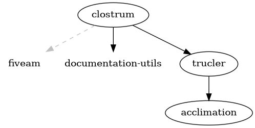
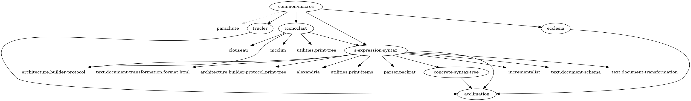
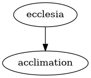

SICL Projects
1 Overview
| Name | Description | License(s) | Maintainer(s) | Documentation | Tests |
|---|---|---|---|---|---|
| acclimation | Library supporting internationalization | BSD 2-clause | Robert Strandh | no documentation detected | no tests detected |
| anatomicl | Portable STRUCTURE implementation for Common Lisp. | BSD | Robert Strandh, Sylvia Harrington, Tarn W. Burton | no documentation detected | ansi-test-harness |
| buoy | no description | no documentation detected | no tests detected | ||
| cleavir | Utilities for textual I/O of Lisp objects. | BSD | Jan Moringen, Marco Heisig, Charles Zhang, Bike, Robert Strandh | no documentation detected | unrecognized test method |
| clostrum | First-class global environments for Common Lisp. |
| fiveam | ||
| common-boot | no description | no documentation detected | unrecognized test method, parachute | ||
| common-macros | no description | no documentation detected | parachute | ||
| concrete-syntax-tree | Library for parsing Common Lisp code into a concrete syntax tree. | BSD | Jan Moringen, Robert Strandh |
| fiveam |
| consecution | no description | no documentation detected | rt, ansi-test-harness | ||
| constrictor | Implementation of the Conses dictionary, base system. | BSD | Robert Strandh, Tarn W. Burton | no documentation detected | ansi-test-harness, unrecognized test method |
| ctype | An implementation of the Common Lisp type system. | BSD | Bike | no documentation detected | no tests detected |
| cyclosis | ANSI Test system for Cyclosis | BSD | Tarn W. Burton | no documentation detected | ansi-test-harness |
| ecclesia | Utilities for parsing Lisp code. | MIT | Robert Strandh | no documentation detected | no tests detected |
| eclector | A portable, extensible Common Lisp reader. | BSD | Robert Strandh, Jan Moringen |
| unrecognized test method, fiveam |
| extrinsicl | Extrinsic Common Lisp environment. | BSD | Bike | no documentation detected | no tests detected |
| futhark | This library implements most of the functionality in the Strings dictionary of the Common Lisp standard | BSD | Robert Strandh | no documentation detected | ansi-test-harness |
| iconoclast | no description | no documentation detected | parachute | ||
| incless | A portable and extensible Common Lisp printer implementation (core) | BSD | Tarn W. Burton, Robert Strandh, Lonjil | no documentation detected | ansi-test-harness |
| inravina | A portable and extensible Common Lisp pretty printer. | MIT | Tarn W. Burton | no documentation detected | ansi-test-harness, parachute |
| invistra | A portable and extensible Common Lisp FORMAT implementation | BSD | Robert Strandh, Tarn W. Burton | no documentation detected | ansi-test-harness, parachute |
| khazern | A portable and extensible Common Lisp LOOP implementation | BSD | Robert Strandh, Tarn W. Burton | no documentation detected | ansi-test-harness, unrecognized test method, parachute |
| maclina | Reference implementation of the Maclina bytecode system. | BSD | Charles Zhang, Christian Schafmeister, Tarn W. Burton, Bike | no documentation detected | fiveam |
| parcl-core | Protocols and shared code for package system implementations. | BSD | Jan Moringen, Robert Strandh | ansi-test-harness, fiveam | |
| quaviver | A portable and extensible floating point string library | MIT AND (Apache-2.0 WITH LLVM-exception OR BSL-1.0), MIT | Alex Wood, Robert Strandh, Paul A. Patience, Tarn W. Burton | no documentation detected | ansi-test-harness, parachute |
| s-expression-syntax | A declarative description of Common Lisp's s-expression syntax. | MIT | Jan Moringen |
| fiveam |
| salmagundi | no description | no documentation detected | no tests detected | ||
| tazivor | A portable Common Lisp inspector | MIT | Tarn W. Burton | no documentation detected | no tests detected |
| trucler | Library for managing lexical environments. | FreeBSD, see file LICENSE.text | Robert Strandh |
| unrecognized test method |
2 Details
2.1 Project acclimation
- Repository
- https://github.com/robert-strandh/Acclimation
- Description
- Library supporting internationalization
- License
- BSD 2-clause
- Maintainers
- Robert Strandh
- Tests
- no tests detected
- Documentation
- no documentation detected
- Systems
- Dependency graph
2.2 Project anatomicl
- Repository
- https://github.com/s-expressionists/anatomicl
- Description
- Portable STRUCTURE implementation for Common Lisp.
- License
- BSD
- Maintainers
- Robert Strandh, Sylvia Harrington, Tarn W. Burton
- Tests
- ansi-test-harness
- Documentation
- no documentation detected
- Systems
- Dependency graph
2.3 Project buoy
- Repository
- https://github.com/s-expressionists/buoy
- Description
- no description
- License
- no license information
- Maintainers
- no maintainer information
- Tests
- no tests detected
- Documentation
- no documentation detected
- Systems
- Dependency graph
2.4 Project cleavir
- Repository
- https://github.com/s-expressionists/Cleavir
- Description
- Utilities for textual I/O of Lisp objects.
- License
- BSD
- Maintainers
- Jan Moringen, Marco Heisig, Charles Zhang, Bike, Robert Strandh
- Tests
- unrecognized test method
- Documentation
- no documentation detected
- Systems
- cleavir-ast-to-bir
- cleavir-ast-transformations
- cleavir-abstract-interpreter
- cleavir-ast-visualizer
- cleavir-ast
- cleavir-attributes
- cleavir-bir-builder
- cleavir-bir-transformations
- cleavir-bir-visualizer
- cleavir-bir
- cleavir-cst-to-ast-test
- cleavir-cst-to-ast
- cleavir-cst-to-ast2
- cleavir-compilation-policy
- cleavir-conditions
- cleavir-ctype
- cleavir-def-use-chains-test
- cleavir-def-use-chains
- cleavir-documentation-generation
- cleavir-dominance-test
- cleavir-dominance
- cleavir-environment
- cleavir-example
- cleavir-flow
- cleavir-graph-test-utilities
- cleavir-graph
- cleavir-io
- cleavir-liveness
- cleavir-loops
- cleavir-meter
- cleavir-primop
- cleavir-reaching-definitions-test
- cleavir-reaching-definitions
- cleavir-register-allocation
- cleavir-set
- cleavir-stealth-mixins
- Dependency graph
2.5 Project clostrum
- Repository
- https://github.com/s-expressionists/clostrum
- Description
- First-class global environments for Common Lisp.
- License
- no license information
- Maintainers
- no maintainer information
- Tests
- fiveam
- Documentation
- Tex Manual
- Systems
- Dependency graph
- 
2.6 Project common-boot
- Repository
- https://github.com/robert-strandh/common-boot
- Description
- no description
- License
- no license information
- Maintainers
- no maintainer information
- Tests
- unrecognized test method, parachute
- Documentation
- no documentation detected
- Systems
- Dependency graph
2.7 Project common-macros
- Repository
- https://github.com/robert-strandh/common-macros
- Description
- no description
- License
- no license information
- Maintainers
- no maintainer information
- Tests
- parachute
- Documentation
- no documentation detected
- Systems
- Dependency graph
- 
2.8 Project concrete-syntax-tree
- Repository
- https://github.com/scymtym/concrete-syntax-tree
- Description
- Library for parsing Common Lisp code into a concrete syntax tree.
- License
- BSD
- Maintainers
- Jan Moringen, Robert Strandh
- Tests
- fiveam
- Documentation
- Texinfo Manual
- Tex Manual
- Systems
- Dependency graph

2.9 Project consecution
- Repository
- https://github.com/s-expressionists/consecution
- Description
- no description
- License
- no license information
- Maintainers
- no maintainer information
- Tests
- rt, ansi-test-harness
- Documentation
- no documentation detected
- Systems
- Dependency graph

2.10 Project constrictor
- Repository
- https://github.com/s-expressionists/constrictor
- Description
- Implementation of the Conses dictionary, base system.
- License
- BSD
- Maintainers
- Robert Strandh, Tarn W. Burton
- Tests
- ansi-test-harness, unrecognized test method
- Documentation
- no documentation detected
- Systems
- Dependency graph
2.11 Project ctype
- Repository
- https://github.com/s-expressionists/ctype
- Description
- An implementation of the Common Lisp type system.
- License
- BSD
- Maintainers
- Bike
- Tests
- no tests detected
- Documentation
- no documentation detected
- Systems
- Dependency graph
2.12 Project cyclosis
- Repository
- https://github.com/s-expressionists/cyclosis
- Description
- ANSI Test system for Cyclosis
- License
- BSD
- Maintainers
- Tarn W. Burton
- Tests
- ansi-test-harness
- Documentation
- no documentation detected
- Systems
- Dependency graph

2.13 Project ecclesia
- Repository
- https://github.com/s-expressionists/ecclesia
- Description
- Utilities for parsing Lisp code.
- License
- MIT
- Maintainers
- Robert Strandh
- Tests
- no tests detected
- Documentation
- no documentation detected
- Systems
- Dependency graph
- 
2.14 Project eclector
- Repository
- https://github.com/s-expressionists/Eclector
- Description
- A portable, extensible Common Lisp reader.
- License
- BSD
- Maintainers
- Robert Strandh, Jan Moringen
- Tests
- unrecognized test method, fiveam
- Documentation
- Texinfo Manual
- Tex Manual
- Systems
- Dependency graph
2.15 Project extrinsicl
- Repository
- https://github.com/s-expressionists/extrinsicl
- Description
- Extrinsic Common Lisp environment.
- License
- BSD
- Maintainers
- Bike
- Tests
- no tests detected
- Documentation
- no documentation detected
- Systems
- Dependency graph

2.16 Project futhark
- Repository
- https://github.com/robert-strandh/futhark
- Description
- This library implements most of the functionality in the Strings dictionary of the Common Lisp standard
- License
- BSD
- Maintainers
- Robert Strandh
- Tests
- ansi-test-harness
- Documentation
- no documentation detected
- Systems
- Dependency graph
2.17 Project iconoclast
- Repository
- https://github.com/scymtym/iconoclast
- Description
- no description
- License
- no license information
- Maintainers
- no maintainer information
- Tests
- parachute
- Documentation
- no documentation detected
- Systems
- Dependency graph
2.18 Project incless
- Repository
- https://github.com/s-expressionists/incless
- Description
- A portable and extensible Common Lisp printer implementation (core)
- License
- BSD
- Maintainers
- Tarn W. Burton, Robert Strandh, Lonjil
- Tests
- ansi-test-harness
- Documentation
- no documentation detected
- Systems
- Dependency graph
2.19 Project inravina
- Repository
- https://github.com/s-expressionists/inravina
- Description
- A portable and extensible Common Lisp pretty printer.
- License
- MIT
- Maintainers
- Tarn W. Burton
- Tests
- ansi-test-harness, parachute
- Documentation
- no documentation detected
- Systems
- Dependency graph
2.20 Project invistra
- Repository
- https://github.com/s-expressionists/invistra
- Description
- A portable and extensible Common Lisp FORMAT implementation
- License
- BSD
- Maintainers
- Robert Strandh, Tarn W. Burton
- Tests
- ansi-test-harness, parachute
- Documentation
- no documentation detected
- Systems
- Dependency graph

2.21 Project khazern
- Repository
- https://github.com/s-expressionists/khazern
- Description
- A portable and extensible Common Lisp LOOP implementation
- License
- BSD
- Maintainers
- Robert Strandh, Tarn W. Burton
- Tests
- ansi-test-harness, unrecognized test method, parachute
- Documentation
- no documentation detected
- Systems
- Dependency graph

2.22 Project maclina
- Repository
- https://github.com/s-expressionists/maclina
- Description
- Reference implementation of the Maclina bytecode system.
- License
- BSD
- Maintainers
- Charles Zhang, Christian Schafmeister, Tarn W. Burton, Bike
- Tests
- fiveam
- Documentation
- no documentation detected
- Systems
- Dependency graph

2.23 Project parcl-core
- Repository
- https://github.com/s-expressionists/parcl
- Description
- Protocols and shared code for package system implementations.
- License
- BSD
- Maintainers
- Jan Moringen, Robert Strandh
- Tests
- ansi-test-harness, fiveam
- Documentation
- Systems
- Dependency graph
2.24 Project quaviver
- Repository
- https://github.com/s-expressionists/quaviver
- Description
- A portable and extensible floating point string library
- License
- MIT AND (Apache-2.0 WITH LLVM-exception OR BSL-1.0), MIT
- Maintainers
- Alex Wood, Robert Strandh, Paul A. Patience, Tarn W. Burton
- Tests
- ansi-test-harness, parachute
- Documentation
- no documentation detected
- Systems
- quaviver/compare
- quaviver/benchmark
- quaviver/unit-test
- quaviver/ansi-test
- quaviver/stream
- quaviver/python
- quaviver/json
- quaviver/fortran
- quaviver/common-lisp
- quaviver/c
- quaviver/blub
- quaviver/liebler
- quaviver/jaffer
- quaviver/dragonbox
- quaviver/schubfach
- quaviver/burger-dybvig/unit-test
- quaviver/burger-dybvig
- quaviver/native
- quaviver/trailing-zeros
- quaviver
- Dependency graph
2.25 Project s-expression-syntax
- Repository
- https://github.com/scymtym/s-expression-syntax
- Description
- A declarative description of Common Lisp's s-expression syntax.
- License
- MIT
- Maintainers
- Jan Moringen
- Tests
- fiveam
- Documentation
- Texinfo Manual
- Systems
- Dependency graph
2.26 Project salmagundi
- Repository
- https://github.com/s-expressionists/salmagundi
- Description
- no description
- License
- no license information
- Maintainers
- no maintainer information
- Tests
- no tests detected
- Documentation
- no documentation detected
- Systems
- Dependency graph
2.27 Project tazivor
- Repository
- https://github.com/s-expressionists/tazivor
- Description
- A portable Common Lisp inspector
- License
- MIT
- Maintainers
- Tarn W. Burton
- Tests
- no tests detected
- Documentation
- no documentation detected
- Systems
- Dependency graph

2.28 Project trucler
- Repository
- https://github.com/s-expressionists/Trucler
- Description
- Library for managing lexical environments.
- License
- FreeBSD, see file LICENSE.text
- Maintainers
- Robert Strandh
- Tests
- unrecognized test method
- Documentation
- Tex Manual
- Systems
- Dependency graph
3 Manuals
3.1 Concrete Syntax Tree User's Manual
This manual is for Concrete Syntax Tree version 0.4.0.
Copyright 2017 Robert Strandh
Copyright 2025 Jan Moringen
3.1.1 Introduction
Concrete Syntax Tree is a library for manipulating Common Lisp source code enhanced with information about the origin of the source. It is intended to solve a problem that occurs in programs which process Common Lisp source code such as file compilers or sophisticated editors. If such a program processes source code by first calling the Common Lisp read function on every top-level expression in a file or buffer, then the information about the origin of those expressions is lost. This loss of information has a serious negative impact on diagnostic messages from the program, because the user does not get direct information about the origin of the code that the respective message refers to. The solution to this problem involves what is called source tracking, which basically means that we need to keep track of this origin information, throughout the processing steps. In case of a compiler, source tracking should cover processing steps all the way from source code to executable code.
One requirement for improved source tracking is that the source code must be read by an improved version of the read function 1. A typical solution would be to make read keep a hash table that associates the expressions being read to the location in the file. But this solution only works for freshly allocated Common Lisp objects. It will not work for code elements such as numbers, characters, or symbols, simply because there may be several occurrences of similar code elements in the source. The solution provided by this library is to manipulate Common Lisp source code in the form of a concrete syntax tree, or CST for short. A CST is simply a wrapper (in the form of a standard instance) around a Common Lisp expression, which makes the representation of every source sub-expression distinct and also provides a place for attaching the additional information required for source tracking. In order to make the manipulation of CSTs as painless as possible for client code, this library provides a set of functions that mimic the ones that would be used on raw Common Lisp code, such as first, rest, consp, null, etc.
The exact nature of the origin information in a CST is left to the client. Concrete Syntax Tree just propagates this information as much as possible through the functions in the library that manipulate the source code in the form of CSTs. For example, Concrete Syntax Tree provides code utilities for canonicalizing declarations, parsing lambda lists, separating declarations and documentation strings and code bodies, checking whether a form is a proper list, etc. All these utilities manipulate the code in the form of a CST, and provide CSTs as a result of the manipulation that propagates the origin information as much as possible. In particular, Concrete Syntax Tree provide a helper function for an ``intelligent macroexpander'': The concrete-syntax-tree:reconstruct function takes an original CST and the result of macroexpanding the raw code version of that CST, and returns a new CST representing the expanded code in such a way that as much as possible of the origin information is preserved.
3.1.2 User manual
3.1.2.1 Basic Use
In this chapter, we describe the basic functionality that Concrete Syntax Tree provides for manipulating concrete syntax trees.
3.1.2.1.1 Protocol
This class is the base class for all concrete syntax trees.
The value of this initialization argument is the raw Common Lisp expression that this concrete syntax tree represents.
This generic function returns the raw Common Lisp expression that is represented by cst as provide by the initialization argument :raw when cst was created.
This initialization argument is accepted by all subclasses of concrete syntax trees. The value of this initialization argument is a client-specific object that indicates the origin of the source code represented by this concrete syntax tree. A value of nil indicates that the origin of the source code represented by this concrete syntax tree is unknown. The default value (if this initialization argument is not provided) is nil.
This generic function returns the origin information of cst as provide by the initialization argument :source when cst was created.
This generic function returns true if and only if cst is an instance of the class concrete-syntax-tree:atom-cst that has nil as its raw value. Otherwise, it returns false.
This class is a subclass of the class concrete-syntax-tree:cst.
This class is a subclass of the class concrete-syntax-tree:cst.
The value of this initialization argument is the concrete syntax tree that represents the car of the raw Common Lisp expression represented by this concrete syntax tree.
The value of this initialization argument is the concrete syntax tree that represents the cdr of the raw Common Lisp expression represented by this concrete syntax tree.
This generic function returns the concrete syntax tree that represents the car of the raw Common Lisp expression represented by cons-cst.
This generic function returns the concrete syntax tree that represents the cdr of the raw Common Lisp expression represented by cons-cst.
This generic function returns true if and only if cst is an instance of the class concrete-syntax-tree:cons-cst. Otherwise, it returns false.
3.1.2.1.2 Additional API functions
3.1.2.2 Reconstructing CSTs from s-expressions
This section describes the protocol that allows clients to reconstruct a concrete syntax tree from an ordinary s-expression, for example after macroexpansion. The typical scenario is as follows: Let be some expression concrete syntax tree, and let be the raw version of it. Let be a Common Lisp expression obtained by macroexpanding . We want to construct an expression concrete syntax tree with as its raw version in such a way that when contains a subexpression that is also in , then we want the corresponding concrete syntax tree for in to be identical to the concrete syntax tree for in as much as possible.
CST T T'
raw reconstruct
s-expr R macroexpand E
subexpression subexpression
s-expr S SClearly what we want to accomplish can not always be precise. It can only be precise when is a cl:cons and contains the identical (in the sense of cl:eq) cl:cons. For atoms, we just have to guess.
The following generic function implements the above functionality:
Produce and return a concrete-syntax-tree:cst from expression, reusing where possible cst or subtrees of it.
expression is an arbitrary s-expression, for example the result macroexpansion. However, applying the reconstruction process only makes sense if expression can be expected to contain subexpressions which are identical to certain raw values in subtrees of cst.
Note that the reconstruction process is approximate: For example, if expression contains fresh conses which in turn contain atoms, it is generally impossible to determine whether those atoms correspond to certain raw values of nodes in cst or not.
There are two default methods:
The first method is specialized to cst being a concrete-syntax-tree:cst instance and uses cst and its subtrees for the reconstruction process.
The second method is specialized to cst being a cl:sequence which must contain concrete-syntax-tree:cst instances as its elements. Each element and its subtrees are considered for the reconstruction process.
3.1.2.3 Parsing lambda lists
The Concrete Syntax Tree library contains a framework for parsing lambda lists. This framework contains functions for parsing the types of lambda lists that specified in the Common Lisp standard, but it also contains a protocol that allows different implementations to specify additional lambda-list keywords, and to specify how lambda lists containing these additional keywords should be parsed.
3.1.2.3.1 Classes for grammar symbols
This class is the root of all grammar-symbol classes.
This class is the root class of all classes that represent parameter groups. It is a subclass of the class grammar-symbol.
This initialization argument can be used with all subclasses of the class named parameter-group. For parameter groups that have no lambda-list keywords, such as all the parameter groups corresponding to required parameters, the value of the argument is a (possibly empty) list of parameters. For parameter groups that have associated lambda-list keywords, the value of the argument includes those lambda-list keywords in addition to the parameters themselves.
This class is used as a superclass of all classes representing parameter groups with a keyword followed by a single parameter.
This initialization argument can be used with subclasses of the class named singleton-parameter-group-mixin, but the parser does not use it. Instead, it passes the :children initialization argument. An appropriate :after method on initialize-instance splits the children into the lambda-list keyword itself and the single following parameter.
This generic function returns a concrete syntax tree representing the single parameter of its argument.
This class is used as a superclass of all classes representing parameter groups with or without a keyword followed by a (possibly empty) list of parameters.
This initialization argument can be used with subclasses of the class named multi-parameter-group-mixin, but the parser does not use it. Instead, it passes the :children initialization argument. An appropriate :after method on initialize-instance computes this initialization argument from the children.
This generic function returns a list of concrete syntax trees representing the parameters of its argument.
This class is the root class of all classes that represent parameter groups that are not introduced by a lambda-list keyword, which is all the different classes representing required parameter groups.
This class is a subclass of the class named parameter-group and the class named multi-parameter-group-mixin.
This class is the root class of all classes that represent parameter groups that are introduced by a lambda-list keyword.
This class is a subclass of the class parameter-group.
This initialization argument can be used with subclasses of the class named explicit-parameter-group, but the parser does not use it. Instead, it passes the :children initialization argument. An appropriate :after method on initialize-instance computes this initialization argument from the children.
This generic function returns the lambda-list keyword of its argument.
This class is the root class of all classes that represent parameter groups that are introduced by a lambda-list keyword, and that can take an arbitrary number of parameters.
This class is a subclass of the class named explicit-parameter-group and of the class named multi-parameter-group-mixin
This class represents the list of required parameters in all lambda lists that only allow a simple variables to represent a required parameter.
This class is a subclass of the class implicit-parameter-group.
This class is the root class of all classes representing optional parameter groups.
It is a subclass of the class explicit-multi-parameter-group.
This class represents the list of optional parameters in all lambda lists that allow for an optional parameter to have a form representing the default value and a supplied-p parameter.
This class is a subclass of the class optional-parameter-group.
This class is the root class of all parameter groups that are introduced by the lambda-list keyword &key.
This class is a subclass of the class explicit-multi-parameter-group.
This function can be called on any instance of the class key-parameter-group. If the lambda-list keyword \&allow-other-keys is present in this key parameter group, then allow-other-keys returns a concrete syntax tree for that lambda-list keyword. If the lambda-list keyword \&allow-other-keys is not present, this function returns nil.
This class represents the list of &key parameters in all lambda lists that allow for the parameter to have a form representing the default value and a supplied-p parameter.
This class is a subclass of the class key-parameter-group.
This class represents the list of &key parameters in a generic-function lambda list. This type of lambda list only allows for the parameter to have a variable name and a keyword.
This class is a subclass of the class key-parameter-group.
This class represent the list of &aux parameters in all lambda lists that allow for such parameters.
This class is a subclass of the class explicit-multi-parameter-group.
This class represents the list of optional parameters in a generic-function lambda list. This type of lambda list only allows for the parameter to have a variable name.
This class is a subclass of the class optional-parameter-group.
This class represents the list of required parameters in a specialized lambda list, i.e., the type of lambda list that can be present in a defmethod definition. In this type of lambda list, a required parameter may optionally have a specializer associated with it.
This class is a subclass of the class implicit-parameter-group.
This class represents the list of required parameters in a destructuring lambda list, i.e. the kind of lambda list that can be present in a defmacro definition, both as the top-level lambda list and as a nested lambda list where this is allowed.
This class is a subclass of the class implicit-parameter-group.
This class is the root class of all parameter groups that consist of a lambda-list keyword followed by a single parameter. It is a subclass of the class explicit-parameter-group.
This class is a subclass of the class named explicit-parameter-group and of the class named singleton-parameter-group-mixin.
This class represents parameter groups that have either the lambda-list keyword \&rest or the lambda-list keyword \&body followed by a simple-variable.
This class is a subclass of the class singleton-parameter-group.
This class represents parameter groups that have either the lambda-list keyword \&rest or the lambda-list keyword \&body followed by a destructuring parameter.
This class is a subclass of the class singleton-parameter-group.
This class represents parameter groups that have the lambda-list keyword \&environment followed by a simple-variable.
This class is a subclass of the class singleton-parameter-group.
This class represents parameter groups that have the lambda-list keyword \&whole followed by a simple-variable.
This class is a subclass of the class singleton-parameter-group.
This class is the root class of all classes that represent individual lambda-list parameters.
This class is a subclass of the class grammar-symbol.
This mixin class is a superclass of subclasses of parameter that allow for an optional form to be supplied, which will be evaluated to supply a value for a parameter that is not explicitly passed as an argument.
This initialization argument can be used when an instance of (a subclass of) the class form-mixin is created. The value of this initialization argument is either a concrete syntax tree representing the form that was supplied in the lambda list, or nil, indicating that no form was supplied.
This generic function can be applied to instances of all subclasses of the class form-mixin. It returns the value that was supplied using the :form initialization argument when the instance was created.
This mixin class is a superclass of subclasses of parameter that allow for an optional supplied-p parameter to be supplied. At run-time, the value of this parameter indicates whether an explicit argument was supplied that provides a value for the parameter.
This initialization argument can be used when an instance of (a subclass of) the class supplied-p-mixin is created. The value of this initialization argument is either a concrete syntax tree representing the supplied-p parameter that was given in the lambda list, or nil, indicating that no supplied-p parameter was given.
This generic function can be applied to instances of all subclasses of the class supplied-p-mixin. It returns the value that was provided using the :supplied-p initialization argument when the instance was created.
This mixin class is a superclass of subclasses of parameter that allow for an optional keyword parameter to be supplied.
This initialization argument can be used when an instance of (a subclass of) the class keyword-mixin is created. The value of this initialization argument is either a concrete syntax tree representing the keyword parameter that was given in the lambda list, or nil, indicating that no keyword parameter was given.
This class represents lambda-list parameters that must be simple variables, for example the required parameters in an ordinary lambda list, or the parameter following the \&environment lambda-list keyword.
This class is a subclass of the class parameter.
This class represents an optional parameter of the form that is allowed in an ordinary lambda list, i.e., a parameter that, in addition to the parameter name, can have a form representing the default value and an associated supplied-p parameter.
This class is a subclass of the class named parameter, the class named form-mixin, and the class named supplied-p-mixin.
This class represents a &key parameter of the form that is allowed in an ordinary lambda list, i.e., a parameter that, in addition to the parameter name, can have a keyword, a form representing the default value, and an associated supplied-p parameter.
This class is a subclass of the class named parameter, the class named form-mixin, the class named supplied-p-mixin, and the class named keyword-mixin.
This class represents a &key parameter of the form that is allowed in a generic-function lambda list, i.e., a parameter that, in addition to the parameter name, can have a keyword, but no form representing the default value, and no associated supplied-p parameter.
This class is a subclass of the class named parameter, and the class named keyword-mixin.
This class represents an &aux parameter, i.e., a parameter that, in addition to the parameter name, can have a form representing the default value.
This class is a subclass of the classes parameter and form-mixin.
This class represents an optional parameter of the form that is allowed in an ordinary lambda list, i.e., a parameter that can only have a name, but that name can optionally be the element of a singleton list, which is why it is distinct from a parameter of type simple-variable.
This class is a subclass of the class parameter.
This class represents the kind of required parameter that can appear in a specialized lambda list, i.e. a lambda list in a defmethod form. A parameter of this type may optionally have a specializer in the form of a class name or an eql specializer associated with it.
This class is a subclass of the class parameter.
This class represents all parameters that can be either simple variables or a pattern in the form of a (possibly dotted) list, or even a destructuring lambda list.
This class is a subclass of the class grammar-symbol.
This class is the root class of all classes representing lambda-list keywords.
This class is a subclass of the class grammar-symbol.
This class represents the lambda-list keyword \&optional. Unless client code has defined some additional lambda-list keyword that is used in the same way as \&optional, an instance of this class always represents the lambda-list keyword \&optional.
This class is a subclass of the class lambda-list-keyword.
This class represents the lambda-list keyword \&rest. Unless client code has defined some additional lambda-list keyword that is used in the same way as \&rest, an instance of this class always represents the lambda-list keyword \&rest.
This class is a subclass of the class lambda-list-keyword.
This class represents the lambda-list keyword \&body. Unless client code has defined some additional lambda-list keyword that is used in the same way as \&body, an instance of this class always represents the lambda-list keyword \&body.
This class is a subclass of the class lambda-list-keyword.
This class represents the lambda-list keyword &key. Unless client code has defined some additional lambda-list keyword that is used in the same way as &key, an instance of this class always represents the lambda-list keyword &key.
This class is a subclass of the class lambda-list-keyword.
This class represents the lambda-list keyword \&allow-other-keys. Unless client code has defined some additional lambda-list keyword that is used in the same way as \&allow-other-keys, an instance of this class always represents the lambda-list keyword \&allow-other-keys.
This class is a subclass of the class lambda-list-keyword.
This class represents the lambda-list keyword &aux. Unless client code has defined some additional lambda-list keyword that is used in the same way as &aux, an instance of this class always represents the lambda-list keyword &aux.
This class is a subclass of the class lambda-list-keyword.
This class represents the lambda-list keyword \&environment. Unless client code has defined some additional lambda-list keyword that is used in the same way as \&environment, an instance of this class always represents the lambda-list keyword \&environment.
This class is a subclass of the class lambda-list-keyword.
This class represents the lambda-list keyword \&whole. Unless client code has defined some additional lambda-list keyword that is used in the same way as \&whole, an instance of this class always represents the lambda-list keyword \&whole.
This class is a subclass of the class lambda-list-keyword.
Notice that there is no class for the boa lambda list, since it is syntactically equivalent to an ordinary lambda list. Similarly, there is no deftype lambda list because it is syntactically equivalent to a macro lambda list.
This class is a subclass of the class grammar-symbol.
This generic function returns a (possibly empty) list of instances of (some subclass of) the class parameter-group as described in 3.1.2.3.1.1 Classes for parameter groups.
Applying the function children to an instance of this class returns a list with the following elements (in that order):
A mandatory instance of the grammar-symbol class named ordinary-required-parameter-group.
An optional instance of the grammar-symbol class named ordinary-optional-parameter-group.
An optional instance of the grammar-symbol class named ordinary-rest-parameter-group.
An optional instance of the grammar-symbol class named ordinary-key-parameter-group.
An optional instance of the grammar-symbol class named aux-parameter-group.
This class is a subclass of the class lambda-list-type.
Applying the function children to an instance of this class returns a list with the following elements (in that order):
A mandatory instance of the grammar-symbol class named ordinary-required-parameter-group.
An optional instance of the grammar-symbol class named generic-function-optional-parameter-group,
An optional instance of the grammar-symbol class named ordinary-rest-parameter-group.
An optional instance of the grammar-symbol class named generic-function-key-parameter-group.
An optional instance of the grammar-symbol class named aux-parameter-group.
This class is a subclass of the class lambda-list-type.
Applying the function children to an instance of this class returns a list with the following elements (in that order):
A mandatory instance of the grammar-symbol class named specialized-required-parameter-group.
An optional instance of the grammar-symbol class named ordinary-optional-parameter-group.
An optional instance of the grammar-symbol class named ordinary-rest-parameter-group.
An optional instance of the grammar-symbol class named ordinary-key-parameter-group.
An optional instance of the grammar-symbol class named aux-parameter-group.
This class is a subclass of the class lambda-list-type.
Applying the function children to an instance of this class returns a list with the following elements (in that order):
A mandatory instance of the grammar-symbol class named ordinary-required-parameter-group.
An optional instance of the grammar-symbol class named ordinary-optional-parameter-group.
An optional instance of the grammar-symbol class named ordinary-rest-parameter-group.
An optional instance of the grammar-symbol class named t-key-parameter-group.
An optional instance of the grammar-symbol class named environment-parameter-group.
This class is a subclass of the class lambda-list-type.
Applying the function children to an instance of this class returns a list with the following elements (in that order):
A mandatory instance of the grammar-symbol class named ordinary-required-parameter-group.
An optional instance of the grammar-symbol class named ordinary-optional-parameter-group.
An optional instance of the grammar-symbol class named ordinary-rest-parameter-group.
This class is a subclass of the class lambda-list-type.
Applying the function children to an instance of this class returns a list with the following elements (in that order):
An optional instance of the grammar-symbol class named whole-parameter-group.
A mandatory instance of the grammar-symbol class named ordinary-required-parameter-group.
An optional instance of the grammar-symbol class named ordinary-optional-parameter-group.
An optional instance of the grammar-symbol class named ordinary-rest-parameter-group.
An optional instance of the grammar-symbol class named ordinary-key-parameter-group.
An optional instance of the grammar-symbol class named aux-parameter-group.
This class is a subclass of the class lambda-list-type.
This class is a subclass of the class lambda-list-type.
This class is a subclass of the class lambda-list-type.
This class is a subclass of the class grammar-symbol.
3.1.2.3.2 Variables
This variable defines a grammar rule for the grammar-symbol class named ordinary-required-parameter-group. This rule defines an ordinary required parameter group as a (possibly empty) sequence of instances of the class simple-variable.
This variable defines a grammar rule for the grammar-symbol class named ordinary-optional-parameter-group. This rule defines an ordinary optional parameter group as the lambda list keyword \&optional, followed by a (possibly empty) sequence of instances of the class ordinary-optional-parameter.
This variable defines a grammar rule for the grammar-symbol class named ordinary-rest-parameter-group. This rule defines an ordinary rest parameter group as the lambda list keyword \&rest, followed by an instances of the class simple-variable.
This variable defines a grammar rule for the grammar-symbol class named ordinary-key-parameter-group. This rule defines an ordinary key parameter group as the lambda list keyword &key, followed by a (possibly empty) sequence of instances of the class ordinary-key-parameter, optionally followed by the lambda-list keyword \&allow-other-keys.
This variable defines a grammar rule for the grammar-symbol class named aux-parameter-group. This rule defines an aux parameter group as the lambda list keyword &aux, followed by a (possibly empty) sequence of instances of the class aux-parameter.
This variable defines a grammar rule for the grammar-symbol class named generic-function-optional-parameter-group. This rule defines a generic-function optional parameter group as the lambda list keyword \&optional, followed by a (possibly empty) sequence of instances of the class named generic-function-optional-parameter.
This variable defines a grammar rule for the grammar-symbol class named generic-function-key-parameter-group. This rule defines an generic-function key parameter group as the lambda list keyword &key, followed by a (possibly empty) sequence of instances of the class generic-function-key-parameter, optionally followed by the lambda-list keyword \&allow-other-keys.
This variable defines a grammar rule for the grammar-symbol class named specialized-required-parameter-group. This rule defines an specialized required parameter group as a (possibly empty) sequence of instances of the class specialized-required-parameter.
This variable defines a grammar rule for the grammar-symbol class named environment-parameter-group. This rule defines an environment parameter group as the lambda list keyword \&environment, followed by an instances of the class simple-variable.
This variable defines a grammar rule for the grammar-symbol class named whole-parameter-group. This rule defines a whole parameter group as the lambda list keyword \&whole, followed by an instances of the class simple-variable.
This variable defines a grammar rule for the grammar-symbol class named destructuring-required-parameter-group. This rule defines an destructuring required parameter group as a (possibly empty) sequence of instances of the class destructuring-parameter.
This variable defines a grammar rule for the grammar-symbol class named destructuring-rest-parameter-group. This rule defines a destructuring rest parameter group as the lambda list keyword \&rest, followed by an instances of the class destructuring-parameter.
This variable defines a grammar rule for the grammar-symbol class named ordinary-lambda-list. It has the following definition:
(defparameter *ordinary-lambda-list*
'((ordinary-lambda-list <-
ordinary-required-parameter-group
(? ordinary-optional-parameter-group)
(? ordinary-rest-parameter-group)
(? ordinary-key-parameter-group)
(? aux-parameter-group))))This variable defines a grammar rule for the grammar-symbol class named generic-function-lambda-list. It has the following definition:
(defparameter *generic-function-lambda-list*
'((generic-function-lambda-list <-
ordinary-required-parameter-group
(? generic-function-optional-parameter-group)
(? ordinary-rest-parameter-group)
(? generic-function-key-parameter-group))))This variable defines a grammar rule for the grammar-symbol class named specialized-lambda-list. It has the following definition:
(defparameter *specialized-lambda-list*
'((specialized-lambda-list <-
specialized-required-parameter-group
(? ordinary-optional-parameter-group)
(? ordinary-rest-parameter-group)
(? ordinary-key-parameter-group)
(? aux-parameter-group))))This variable defines a grammar rule for the grammar-symbol class named defsetf-lambda-list. It has the following definition:
(defparameter *defsetf-lambda-list*
'((defsetf-lambda-list <-
ordinary-required-parameter-group
(? ordinary-optional-parameter-group)
(? ordinary-rest-parameter-group)
(? ordinary-key-parameter-group)
(? environment-parameter-group))))This variable defines a grammar rule for the grammar-symbol class named define-modify-macro-lambda-list. It has the following definition:
(defparameter *define-modify-macro-lambda-list*
'((define-modify-macro-lambda-list <-
ordinary-required-parameter-group
(? ordinary-optional-parameter-group)
(? ordinary-rest-parameter-group))))This variable defines a grammar rule for the grammar-symbol class named define-method-combination-lambda-list. It has the following definition:
(defparameter *define-method-combination-lambda-list*
'((define-method-combination-lambda-list <-
(? whole-parameter-group)
ordinary-required-parameter-group
(? ordinary-optional-parameter-group)
(? ordinary-rest-parameter-group)
(? ordinary-key-parameter-group)
(? aux-parameter-group))))This variable defines a grammar rule for the grammar-symbol class named destructuring-lambda-list.
This rule defines a destructuring lambda list as sequence of the following items:
An optional instance of the grammar-symbol class named whole-parameter-group.
A mandatory instance of the grammar-symbol class named destructuring-required-parameter-group.
An optional instance of the grammar-symbol class named ordinary-optional-parameter-group.
An optional instance of the grammar-symbol class named destructuring-rest-parameter-group.
An optional instance of the grammar-symbol class named ordinary-key-parameter-group.
An optional instance of the grammar-symbol class named aux-parameter-group.
This variable defines a grammar rule for the grammar-symbol class named macro-lambda-list.
This rule defines a macro lambda list as sequence of the following items:
An optional instance of the grammar-symbol class named whole-parameter-group.
An optional instance of the grammar-symbol class named environment-parameter-group.
A mandatory instance of the grammar-symbol class named destructuring-required-parameter-group.
An optional instance of the grammar-symbol class named environment-parameter-group.
An optional instance of the grammar-symbol class named ordinary-optional-parameter-group.
An optional instance of the grammar-symbol class named environment-parameter-group.
An optional instance of the grammar-symbol class named destructuring-rest-parameter-group.
An optional instance of the grammar-symbol class named environment-parameter-group.
An optional instance of the grammar-symbol class named ordinary-key-parameter-group.
An optional instance of the grammar-symbol class named environment-parameter-group.
An optional instance of the grammar-symbol class named aux-parameter-group.
An optional instance of the grammar-symbol class named environment-parameter-group.
Notice that this definition allows for there to be several occurrences of the grammar symbol environment-parameter-group, whereas the Common Lisp standard allows for at most one such occurrence. The top-level parser for this type of lambda list checks that at most one such occurrence is present after parsing is complete.
In order to have a grammar that is possible to use for parsing a lambda list, in addition to the rules for all the lambda list types and its components, a target rule is required to initialize a grammar object with generate-grammar, which the parser ultimately uses. The target is in accordance to the particular lambda-list type that is desired.
This variable contains all the standard grammar rules in description form.
This variable contains a grammar object with all the standard grammar rules, with target ordinary-lambda-list-grammar.
This variable contains a grammar object with all the standard grammar rules, with target generic-function-lambda-list.
This variable contains a grammar object with all the standard grammar rules, with target specialized-lambda-list.
This variable contains a grammar object with all the standard grammar rules, with target defsetf-lambda-list.
This variable contains a grammar object with all the standard grammar rules, with target define-modify-macro-lambda-list.
This variable contains a grammar object with all the standard grammar rules, with target define-method-combination-lambda-list.
This variable contains a grammar object with all the standard grammar rules, with target destructuring-lambda-list.
This variable contains a grammar object with all the standard grammar rules, with target macro-lambda-list.
3.1.2.3.3 Parsers for standard lambda lists
&key (error-p t) &key (error-p t) &key (error-p t) &key (error-p t) &key (error-p t) &key (error-p t) &key (error-p t) &key (error-p t)3.1.2.4 Destructuring lambda lists
When applied to lambda lists, the term destructuring means to match its parameters against an argument list, and to generate a set of nested let bindings. A binding will bind a parameter of the lambda list to its corresponding value in the argument list, or it will bind some temporary variable. The argument list is not known at the time of the destructuring, so the form of each binding will consist of calls to destructuring functions such as car and cdr, starting with a variable that holds the entire argument list as its value.
This kind of destructuring is used at macro-expansion time when certain macros are expanded. In particular defmacro and define-compiler-macro. The result of the destructuring is a lambda expression for the macro function. This lambda expression is then compiled to create the final macro function.
Every function defined here wraps a body form in some let bindings. These let bindings are determined by the parameters of a lambda list. Each function handles a different part of the lambda list. The client parameter is some object representing the client. It is used among other things to determine which condition class to use when a a condition needs to be signaled. The argument-variable parameter (abbreviated av is a symbol that, when the resulting macro function is executed on some compound form corresponding to a macro call, will hold the remaining part of the arguments of that macro call yet to be processed.
Some functions have an argument called tail-variable (abbreviated tv), which is also a symbol that is going to be used in subsequent destructuring functions for the same purpose as argument-variable. Such a function is responsible for creating an innermost let form that binds the tail-variable symbol to the part of the argument list that remains after the function has done its processing. Some functions do not need such a variable, because they do not consume any arguments, so the remaining argument list is the same as the initial one.
Given an entire lambda list, which can be a macro lambda list or a destructuring lambda list, wrap body in a bunch of nested let bindings according to the parameters of the lambda list.
Wrap body in a let form corresponding to a single aux parameter. Since aux parameters are independent of the macro-call arguments, there is no need for an argument-variable. The aux parameter itself provides all the information required to determine the let binding.
Wrap body in nested let forms, each corresponding to a single aux parameter in the list of aux parameters parameters. Since aux parameters are independent of the macro-call argument, there is no need for an argument-variable. Each aux parameter in parameters itself provides all the information required to determine the let binding.
Wrap body in a let form corresponding to a single key parameter.
Wrap body in nested let forms, each corresponding to a single key parameter in a list of such key parameters. Since key parameters do not consume any arguments, the list of arguments is the same before and after the key parameters have been processed. As a consequence, we do not need a tail-variable for key parameters.
Wrap body in a let form corresponding to a rest parameter. Since rest parameters do not consume any arguments, the list of arguments is the same before and after the rest parameter has been processed. As a consequence, we do not need a tail-variable for rest parameters.
Wrap body in a let form corresponding to a single optional parameter.
Wrap body in nested let forms, each corresponding to a single optional parameter in a list of such optional parameters. Since every optional parameter does consume an argument, this function does take a tail-variable argument as described above.
Wrap body in one or more let forms corresponding to a single required parameter, depending on whether the required parameter is a simple variable or a destructuring lambda list.
Wrap body in nested let forms, corresponding to the list of required parameters in the list of required parameters parameters. Since every required parameter does consume an argument, this function does take a tail-variable argument as described above.
Wrap body in nested let forms, corresponding to the parameters in the list of parameter groups parameter-groups.
3.1.2.5 Future additions to this library
3.1.3 Internals
3.1.3.1 Lambda-list Parsing
For parsing lambda lists, we use a technique invented by Jay Earley in 1970 (
Error writing a TEXT.DOCUMENT-SCHEMA.SCHEMA:REFERENCE node (TEXT.DOCUMENT-SCHEMA.SCHEMA:REFERENCE ((:TARGET . 1) (((TEXT.DOCUMENT-SCHEMA.SCHEMA:CHUNK NIL :TEXT "Earley, J. (1970). An Efficient Context-free Parsing Algorithm. Commun. ACM, 13(2), 94102.")))) :NAMESPACE :CITATION) There is no applicable method for the generic function #<STANDARD-GENERIC-FUNCTION ARCHITECTURE.BUILDER-PROTOCOL:NODE-KIND (31)> when called with arguments (LIST NIL). See also: The ANSI Standard, Section 7.6.6,
Error writing a TEXT.DOCUMENT-SCHEMA.SCHEMA:REFERENCE node (TEXT.DOCUMENT-SCHEMA.SCHEMA:REFERENCE ((:TARGET . 1) (((TEXT.DOCUMENT-SCHEMA.SCHEMA:CHUNK NIL :TEXT "Earley, J. (1983). An Efficient Context-free Parsing Algorithm. Commun. ACM, 26(1), 5761.")))) :NAMESPACE :CITATION) There is no applicable method for the generic function #<STANDARD-GENERIC-FUNCTION ARCHITECTURE.BUILDER-PROTOCOL:NODE-KIND (31)> when called with arguments (LIST NIL). See also: The ANSI Standard, Section 7.6.6).
Concept index
Function and macro and variable and type index
- *aux-parameter-group* [concrete-syntax-tree]
- One occurence in section 3.1.2.3.2.1 Parameter groups
- *define-method-combination-lambda-list* [concrete-syntax-tree]
- One occurence in section 3.1.2.3.2.2 Lambda-list types
- *define-method-combination-lambda-list-grammar* [concrete-syntax-tree]
- One occurence in section 3.1.2.3.2.3 Full grammars
- *define-modify-macro-lambda-list*,concrete-syntax-tree
- One occurence in section 3.1.2.3.2.2 Lambda-list types
- *define-modify-macro-lambda-list-grammar* [concrete-syntax-tree]
- One occurence in section 3.1.2.3.2.3 Full grammars
- *defsetf-lambda-list* [concrete-syntax-tree]
- One occurence in section 3.1.2.3.2.2 Lambda-list types
- *defsetf-lambda-list-grammar* [concrete-syntax-tree]
- One occurence in section 3.1.2.3.2.3 Full grammars
- *destructuring-lambda-list* [concrete-syntax-tree]
- One occurence in section 3.1.2.3.2.2 Lambda-list types
- *destructuring-lambda-list-grammar* [concrete-syntax-tree]
- One occurence in section 3.1.2.3.2.3 Full grammars
- *destructuring-required-parameter-group*,concrete-syntax-tree
- One occurence in section 3.1.2.3.2.1 Parameter groups
- *destructuring-rest-parameter-group*,concrete-syntax-tree
- One occurence in section 3.1.2.3.2.1 Parameter groups
- *environment-parameter-group* [concrete-syntax-tree]
- One occurence in section 3.1.2.3.2.1 Parameter groups
- *generic-function-key-parameter-group* [concrete-syntax-tree]
- One occurence in section 3.1.2.3.2.1 Parameter groups
- *generic-function-lambda-list*,concrete-syntax-tree
- One occurence in section 3.1.2.3.2.2 Lambda-list types
- *generic-function-lambda-list-grammar* [concrete-syntax-tree]
- One occurence in section 3.1.2.3.2.3 Full grammars
- *generic-function-optional-parameter-group* [concrete-syntax-tree]
- One occurence in section 3.1.2.3.2.1 Parameter groups
- *macro-lambda-list* [concrete-syntax-tree]
- One occurence in section 3.1.2.3.2.2 Lambda-list types
- *macro-lambda-list-grammar* [concrete-syntax-tree]
- One occurence in section 3.1.2.3.2.3 Full grammars
- *ordinary-key-parameter-group* [concrete-syntax-tree]
- One occurence in section 3.1.2.3.2.1 Parameter groups
- *ordinary-lambda-list* [concrete-syntax-tree]
- One occurence in section 3.1.2.3.2.2 Lambda-list types
- *ordinary-lambda-list-grammar* [concrete-syntax-tree]
- One occurence in section 3.1.2.3.2.3 Full grammars
- *ordinary-optional-parameter-group* [concrete-syntax-tree]
- One occurence in section 3.1.2.3.2.1 Parameter groups
- *ordinary-required-parameter-group* [concrete-syntax-tree]
- One occurence in section 3.1.2.3.2.1 Parameter groups
- *ordinary-rest-parameter-group* [concrete-syntax-tree]
- One occurence in section 3.1.2.3.2.1 Parameter groups
- *specialized-lambda-list* [concrete-syntax-tree]
- One occurence in section 3.1.2.3.2.2 Lambda-list types
- *specialized-lambda-list-grammar* [concrete-syntax-tree]
- One occurence in section 3.1.2.3.2.3 Full grammars
- *specialized-required-parameter-group* [concrete-syntax-tree]
- One occurence in section 3.1.2.3.2.1 Parameter groups
- *standard-grammar* [concrete-syntax-tree]
- One occurence in section 3.1.2.3.2.3 Full grammars
- *whole-parameter-group* [concrete-syntax-tree]
- One occurence in section 3.1.2.3.2.1 Parameter groups
- :children
- One occurence in section 3.1.2.3.1.1 Classes for parameter groups
- :first
- One occurence in section 3.1.2.1.1 Protocol
- :form
- One occurence in section 3.1.2.3.1.2 Classes for individual parameters
- :keyword
- :parameter
- One occurence in section 3.1.2.3.1.1 Classes for parameter groups
- :parameters
- One occurence in section 3.1.2.3.1.1 Classes for parameter groups
- :raw
- One occurence in section 3.1.2.1.1 Protocol
- :rest
- One occurence in section 3.1.2.1.1 Protocol
- :source
- One occurence in section 3.1.2.1.1 Protocol
- :supplied-p
- One occurence in section 3.1.2.3.1.2 Classes for individual parameters
- allow-other-keys [concrete-syntax-tree]
- One occurence in section 3.1.2.3.1.1 Classes for parameter groups
- atom-cst [concrete-syntax-tree]
- One occurence in section 3.1.2.1.1 Protocol
- aux-parameter [concrete-syntax-tree]
- One occurence in section 3.1.2.3.1.2 Classes for individual parameters
- aux-parameter-group [concrete-syntax-tree]
- One occurence in section 3.1.2.3.1.1 Classes for parameter groups
- children [concrete-syntax-tree]
- One occurence in section 3.1.2.3.1.4 Classes for entire lambda lists
- cons-cst [concrete-syntax-tree]
- One occurence in section 3.1.2.1.1 Protocol
- consp [concrete-syntax-tree]
- One occurence in section 3.1.2.1.1 Protocol
- cst [concrete-syntax-tree]
- One occurence in section 3.1.2.1.1 Protocol
- define-method-combination-lambda-list [concrete-syntax-tree]
- One occurence in section 3.1.2.3.1.4 Classes for entire lambda lists
- define-modify-macro-lambda-list [concrete-syntax-tree]
- One occurence in section 3.1.2.3.1.4 Classes for entire lambda lists
- defsetf-lambda-list [concrete-syntax-tree]
- One occurence in section 3.1.2.3.1.4 Classes for entire lambda lists
- destructure-aux-parameter [concrete-syntax-tree]
- One occurence in section 3.1.2.4 Destructuring lambda lists
- destructure-aux-parameters [concrete-syntax-tree]
- One occurence in section 3.1.2.4 Destructuring lambda lists
- destructure-key-parameter [concrete-syntax-tree]
- One occurence in section 3.1.2.4 Destructuring lambda lists
- destructure-key-parameters [concrete-syntax-tree]
- One occurence in section 3.1.2.4 Destructuring lambda lists
- destructure-lambda-list [concrete-syntax-tree]
- One occurence in section 3.1.2.4 Destructuring lambda lists
- destructure-optional-parameter [concrete-syntax-tree]
- One occurence in section 3.1.2.4 Destructuring lambda lists
- destructure-optional-parameters [concrete-syntax-tree]
- One occurence in section 3.1.2.4 Destructuring lambda lists
- destructure-parameter-group [concrete-syntax-tree]
- One occurence in section 3.1.2.4 Destructuring lambda lists
- destructure-required-parameter [concrete-syntax-tree]
- One occurence in section 3.1.2.4 Destructuring lambda lists
- destructure-required-parameters [concrete-syntax-tree]
- One occurence in section 3.1.2.4 Destructuring lambda lists
- destructure-rest-parameter [concrete-syntax-tree]
- One occurence in section 3.1.2.4 Destructuring lambda lists
- destructuring-lambda-list [concrete-syntax-tree]
- One occurence in section 3.1.2.3.1.4 Classes for entire lambda lists
- destructuring-parameter [concrete-syntax-tree]
- One occurence in section 3.1.2.3.1.2 Classes for individual parameters
- destructuring-required-parameter-group [concrete-syntax-tree]
- One occurence in section 3.1.2.3.1.1 Classes for parameter groups
- destructuring-rest-parameter-group [concrete-syntax-tree]
- One occurence in section 3.1.2.3.1.1 Classes for parameter groups
- eighth [concrete-syntax-tree]
- One occurence in section 3.1.2.1.2 Additional API functions
- environment-parameter-group [concrete-syntax-tree]
- One occurence in section 3.1.2.3.1.1 Classes for parameter groups
- explicit-multi-parameter-group [concrete-syntax-tree]
- One occurence in section 3.1.2.3.1.1 Classes for parameter groups
- explicit-parameter-group [concrete-syntax-tree]
- One occurence in section 3.1.2.3.1.1 Classes for parameter groups
- fifth [concrete-syntax-tree]
- One occurence in section 3.1.2.1.2 Additional API functions
- first [concrete-syntax-tree]
- One occurence in section 3.1.2.1.1 Protocol
- form [concrete-syntax-tree]
- One occurence in section 3.1.2.3.1.2 Classes for individual parameters
- form-mixin [concrete-syntax-tree]
- One occurence in section 3.1.2.3.1.2 Classes for individual parameters
- fourth [concrete-syntax-tree]
- One occurence in section 3.1.2.1.2 Additional API functions
- generic-function-key-parameter [concrete-syntax-tree]
- One occurence in section 3.1.2.3.1.2 Classes for individual parameters
- generic-function-key-parameter-group [concrete-syntax-tree]
- One occurence in section 3.1.2.3.1.1 Classes for parameter groups
- generic-function-lambda-list [concrete-syntax-tree]
- One occurence in section 3.1.2.3.1.4 Classes for entire lambda lists
- generic-function-optional-parameter [concrete-syntax-tree]
- One occurence in section 3.1.2.3.1.2 Classes for individual parameters
- generic-function-optional-parameter-group [concrete-syntax-tree]
- One occurence in section 3.1.2.3.1.1 Classes for parameter groups
- grammar-symbol [concrete-syntax-tree]
- One occurence in section 3.1.2.3.1 Classes for grammar symbols
- implicit-parameter-group [concrete-syntax-tree]
- One occurence in section 3.1.2.3.1.1 Classes for parameter groups
- key-parameter-group [concrete-syntax-tree]
- One occurence in section 3.1.2.3.1.1 Classes for parameter groups
- keyword [concrete-syntax-tree]
- One occurence in section 3.1.2.3.1.1 Classes for parameter groups
- keyword-allow-other-keys [concrete-syntax-tree]
- One occurence in section 3.1.2.3.1.3 Classes for lambda-list keywords
- keyword-aux [concrete-syntax-tree]
- One occurence in section 3.1.2.3.1.3 Classes for lambda-list keywords
- keyword-body [concrete-syntax-tree]
- One occurence in section 3.1.2.3.1.3 Classes for lambda-list keywords
- keyword-environment [concrete-syntax-tree]
- One occurence in section 3.1.2.3.1.3 Classes for lambda-list keywords
- keyword-key [concrete-syntax-tree]
- One occurence in section 3.1.2.3.1.3 Classes for lambda-list keywords
- keyword-mixin [concrete-syntax-tree]
- One occurence in section 3.1.2.3.1.2 Classes for individual parameters
- keyword-optional [concrete-syntax-tree]
- One occurence in section 3.1.2.3.1.3 Classes for lambda-list keywords
- keyword-rest [concrete-syntax-tree]
- One occurence in section 3.1.2.3.1.3 Classes for lambda-list keywords
- keyword-whole [concrete-syntax-tree]
- One occurence in section 3.1.2.3.1.3 Classes for lambda-list keywords
- lambda-list-keyword [concrete-syntax-tree]
- One occurence in section 3.1.2.3.1.3 Classes for lambda-list keywords
- lambda-list-type [concrete-syntax-tree]
- One occurence in section 3.1.2.3.1.4 Classes for entire lambda lists
- macro-lambda-list [concrete-syntax-tree]
- One occurence in section 3.1.2.3.1.4 Classes for entire lambda lists
- multi-parameter-group-mixin [concrete-syntax-tree]
- One occurence in section 3.1.2.3.1.1 Classes for parameter groups
- name [concrete-syntax-tree]
- One occurence in section 3.1.2.3.1.2 Classes for individual parameters
- ninth [concrete-syntax-tree]
- One occurence in section 3.1.2.1.2 Additional API functions
- null [concrete-syntax-tree]
- One occurence in section 3.1.2.1.1 Protocol
- optional-parameter-group [concrete-syntax-tree]
- One occurence in section 3.1.2.3.1.1 Classes for parameter groups
- ordinary-key-parameter [concrete-syntax-tree]
- One occurence in section 3.1.2.3.1.2 Classes for individual parameters
- ordinary-key-parameter-group [concrete-syntax-tree]
- One occurence in section 3.1.2.3.1.1 Classes for parameter groups
- ordinary-lambda-list [concrete-syntax-tree]
- One occurence in section 3.1.2.3.1.4 Classes for entire lambda lists
- ordinary-optional-parameter [concrete-syntax-tree]
- One occurence in section 3.1.2.3.1.2 Classes for individual parameters
- ordinary-optional-parameter-group [concrete-syntax-tree]
- One occurence in section 3.1.2.3.1.1 Classes for parameter groups
- ordinary-required-parameter-group [concrete-syntax-tree]
- One occurence in section 3.1.2.3.1.1 Classes for parameter groups
- ordinary-rest-parameter-group [concrete-syntax-tree]
- One occurence in section 3.1.2.3.1.1 Classes for parameter groups
- parameter [concrete-syntax-tree]
- parameter-group [concrete-syntax-tree]
- One occurence in section 3.1.2.3.1.1 Classes for parameter groups
- parameters [concrete-syntax-tree]
- One occurence in section 3.1.2.3.1.1 Classes for parameter groups
- parse-define-method-combination-lambda-list [concrete-syntax-tree]
- One occurence in section 3.1.2.3.3 Parsers for standard lambda lists
- parse-define-modify-macro-lambda-list [concrete-syntax-tree]
- One occurence in section 3.1.2.3.3 Parsers for standard lambda lists
- parse-defsetf-lambda-list [concrete-syntax-tree]
- One occurence in section 3.1.2.3.3 Parsers for standard lambda lists
- parse-destructuring-lambda-list [concrete-syntax-tree]
- One occurence in section 3.1.2.3.3 Parsers for standard lambda lists
- parse-generic-function-lambda-list [concrete-syntax-tree]
- One occurence in section 3.1.2.3.3 Parsers for standard lambda lists
- parse-macro-lambda-list [concrete-syntax-tree]
- One occurence in section 3.1.2.3.3 Parsers for standard lambda lists
- parse-ordinary-lambda-list [concrete-syntax-tree]
- One occurence in section 3.1.2.3.3 Parsers for standard lambda lists
- parse-specialized-lambda-list [concrete-syntax-tree]
- One occurence in section 3.1.2.3.3 Parsers for standard lambda lists
- raw [concrete-syntax-tree]
- One occurence in section 3.1.2.1.1 Protocol
- reconstruct [concrete-syntax-tree]
- One occurence in section 3.1.2.2 Reconstructing CSTs from s-expressions
- rest [concrete-syntax-tree]
- One occurence in section 3.1.2.1.1 Protocol
- second [concrete-syntax-tree]
- One occurence in section 3.1.2.1.2 Additional API functions
- seventh [concrete-syntax-tree]
- One occurence in section 3.1.2.1.2 Additional API functions
- simple-variable [concrete-syntax-tree]
- One occurence in section 3.1.2.3.1.2 Classes for individual parameters
- singleton-parameter-group [concrete-syntax-tree]
- One occurence in section 3.1.2.3.1.1 Classes for parameter groups
- singleton-parameter-group-mixin [concrete-syntax-tree]
- One occurence in section 3.1.2.3.1.1 Classes for parameter groups
- sixth [concrete-syntax-tree]
- One occurence in section 3.1.2.1.2 Additional API functions
- source [concrete-syntax-tree]
- One occurence in section 3.1.2.1.1 Protocol
- specialized-lambda-list [concrete-syntax-tree]
- One occurence in section 3.1.2.3.1.4 Classes for entire lambda lists
- specialized-required-parameter [concrete-syntax-tree]
- One occurence in section 3.1.2.3.1.2 Classes for individual parameters
- specialized-required-parameter-group [concrete-syntax-tree]
- One occurence in section 3.1.2.3.1.1 Classes for parameter groups
- supplied-p [concrete-syntax-tree]
- One occurence in section 3.1.2.3.1.2 Classes for individual parameters
- supplied-p-mixin [concrete-syntax-tree]
- One occurence in section 3.1.2.3.1.2 Classes for individual parameters
- target [concrete-syntax-tree]
- One occurence in section 3.1.2.3.1.4 Classes for entire lambda lists
- tenth [concrete-syntax-tree]
- One occurence in section 3.1.2.1.2 Additional API functions
- third [concrete-syntax-tree]
- One occurence in section 3.1.2.1.2 Additional API functions
- whole-parameter-group [concrete-syntax-tree]
- One occurence in section 3.1.2.3.1.1 Classes for parameter groups
Changelog
- Release 0.4 (not yet released)
- Release 0.3 (2025-06-13)
A malformed LOOP in the internal macro concrete-syntax-tree:with-bounded-recursion has been fixed. Most implementations accepted the malformed loop and evaluated it with the intended semantics but Clasp is more strict and therefore required this fix.
The manual has been converted from LaTeX to texinfo.
An automatically generated Changelog section has been added to manual.
- Release 0.2 (2025-06-07)
concrete-syntax-tree now uses the fiveam system for its unit tests.
concrete-syntax-tree:cst-from-expression can now handle arbitrary nesting depths and list lengths.
concrete-syntax-tree:reconstruct can now handle arbitrary nesting depths and list lengths.
concrete-syntax-tree:cst-from-expression now creates distinct CSTs for certain atoms that occur multiple times in the source expression, namely numbers, characters and symbols. For other atoms such as pathnames or instances of standard classes, eq occurrences in the source expression are represented by multiple occurrences of a single CST.
For example, the source expression (1 1 :foo :foo #1=#P"foo" #1#) was represented before this change as a CST with the following properties
(eq (cst:first result) (cst:second result)) (eq (cst:third result) (cst:fourth result)) (eq (cst:fifth result) (cst:sixth result))
but is now represented as a CST with the following properties
(not (eq (cst:first result) (cst:second result))) (not (eq (cst:third result) (cst:fourth result))) (eq (cst:fourth result) (cst:sixth result))
concrete-syntax-tree:cst-from-expression and concrete-syntax-tree:reconstruct are now slightly more efficient.
- Release 0.1 (2023-03-16)
Initial version with CST classes, concrete-syntax-tree:cst-from-expression, concrete-syntax-tree:reconstruct, lambda list parsing, and a LaTeX-based manual.
3.2 Eclector User's Manual
This manual is for Eclector version 0.12.0.
Copyright 2010 - 2018 Robert Strandh
Copyright 2018 - 2025 Jan Moringen
3.2.1 Introduction
Eclector is a portable, implementation-independent version of the Common Lisp function read, a corresponding readtable and a quasiquotation facility. As opposed to existing implementation-specific versions of read, Eclector uses generic functions to allow clients to customize the exact behavior, such as the interpretation of tokens.
Another unusual feature of Eclector is its ability to, at the discretion of the client, recover from many syntax errors, continue reading and return a result that somewhat resembles what would have been returned in case the syntax had been valid.
Furthermore, Eclector can be used as a source tracking reader, which is accomplished through a mode of operation that produces parse results which wrap the Common Lisp expressions in objects that can also contain information about the positions in the source code of those expressions. One example of such parse results are concrete syntax trees 2.
3.2.2 External protocols
3.2.2.1 Packages
3.2.2.1.1 Package for basic features
The package for basic features such as customizable source location construction is named eclector.base. Although this package does not shadow any symbol in the common-lisp package, we still recommend the use of explicit package prefixes to refer to symbols in this package.
3.2.2.1.2 Package for ordinary reader features
The package for ordinary reader features is named eclector.reader. To use features of this package, we recommend the use of explicit package prefixes, simply because this package shadows and exports names that are also exported from the common-lisp package. Importing this package will likely cause conflicts with the common-lisp package otherwise.
3.2.2.1.3 Package for readtable features
The package for readtable-related features is named eclector.readtable. To use features of this package, we recommend the use of explicit package prefixes, simply because this package shadows and exports names that are also exported from the common-lisp package. Importing this package will likely cause conflicts with the common-lisp package otherwise.
3.2.2.1.4 Package for quasiquotation features
The package for quasiquotation-related features is named eclector.quasiquotation. To use features of this package, we recommend the use of explicit package prefixes.
3.2.2.1.5 Package for parse result construction features
The package for features related to the creation of client-defined parse results is named eclector.parse-result. To use features of this package, we recommend the use of explicit package prefixes, simply because this package shadows and exports names that are also exported from the common-lisp package. Importing this package will likely cause conflicts with the common-lisp package otherwise.
3.2.2.1.6 Package for CST features
The package for features related to the creation of concrete syntax trees is named eclector.concrete-syntax-tree. To use features of this package, we recommend the use of explicit package prefixes, simply because this package shadows and exports names that are also exported from the common-lisp package. Importing this package will likely cause conflicts with the common-lisp package otherwise.
3.2.2.2 Basic features
In this section, symbols written without package marker are in the eclector.base package (3.2.2.1.1 Package for basic features).
This package provides the mechanism that enables clients to customize the behavior of the reader. Furthermore this package provides a protocol for customizing a particular aspect of the behavior, namely the construction of source positions and source ranges. Eclector uses source positions and source ranges in signaled conditions and parse results (3.2.2.6 Parse result construction features).
This condition type is the supertype of all conditions which are signaled by Eclector functions. An instance of this condition type stores an approximate position in an input stream and an offset from that position. The condition is associated with the stream content at the designated position and offset. The position uses a representation which is controlled by the respective client by adding a method on the source-position generic function. The offset indicates a distance in characters which must be added to the approximate position to produce the exact position.
This generic function can be called by clients in order to obtain the approximate position in the input stream to which condition pertains. The type and interpretation of the returned object depend on the client, namely the presence of client-specific methods on the source-position generic function. The information returned by the functions position-offset and range-length can be used to refine the approximate position and compute a range in the input stream respectively.
Applicable methods exist for all conditions of type stream-position-condition.
This generic function is called in order to compute the exact position (or start of a range) in the input stream to which condition pertains by refining the approximate position obtained by calling stream-position. The returned value is an integer (possibly negative) which indicates the offset in characters from the approximate position to the exact position. Since the representation of the approximate position is chosen by the client, applying the offset to that position in a suitable way is also the responsibility of the client. Assuming the object returned by (stream-positioncondition) is suitable for arithmetic, the exact position is .
Applicable methods exist for all conditions of type stream-position-condition.
This generic function is called in order to compute the length of the range in the input stream to which condition pertains. The returned value is a non-negative integer which indicates the length of the range in characters. Therefore, assuming the object returned by (stream-position condition) is suitable for arithmetic, the range covers input the positions where .
Applicable methods exist for all conditions of type stream-position-condition.
This variable is used by several generic functions which are called by eclector.reader:read. The default value of the variable is nil. Clients that want to override or extend the default behavior of some generic function of Eclector should bind this variable to some standard object and provide a method on that generic function, specialized to the class of that standard object.
This generic function is called in order to determine the current position in stream. Eclector does not inspect or manipulate the objects returned by this generic function beyond storing them in signaled conditions and passing them as arguments to the make-source-range generic function. A client is therefore free to define methods on this generic function that return arbitrary objects.
The default method on this generic function calls cl:file-position.
This generic function is called in order to turn the source positions start and end into a range representation suitable for client. The returned representation designates the range of input characters from and including the character at position start to but not including the character at position end. The default method returns (cons start end).
3.2.2.3 Ordinary reader features
In this section, symbols written without package marker are in the eclector.reader package (3.2.2.1.2 Package for ordinary reader features)
The features provided in this package fall into two categories:
The functions read, read-preserving-whitespace, read-from-string and read-delimited-list which, together with standard special variables, replicate the interface of the standard Common Lisp reader (except functions related to readtables which Eclector provides separately, 3.2.2.4 Readtable features). These functions are discussed in the section 3.2.2.3.1 Common Lisp reader compatible interface.
The second category is comprised of the eclector.base:*client* special variable and a collection of protocols which allow customizing the behavior of the reader by defining methods specialized to a particular client on the generic functions of the protocols.

Error writing a TEXT.DOCUMENT-SCHEMA.SCHEMA::UNRESOLVED-REFERENCE node (TEXT.DOCUMENT-SCHEMA.SCHEMA::UNRESOLVED-REFERENCE ((:TARGET . 1) (((TEXT.DOCUMENT-SCHEMA.SCHEMA:CHUNK NIL :TEXT "fig:read-call-sequence-ordinary")))) :NAMESPACE :SECTION) There is no applicable method for the generic function #<STANDARD-GENERIC-FUNCTION ARCHITECTURE.BUILDER-PROTOCOL:NODE-KIND (31)> when called with arguments (LIST NIL). See also: The ANSI Standard, Section 7.6.6illustrates the categorization into the Common Lisp reader compatible interface and the extensible behavior protocol as well as typical function call patterns that arise when the functions read, read-preserving-whitespace, read-from-string and read-delimited-list are called by client code.
3.2.2.3.1 Common Lisp reader compatible interface
The following functions are like their standard Common Lisp counterparts with the two differences that their names are symbols in the eclector.reader package and that their behavior can deviate from that of the standard reader depending on the value of the eclector.base:*client* variable.
&optional (input-stream *standard-input* ) (eof-error-p t ) (eof-value nil ) (recursive-p nil )This function is the main entry point for the ordinary reader. It is entirely compatible with the standard Common Lisp function with the same name.
&optional (input-stream *standard-input* ) (eof-error-p t ) (eof-value nil ) (recursive-p nil )This function is entirely compatible with the standard Common Lisp function with the same name.
&optional (eof-error-p t ) (eof-value nil ) &key (start 0 ) (end nil ) (preserve-whitespace nil )This function is entirely compatible with the standard Common Lisp function with the same name.
&optional (input-stream *standard-input* ) (recursive-p nil )This function is entirely compatible with the standard Common Lisp function with the same name.
3.2.2.3.2 Reader behavior protocol
By defining methods on the generic functions of this protocol, clients can customize the high-level behavior of the reader.
Error writing a TEXT.DOCUMENT-SCHEMA.SCHEMA::UNRESOLVED-REFERENCE node (TEXT.DOCUMENT-SCHEMA.SCHEMA::UNRESOLVED-REFERENCE ((:TARGET . 1) (((TEXT.DOCUMENT-SCHEMA.SCHEMA:CHUNK NIL :TEXT "fig:read-call-sequence-customization")))) :NAMESPACE :SECTION) There is no applicable method for the generic function #<STANDARD-GENERIC-FUNCTION ARCHITECTURE.BUILDER-PROTOCOL:NODE-KIND (31)> when called with arguments (LIST NIL). See also: The ANSI Standard, Section 7.6.6illustrates how the customizable generic functions described in this section are called through the client interface and the implementation of the reader algorithm.
This generic function is called by read if read is called with a false value for the recursive-p parameter. It calls thunk with the necessary context for a global read call. thunk should read and return an object without consuming any whitespace following the object. If preserve-whitespace-p is false, this function reads up to one character of whitespace after thunk returns. By default, this function returns the object or eof-value returned by thunk as its sole value.
The default method on this generic function performs two tasks:This generic function may return more values in addition to the one described above. Clients may use this feature to communicate additional information between methods (3.2.2.6 Parse result construction features). Client defined methods on this generic function should accept such additional values when calling thunk, a next method or read-common and themselves return the additional values.
It establishes a context in which labels (#N=) and references (#N#) work.
It realizes the requested preserve-whitespace-p behavior.
This generic function is called by read, passing it the value of the variable eclector.base:*client* and the corresponding parameters. By default, this generic function returns the objects as its sole value.
Client code can add methods on this function, specializing them to the client class of its choice. The actions that read needs to take for different values of the parameter recursive-p have already been taken before read calls this generic function.This generic function may return more values in addition to the one described above. Clients may use this feature to communicate additional information between methods (3.2.2.6 Parse result construction features). Client defined methods on this generic function should accept such additional values when calling a next method or read-maybe-nothing and themselves return the additional values.
This generic function can be called directly by the client or by the generic function read-common to read an object or consume input without returning an object. If called directly by the client, the call has to be in the dynamic scope of a call-as-top-level-read call. The function read-maybe-nothing either
encounters the end of input on input-stream and, depending on eof-error-p either signals an error or returns the values eof-value and :eof
or reads one or more whitespace characters an returns the values nil and :whitespace
or reads an object. If *read-suppress* is true, the function returns nil and :suppress. Otherwise it returns the object and :object.
or consumes a macro character and the characters consumed by the associated reader macro function if that reader macro function does not return a value. In this case the function returns nil and :skip.
This generic function may return more values in addition to the ones described above. Clients may use this feature to communicate additional information between methods (3.2.2.6 Parse result construction features). Client defined methods on this generic function should accept such additional values when calling a next method and themselves return the additional values.
This generic function is called whenever the reader skips some input such as a comment or a form that must be skipped because of a reader conditional. It is called with the value of the variable eclector.base:*client*, the input stream from which the input is being read and an object indicating the reason for skipping the input. The default method on this generic function does nothing. Client code can supply a method that specializes to the client class of its choice.
When this function is called, the stream is positioned immediately after the skipped input. Client code that wants to know both the beginning and the end of the skipped input must remember the stream position before the call to read was made as well as the stream position when the call to this function is made.
This variable is used by the reader to determine why a range of input characters has been skipped. To this end, internal functions of the reader as well as reader macros can set this variable to a suitable value before skipping over some input. Then, after the input has been skipped, the generic function note-skipped-input is called with the value of the variable as its reason argument.
As an example, the method on note-skipped-input specialized to eclector.parse-result:parse-result-client relays the reason and position information to the client by calling the eclector.parse-result:make-skipped-input-result generic function (3.2.2.6 Parse result construction features).
This generic function is called by read-common when it has been detected that a token should be read. This function is responsible for accumulating the characters of the token and then calling interpret-token (see below) in order to create and return a token.
This generic function is called by read-token in order to create a token from accumulated token characters. The parameter token is a string containing the characters that make up the token. The parameter escape-ranges indicates ranges of characters read from input-stream and preceded by a character with single-escape syntax or delimited by characters with multiple-escape syntax. Values of escape-ranges are lists of elements of the form (start\ .\ end) where start is the index of the first escaped character and end is the index following the last escaped character. Note that start and var can be identical indicating no escaped characters. This can happen in cases like a||b. The information conveyed by the escape-ranges parameter is used to convert the characters in token according to the readtable case of the current readtable before a token is constructed.
This generic function is called by the default method on interpret-token when the syntax of the token corresponds to that of a symbol. This function checks the syntactic validity of the symbol token and signals an error in case of a syntax error. If there are no syntax errors (or error recovery has been performed, 3.2.3 Recovering from errors), this function returns three values:
token or a value derived from token by error recovery operations.
position-package-marker-1 or a value derived from position-package-marker-1 by error recovery operations.
position-package-marker-2 or a value derived from position-package-marker-2 by error recovery operations.
The parameter input-stream is the input stream from which the characters were read. The parameter token is a string that contains all the characters of the token. The parameter escape-ranges indicates ranges within token that were preceded by a character with single-escape syntax or delimited by characters with multiple-escape syntax. The parameter position-package-marker-1 contains the index into token of the first package marker, or nil if the token contains no package markers. The parameter position-package-marker-2 contains the index into token of the second package marker, or nil if the token contains no package markers or only a single package marker.
The default method on this generic function checks the positions of the package markers taking into account escape ranges. The method signals errors and allows error recovery as described above.
This generic function is called by the default method on interpret-token when the syntax of the token corresponds to that of a valid symbol. The parameter input-stream is the input stream from which the characters were read. The parameter token is a string that contains all the characters of the token. The parameter position-package-marker-1 contains the index into token of the first package marker, or nil if the token contains no package markers. The parameter position-package-marker-2 contains the index into token of the second package marker, or nil if the token contains no package markers or only a single package marker.
The default method on this generic function calls interpret-symbol (see below) with a symbol name string and a package indicator.
This generic function is called by the default method on interpret-symbol-token as well as the default #: reader macro function to resolve a symbol name string and a package indicator to a representation of the designated symbol. The parameter input-stream is the input stream from which package-indicator and symbol-name were read. The parameter package-indicator is a either
a string designating the package of that name
the keyword :current designating the current package
the keyword :keyword designating the keyword package
nil to indicate that an uninterned symbol should be created
The symbol-name is the name of the desired symbol.
The default method uses cl:find-package (or cl:*package* when package-indicator is :current) to resolve package-indicator followed by cl:find-symbol or cl:intern, depending on internp, to resolve symbol-name.
A second method which is specialized on package-indicator being nil uses cl:make-symbol to create uninterned symbols.
This generic function is called when the reader has determined that some character is associated with a reader macro. The parameter char has to be used in conjunction with the readtable parameter to obtain the macro function that is associated with the macro character. The parameter input-stream is the input stream from which the reader macro function will read additional input to accomplish its task.
The default method on this generic function simply obtains the reader macro function for char from readtable and calls it, passing input-stream and char as arguments. The default method therefore does the same thing that the standard Common Lisp reader does.
This generic function is called by the default #\ reader macro function to find a character. designator is either
a string that is the name of the character to be found with single and multiple escapes removed, but with the case of all characters as it was in the input.
or a character designating itself.
The function has to either return the character designated by designator or nil if no such character exists.
If designator is a string, it is the responsibility of the client to disregard the case of characters in designator, for example by producing an uppercase string from designator before looking up the designated character.
A default method on this generic function that is not specialized to any particular client but is specialized to designator being a string recognizes the mandatory character names listing in HyperSpec Section 13.1.7 Character Names. Another default method on this generic function that is not specialized to any particular client but is specialized to designator being a character just returns designator.
This generic function is called by the default #S reader macro function to construct structure instances. name is a symbol naming the structure type of which an instance should be constructed. initargs is a list the elements of which alternate between string designators naming structure slots and values for those slots.
It is the responsibility of the client to coerce the string designators to symbols as if by (intern (string slot-name) (find-package 'keyword)) as described in the Common Lisp specification.
There is no default method on this generic function since there is no portable way to construct structure instances given only the name of the structure type.
This generic function is called by the default #. reader macro function to perform read-time evaluation. expression is the expression that should be evaluated as it was returned by a recursive read call and potentially influenced by client. The function has to either return the result of evaluating expression or signal an error.
The default method on this generic function simply returns the result of (cl:eval expression).
This generic function is called by the default #+ and #- reader macro functions to check the well-formedness of feature-expression which has been read from the input stream before evaluating it. For compound expressions, only the outermost expression is checked regarding the atom in operator position and its shape -- child expressions are not checked. The function returns an unspecified value if feature-expression is well-formed and signals an error otherwise.
The default method on this generic function accepts standard Common Lisp feature expression, i.e. expressions recursively composed of symbols, :not-expressions, :and-expressions and :or-expressions.
This generic function is called by the default #+ and #- reader macro functions to evaluate feature-expression which has been read from the input stream. The function returns either true or false if feature-expression is well-formed and signals an error otherwise.
For compound feature expressions, the well-formedness of child expressions is not checked immediately but lazily, just before the child expression in question is evaluated in a subsequent evaluate-feature-expression call. This allows expressions like #+(and my-cl-implementation (special-feature a b)) form to be read without error when the :my-cl-implementation feature is absent.
The default method on this generic function first calls check-feature-expression to check the well-formedness of feature-expression. It then evaluates feature-expression according to standard Common Lisp semantics for feature expressions.
3.2.2.3.3 Reader state protocol
The reader state protocol consists of generic functions which the reader and the client call to query and modify the values of reader state aspects. Each aspect is named by a symbol and holds a current value and has a stack of shadowed values like a special variable. Most aspects roughly correspond to a particular reader control variable defined in the Common Lisp specification. In addition to those, Eclector uses aspects for representing the validity of the consing dot as well as the quasiquotation depth and validity in a given context. In total, Eclector defines the following aspects:
cl:*readtable*Like the cl:*readtable* special variable, this aspect controls the readtable object in which the reader looks up the syntax types of characters, the case conversion mode as well as reader macros. By default, values of this aspect must satisfy the eclector.readtable:readtablep predicate.
cl:*package*Like the cl:*package* special variable, this aspects controls the package which the reader uses when it looks up or interns symbols in the current package. By default, values of this aspect must be package designators.
cl:*read-suppress*Like the cl:*read-suppress* special variable, this aspect controls whether the reader skips over expressions without detailed parsing.
cl:*read-eval*Like the cl:*read-eval* special variable, this aspect controls whether the reader evaluates expressions in #. constructs.
cl:*features*Like the cl:*features* special variable, this aspect controls the evaluation of features in feature expressions in #+ and #- constructs. By default, values of this aspect must be proper lists of symbols.
cl:*read-base*Like the cl:*read-base* special variable, this aspect controls the interpretation of tokens by the reader as being integers or ratios. By default, values of this aspect must be of type (integer 1 36).
cl:*read-default-float-format*Like the cl:*read-default-float-format* special variable, this aspect controls the floating-point format that the reader uses for floating-point numbers without exponent marker or the default exponent marker.
eclector.reader::*quasiquotation-state*
This aspect controls whether backquote and unquote are allowed in the current context.Clients should not query, bind or set the value of this aspect at this time.
eclector.reader::*quasiquotation-depth*
This aspect tracks the backquote nesting depth in the current context.Clients should not query, bind or set the value of this aspect at this time.
eclector.reader::*consing-dot-allowed-p*
This aspect controls whether the consing dot is allowed in the current context.Clients should not query, bind or set the value of this aspect at this time.
Errors of this type are signaled when an attempt is made to establish an object as the value for a reader state aspect and the supplied object is not of the type required by the aspect.
Since this condition type is a subtype of cl:type-error, the offending value and the expected type can be retrieved via the readers cl:type-error-datum and cl:type-error-expected-type respectively. The aspect for which the value was supplied can be retrieved via the reader eclector.reader:aspect.
This generic function is called by the reader to determine whether value is a valid value for the reader state aspect designated by aspect. The generic function returns true if, according to client, value is a valid value for the reader state aspect designated by aspect. aspect must designate a reader state aspect that is recognized by client. At least the aspects listed in the
Error writing a TEXT.DOCUMENT-SCHEMA.SCHEMA:REFERENCE node (TEXT.DOCUMENT-SCHEMA.SCHEMA:REFERENCE ((:TARGET . 1) (((TEXT.DOCUMENT-SCHEMA.SCHEMA::ANCHOR NIL :NAMESPACE NIL :LABEL "table:minimal-reader-state-aspects") :REFERENCE T)))) Cannot render reference to NIL (TEXT.DOCUMENT-SCHEMA.SCHEMA::ANCHOR NIL :NAMESPACE NIL :LABEL "table:minimal-reader-state-aspects") without any :CHILD.must be recognized by any client.
With the exceptions of cl:*readtable* and cl:*package*, the default methods on this generic function recognize state aspects and implement type restrictions informed by the Common Lisp specification:
| Aspect | Type |
|---|---|
| cl:*readtable* | (satisfies eclector.readtable:readtablep) |
| cl:*package* | (or cl:package cl:symbol cl:string cl:character) (package designator) |
| cl:*read-suppress* | t (generalized Boolean) |
| cl:*read-eval* | t (generalized Boolean) |
| cl:*features* | list (proper list) |
| cl:*read-base* | (integer 2 36) (radix) |
| cl:*read-default-float-format* | (member short-float single-float double-float long-float) |
Return the current value of the reader state aspect designated by aspect.
aspect must designate a reader state aspect that is recognized by client. At least the aspects listed in the
Error writing a TEXT.DOCUMENT-SCHEMA.SCHEMA:REFERENCE node (TEXT.DOCUMENT-SCHEMA.SCHEMA:REFERENCE ((:TARGET . 1) (((TEXT.DOCUMENT-SCHEMA.SCHEMA::ANCHOR NIL :NAMESPACE NIL :LABEL "table:minimal-reader-state-aspects") :REFERENCE T)))) Cannot render reference to NIL (TEXT.DOCUMENT-SCHEMA.SCHEMA::ANCHOR NIL :NAMESPACE NIL :LABEL "table:minimal-reader-state-aspects") without any :CHILD.must be recognized by any client.
The cl:*package* aspect mandates further explanation: When the client uses only the default methods of the reader state protocol, the return value of this generic function for the cl:*package* aspect is of type cl:package which is a strict subtype of the type of valid values for this aspect. In other words, the defaults coerce package designators to package objects.
Set the current value of the reader state aspect designated by aspect to new-value.
aspect must designate a reader state aspect that is recognized by client. At least the aspects listed in the
Error writing a TEXT.DOCUMENT-SCHEMA.SCHEMA:REFERENCE node (TEXT.DOCUMENT-SCHEMA.SCHEMA:REFERENCE ((:TARGET . 1) (((TEXT.DOCUMENT-SCHEMA.SCHEMA::ANCHOR NIL :NAMESPACE NIL :LABEL "table:minimal-reader-state-aspects") :REFERENCE T)))) Cannot render reference to NIL (TEXT.DOCUMENT-SCHEMA.SCHEMA::ANCHOR NIL :NAMESPACE NIL :LABEL "table:minimal-reader-state-aspects") without any :CHILD.must be recognized by any client.
new-value is the desired new value for the designated aspect. new-value has to be a valid value for aspect in the sense that (eclector.reader:valid-state-value-p client aspectvalue) must return true.
The cl:*package* aspect mandates further explanation: When the client uses only the default methods of the reader state protocol, the method on this generic function which handles the cl:*package* aspect coerces new-value from designators to package objects so that a subsequent eclector.reader:state-value call returns the designated package object.
Call thunk with the reader state aspect designated by aspect bound to value.
aspect must designate a reader state aspect that is recognized by client. At least the aspects listed in the
Error writing a TEXT.DOCUMENT-SCHEMA.SCHEMA:REFERENCE node (TEXT.DOCUMENT-SCHEMA.SCHEMA:REFERENCE ((:TARGET . 1) (((TEXT.DOCUMENT-SCHEMA.SCHEMA::ANCHOR NIL :NAMESPACE NIL :LABEL "table:minimal-reader-state-aspects") :REFERENCE T)))) Cannot render reference to NIL (TEXT.DOCUMENT-SCHEMA.SCHEMA::ANCHOR NIL :NAMESPACE NIL :LABEL "table:minimal-reader-state-aspects") without any :CHILD.must be recognized by any client.
The following properties must hold:
value has to be a valid value for aspect in the sense that
(eclector.reader:valid-state-value-p client aspectvalue)must return true.During the call to thunk and absent any intervening calls to eclector.reader:call-with-state-value, the expression
(eclector.reader:state-value client aspect)must evaluate to value.
When Eclector calls this generic function with cl:*package* as the value of aspect, the value is a always a string designator and never a package object. The default method on this generic function coerces such string designators to package objects so that a subsequent eclector.reader:state-value call returns the designated package object.
&body bodyControl whether backquote syntax, unquote syntax or both are allowed in read functions called during the execution of body. context is a symbol identifying the current context which is used for error reporting. A typical value is the name of the reader macro function in which this macro is used. quasiquote-forbidden-p controls whether backquote syntax should be forbidden. The value :keep causes the binding to remain unchanged. unquote-forbidden-p controls whether unquote syntax should be forbidden. The value :keep causes the binding to remain unchanged.This macro is experimental and its name is not exported for now.
&optional (quasiquote-forbidden-p t ) (unquote-forbidden-p t ) &body bodyDisallow backquote syntax, unquote syntax or both in read functions called during the execution of body. context is a symbol identifying the current context which is used for error reporting. A typical value is the name of the reader macro function in which this macro is used. quasiquote-forbidden-p controls whether backquote syntax should be forbidden. The value :keep causes the binding to remain unchanged. unquote-forbidden-p controls whether unquote syntax should be forbidden. The value :keep causes the binding to remain unchanged.This macro is deprecated as of Eclector 0.11 and will be removed in a future version. This macro is replaced by the macro eclector.reader::with-quasiquotation-state but that macro is experimental and its name is not exported for now.
3.2.2.3.4 Labeled objects and references
Eclector includes implementations of the #= and ## reader macros and they are present in the default readtable. One way to customize the behavior of the reader around the #= and ## syntax is replacing the reader macro functions with custom ones but with this approach the client code has to reimplement a lot of functionality. As a finer grained and more composable mechanism for customization, Eclector provides a protocol for implementing and customizing the behavior of the #= and ## reader macros, with or without modifying the readtable. The remainder of this section describes that protocol.
To start with a bit of terminology, we call the object created by reading #N=expression a labeled object. We call N the label of the labeled object and the result of reading expression the object of the labeled object. We say that #N=expression defines the labeled object and #N# references the labeled object. We call the reference circular if #N# occurs within expression. Labeled objects are internal to the reader and only exist during eclector.reader:read calls: before such a call returns an object, each labeled object within the returned object is replaced by its respective final object. Callers of eclector.reader:read and related functions will therefore only ever see the object, never the labeled object 3.
On a technical level, a labeled object is represented as a data type with a current state and a single (possibly unbound) slot containing the object. The following diagrams depicts the possible states of a labeled object together with input patterns and corresponding transitions:
Put differently, a labeled object can be in the following states:
| State | Object slot |
|---|---|
| undefined | -- |
| defined | unbound |
| final | the object |
| referenced (not strictly needed) | the object |
| circular | unbound |
| final (circular) | the object |
| referenced (circular) (not strictly needed) | the object |
The distinction between the states final and referenced on the one hand and final (circular), and referenced (circular) on the other hand is not required for implementing labeled objects. Those two pairs of states are therefore collapsed to just final and final(circular) in the remainder of this section. The following figure and paragraphs describe generic functions and methods which implement the creation, registration, lookup and manipulation of labeled objects according to the reduced set of states:
In addition to the generic functions referenced in the above diagram, the generic functions fixup-graph-p, fixup-graph, fixup and new-value-for-fixup are part of the protocol. Those functions are used to replace labeled objects with their respective final objects within an object that is about to be returned to the caller of eclector.reader:read 4. To this end, the #= reader macro function must inspect and update the state of the labeled object it is processing after reading expression by calling finalize-labeled-object. finalize-labeled-object decides whether fixup-graph (see below) must be called: If after reading expression the labeled object is in state :circular, expression must have contained circular references and the result of reading it contains labeled objects that have to be replaced with their respective final objects. fixup-graph, fixup and new-value-for-fixup perform this replacement. The replacement is performed by recursively 5 traversing objects which are reachable from the final object of the labeled objects, for example by visiting the slots of standard objects, and replacing labeled objects with their respective final object.
In certain cases, the computational complexity of this traversal and replacement can be rather high, depending on when and how exactly the traversal is performed: consider an expression of the form #1=(1 #1# #2=(2 #2# )). The nested labeled objects in this expression are all circular and thus require fixing up. The read call for the innermost labeled object, say #100=, returns first and the fixup processing for the labeled object could be performed immediately. The problem is that each of the labeled objects would be processed in the same manner which would lead to a computation complexity of where is the number of labels and is the number of nodes in the object graph rooted at the object which is returned by the outermost read call. One way to avoid this problem would be to perform fixup processing only for the outermost read call. The problem with that approach is that only a small sub-graph of the whole object graph may be circular in which case most of the work for traversing the whole graph would be wasted. To address both problems, Eclector allows clients to track the nesting of labeled objects and fix up sub-graphs which contain multiple nested objects in one go ( fixup-graph-p).
This generic function is called by the default method on call-as-top-level-read in order to establish a context for tracking #= label definitions and ## label references around a call to thunk.
The default method on this generic function establishes a context in which the default #= and ## reader macro functions can make the appropriate calls to note-labeled-object, forget-labeled-object, find-labeled-object.
This generic function is called by the default #= reader macro function to note the definition of a labeled object with label label while reading from input-stream. The function creates, registers and returns a representation of the labeled object. The returned object is registered in the sense that a subsequent call to find-labeled-object with arguments client and label returns the same object unless forget-labeled-object has been called to unregister the object.
parent is either nil or a (previously created) surrounding labeled object. The parent labeled object is provided to allow the client to potentially defer fixup processing for the new labeled object if the processing for the surrounding labeled object subsumes the processing for the new labeled object.
Note that, when reading an expression of the form #N=object, this function is called after reading #N= from input-stream but before reading object. Consequently, the created and returned labeled object is defined but does not have an object associated with it.
The default method on this generic function calls make-labeled-object with client, input-stream and label to create an object of an unspecified type. The method registers and returns the created object. Client code should manipulate the object only via the generic functions described in this section and in particular not rely on the object being of a particular type (since methods on make-labeled-object specialized to certain client classes could return unexpected objects). The default method requires the context established by the default method on call-with-label-tracking.
This generic function is called by the default #= reader macro function when Eclector reads an invalid labeled object of the form #N=#N# and the caller chooses to recover from the resulting error (3.2.3 Recovering from errors). In that situation, the remainder of the input is processed as if there had been no labeled object with label N. This function makes the labeled object undefined so that a subsequent find-labeled-object call for label will return nil.
The default method on this generic function requires the context established by the default method on call-with-label-tracking.
This generic function is called by the default ## reader macro function to look up the previously registered representation of a labeled object for label. The function returns nil if no such object has been registered for label and the registered object otherwise.
The default method on this generic function requires the context established by the default method on call-with-label-tracking.
This generic function is called by note-labeled-object to create and return a representation of a labeled object with label label. parent is either nil or a previously created, surrounding labeled object which allows the client to potentially defer fixup processing for the new labeled object if the processing for the surrounding labeled object subsumes the processing.
The default method on this generic function creates and returns an object of an unspecified type. Client code should manipulate the object only via the generic functions labeled-object-state, finalize-labeled-object and reference-labeled-object and in particular not rely on the object being of a particular type (since methods on this generic function specialized to certain client classes could return unexpected objects).
This generic function is called by the default #= reader macro function to determine the state of object. This function returns
nil if object is not a labeled object
two values if object is a labeled object: one of the keywords :defined, :circular, :final, :final/circular and the final object stored in object if the first value is either :final or :final/circular or nil otherwise.
The following table lists all possible return value shapes:
| object is a labeled object | First value | Second value |
|---|---|---|
| no | nil | |
| yes | :defined | nil |
| yes | :circular | nil |
| yes | :final | final-object |
| yes | :final/circular | final-object |
The default method on this generic function is applicable to labeled object representations returned by the default methods on note-labeled-object and make-labeled-object.This generic function may return more values in addition to the ones described above. Clients may use this feature to communicate additional information between methods (3.2.2.6 Parse result construction features). Client defined methods on this generic function should accept such additional values when calling next methods and themselves return the additional values.
This generic function is called by the default #= reader macro function after reading a complete labeled object in order to store object in labeled-object and change the state of labeled-object to either :final or :final/circular. The function returns two values: the finalized labeled-object and the new state of labeled-object.
The default method on this generic function is applicable to labeled object representations returned by the default methods on note-labeled-object and make-labeled-object.
This generic function is called by the default ## reader macro function to process a reference to labeled-object while reading from input-stream. labeled-object must be a representation of a labeled object and has, in the context of the ## reader macro function, likely been obtained by calling find-labeled-object. Depending on the state of labeled-object, this function returns either labeled-object itself or an object that can be returned to the caller as-is. In case labeled-object is returned, it will be replaced by its associated object later, when fixup-graph is called.
The default method on this generic function is applicable to labeled object representations returned by the default methods on note-labeled-object and make-labeled-object.
This generic function is potentially called by a method on finalize-labeled-object to determine whether the object graph reachable from the object of root-labeled-object should be fixed up by calling fixup-graph with client and labeled-object.
Multiple default methods on this generic function jointly implement the following behavior:
If root-labeled-object has a parent labeled object, root-labeled-object should not be fixup up immediately (since the fixup processing for ancestor labeled objects will subsume the fixup processing for root-labeled-object).
If root-labeled-object does not have a parent labeled object but has child labeled objects, root-labeled-object should be fixed up immediately.
If root-labeled-object does not have a parent labeled object and is in state :final/circular, root-labeled-object should be fixed up immediately.
&key object-keyThis generic function is potentially called after the reader has constructed an object graph which is reachable from the object of root-labeled-object and noticed circular references within this graph to fix up circular references before the object of root-labeled-object is returned to the caller (of read or related functions).
object-key is a function that accepts a labeled object and returns the object of the labeled object.
The default method on this generic function creates a hash table for tracking already processed objects and calls fixup with client, the object of root-labeled-object and the hash table to recursively process objects in the object graph which is reachable from the object of root-labeled-object.
This generic function is potentially called to apply circularity-related changes to the object constructed by the reader before it is returned to the caller. object is the object that should be modified. traversal-state is an unspecified object that is used, among other things, to track already processed objects (see below). A method specialized to a class, instances of which consist of parts, should modify object by scanning its parts for labeled object markers, replacing found labeled object markers with the respective final object and recursively calling fixup for all parts.
To recognize labeled objects which have to be replaced, methods should call labeled-object-state on each part of object and interpret the returned values as follows: if nil is returned, the part should not be replaced but recursively processed. If :final is returned as the first value, the part should be replaced with the final object that is returned as the second value. Parts are replaced by mutating object.
fixup is called for side effects -- its return value is ignored.
Default methods specializing the object parameter to cons, array, standard-object and hash-table process instances of those classes by calling new-value-for-fixup for each ``place'' in object and storing the returned object in the ``place''.
An unspecialized :around method queries and updates traversal-state to ensure that each object reachable from object is processed exactly once. The method also limits the depth of nested function invocations (but importantly not the nesting depth or structure of the processed object graph, in fact the opposite: the limit on function invocation nesting is a consequence of allowing arbitrary object graphs to be processed).
Due to the limit on function call nesting, methods on this generic function must not rely on the traversal from the root object to object resulting in an uninterrupted chain of nested function calls. In particular, bindings of special variables and unwind-protect cleanups that are established in a call which processes one object may not be in scope in calls which process objects that are logically at a deeper nesting level.
This generic function is called by the generic function fixup when a new value for a ``place'' within a circular object must be produced. This function is used when fixup processing is applied to both ordinary objects and parse results.
labeled-object is the labeled object marker which will be replaced by the computed value to finalize the circular object.
current-value is the current value of the ``place'' in the circular object. The value of this parameter is the same as labeled-object when fixup processing is applied to an ordinary object but is different when fixup processing is applied to a parse result. In the latter case, current-value is a parse result and labeled-object is the is ordinary object represented by the parse result.
final-value is the ordinary object that should replace labeled-object in the circular ordinary object regardless of whether fixup processing is performed on ordinary objects or parse results. In the latter case, methods on this generic function must return a suitable parse result that represents final-value and can replace current-value.
The default method on this generic function simply returns final-value.
A method specialized to (client cst-client) and (current-valuecst:cst) returns a CST that represents final-value. Depending on the client, the returned CST is either another occurrence of the CST that represents the definition of final-value or a new CST that explicitly represents the labeled object reference.
3.2.2.3.5 S-expression creation
The following generic functions allow clients to construct representations of quoted and quasiquoted forms as well as function special forms.
This generic function is called by the default '-reader macro function to construct a quotation form in which material is the quoted material.
The default method on this generic function returns a result equivalent to (list 'common-lisp:quote material).
This generic function is called by the default `-reader macro function to construct a quasiquotation form in which form is the quasiquoted material.
The default method on this generic function returns a result equivalent to (list 'eclector.quasiquotation:quasiquote form).
This generic function is called by the default ,-reader macro function to construct an unquote form in which form is the unquoted material.
The default method on this generic function returns a result equivalent to (list 'eclector.quasiquotation:unquote form).
This generic function is called by the default ,@-reader macro function to construct a splicing unquote form in which form is the unquoted material.
The default method on this generic function returns a result equivalent to (list 'eclector.quasiquotation:unquote-splicing form).
This generic function is called by the default #'-reader macro function to construct a form that applies the function special operator to the name expression.
The default method on this generic function returns a result equivalent to (list 'common-lisp:function form).
3.2.2.3.6 Readtable initialization
The standard syntax types and macro character associations used by the ordinary reader can be set up for any readtable object implementing the readtable protocol (3.2.2.4 Readtable features). The following functions are provided for this purpose:
This function sets the standard syntax types in readtable (See HyperSpec section 2.1.4.)
This function sets the standard macro characters in readtable (See HyperSpec section 2.4.)
This function sets the standard dispatch macro characters, that is sharpsign and its sub-characters, in readtable (See HyperSpec section 2.4.8.)
This function sets the standard syntax types and macro characters in readtable by calling the above three functions.
3.2.2.4 Readtable features
In this section, symbols written without package marker are in the eclector.readtable package (3.2.2.1.3 Package for readtable features).
This package exports two kinds of symbols:
Symbols the names of which correspond to the names of symbols in the common-lisp package. The functions bound to these symbols are generic versions of the corresponding standard Common Lisp functions. Clients can define custom readtables by defining methods on these generic functions.
Symbols bound to additional functions and condition types.
This function is the generic version of the standard Common Lisp function cl:readtablep. The function returns true if object can be used as a readtable in Eclector via the protocol functions in the ecelctor.readtable package. The default method returns nil.
3.2.2.5 Quasiquotation features
In this section, symbols written without package marker are in the eclector.quasiquotation package (3.2.2.1.4 Package for quasiquotation features).
The generic functions, methods, macros and conditions provided in this package form an extensible, optimizing quasiquotation module.
As illustrated in
Error writing a TEXT.DOCUMENT-SCHEMA.SCHEMA::UNRESOLVED-REFERENCE node (TEXT.DOCUMENT-SCHEMA.SCHEMA::UNRESOLVED-REFERENCE ((:TARGET . 1) (((TEXT.DOCUMENT-SCHEMA.SCHEMA:CHUNK NIL :TEXT "fig:quasiquotation-processing")))) :NAMESPACE :SECTION) There is no applicable method for the generic function #<STANDARD-GENERIC-FUNCTION ARCHITECTURE.BUILDER-PROTOCOL:NODE-KIND (31)> when called with arguments (LIST NIL). See also: The ANSI Standard, Section 7.6.6, in the common case, the features work together in the following sequence of steps:
During read TODO phrasing, the reader macro functions for `, , and ,@ perform basic syntax checks and expand to quasiquote template expressions which mix constant data, evaluated forms and forms which apply the quasiquote, unquote and unquote-splicing macros.
During macro expansion, the macro expander for the quasiquote macro is called and uses the protocols of this module to produce its expansion as follows:
The generic functions that form the analysis protocol transform the quasiquote template into a tree (technically a graph if the quasiquote template contains shared or circular structure) of intermediate representation objects.
The generic functions that form the emission protocol accept the tree of intermediate representation objects and return a form which evaluates to the expansion of the quasiquote template at runtime.
TODO cl:eval or cl:compile, etc
Examples:
The quasiquotation module is designed to support the generation of optimized code in the sense of leaving as little work as possible until run-time and performing that remaining work using the most efficient operators:
(let ((expression '(eclector.quasiquotation:quasiquote (1 #(2 (eclector.quasiquotation:unquote-splicing (list 3 4))) (eclector.quasiquotation:unquote (random 5)))))) (@ref{Generic-Function eclector.quasiquotation|expand,eclector.quasiquotation:expand} t expression)) => (LIST 1 (COERCE (LIST* 2 (LIST 3 4)) '(VECTOR T)) (RANDOM 5)) (let ((expression '(eclector.quasiquotation:quasiquote (1 #(2 (eclector.quasiquotation:unquote-splicing '(3 4))) ; changed (eclector.quasiquotation:unquote (random 5)))))) (@ref{Generic-Function eclector.quasiquotation|expand,eclector.quasiquotation:expand} t expression)) => (LIST 1 #(2 3 4) (RANDOM 5))Clients can use the quasiquotation module (together with suitable reader macros, pprint dispatch table entries and the fixup protocol) to enable quasiquotation in custom syntax:
(@ref{Generic-Function eclector.quasiquotation|expand,eclector.quasiquotation:expand} t (eclector.reader:read-from-string "`#H(:test eq)@{:foo 1 ,@@#H@{:bar 2 :baz 3@}@}")) => #H(:TEST EQ)@{:BAZ 3 :BAR 2 :FOO 1@} (@ref{Generic-Function eclector.quasiquotation|expand,eclector.quasiquotation:expand} t (eclector.reader:read-from-string "`#H(:test eq)@{:foo 1 ,@@`#H@{:bar 2 :baz ,(random 5)@}@}")) => (LET ((#1=#:RESULT744 (MAKE-HASH-TABLE :TEST 'EQ))) (SETF (GETHASH :FOO #1#) 1) (LET ((#2=#:SUB-STRUCTURE745 (QUASIQUOTE #H@{:BAZ (UNQUOTE (RANDOM 5)) :BAR 2@}))) (ETYPECASE #2# (HASH-TABLE (MAPHASH (LAMBDA (#3=#:SUB-KEY746 #4=#:SUB-VALUE747) (SETF (GETHASH #3# #1#) #4#)) #2#)) (LIST (LOOP FOR (#3# #4#) ON #2# BY #'CDDR DO (SETF (GETHASH #3# #1#) #4#))))) #1#)
3.2.2.5.1 Quasiquotation conditions
TODO conditions3.2.2.5.2 Quasiquotation expansion protocol
The macro expander function of the eclector.quasiquotation:quasiquote macro calls this generic function in order to compute the expansion of the quasiquote template that is the second element of expression. Of course, clients may call this generic function from other contexts as well.
expression is a macro call of the eclector.quasiquotation:quasiquote and thus of the shape (eclector.quasiquotation:quasiquotequasiquote-template).
The default method on this generic function calls eclector.quasiquotation:analyze which turns expression into an intermediate representation and then calls eclector.quasiquotation:emit to turn that intermediate representation into a Common Lisp form.
3.2.2.5.3 Quasiquotation analysis protocol
Eclector calls this generic function in order to compute a tree of intermediate representation objects from expression.
The default method on this generic function simply calls
Error writing a TEXT.DOCUMENT-SCHEMA.SCHEMA:REFERENCE node (TEXT.DOCUMENT-SCHEMA.SCHEMA:REFERENCE ((:TARGET . 1) (((TEXT.DOCUMENT-SCHEMA.SCHEMA::ANCHOR NIL :NAMESPACE NIL :LABEL "Generic-Function eclector.quasiquotation|analyze-1") :REFERENCE T)))) Cannot render reference to NIL (TEXT.DOCUMENT-SCHEMA.SCHEMA::ANCHOR NIL :NAMESPACE NIL :LABEL "Generic-Function eclector.quasiquotation|analyze-1") without any :CHILD.with the arguments client, expression, :toplevel and a fresh eq hash-table and returns the result.
The pre-defined methods on this generic function handle the following cases
An :around method uses seen to recognize circular and shared structure. TODO explain more
A method which specializes the expression parameter to cons delegates the transformation to the generic function transform-using-head which is called with (car expression) as the head argument and all other arguments TODO
A method which specialized the expression parameter to vector
A method which does not specialize the expression parameter and thus handles all expressions which are neither of type cons nor of type vector.
3.2.2.5.4 Quasiquotation emission protocol
3.2.2.5.5 Quasiquotation macros
argument ... is an expression ... not evaluated ... can contain unquote and unquote-splicing and nested quasiquote.
The macro expansion function of the macro calls expand with argument to expand argument into a form.
argument is a form
When not lexically (TODO explain) contained in quasiquote, signal an error of type TODO
argument is form
When not lexically (TODO explain) contained in quasiquote, signal an error of type TODO
3.2.2.6 Parse result construction features
In this section, symbols written without package marker are in the eclector.parse-result package (3.2.2.1.5 Package for parse result construction features).
This package provides clients with a reader that behaves similarly to cl:read but returns custom parse result objects controlled by the client. Some parse results correspond to things like symbols, numbers and lists that cl:read would return, while others, if the client chooses, represent comments and other kinds of input that cl:read would discard. Furthermore, clients can associate source location information with parse results.
Clients using this package pass a ``client'' object for which methods on the generic functions described below are applicable to read, read-preserving-whitespace or read-from-string. Suitable client classes can be defined by using parse-result-client as a superclass and at least defining a method on the generic function make-expression-result.
When a client constructs parse results, some of the generic functions for customizing the behavior of the reader (3.2.2.3.2 Reader behavior protocol, 3.2.2.3.4 Labeled objects and references) return additional values:
| Generic function | Situation | Ordinary values | Extended values |
|---|---|---|---|
| eclector.reader:call-as-top-level-read | object | object | object, parse result, orphan results |
| eclector.reader:read-common | object | object | object, parse result |
| eclector.reader:read-maybe-nothing | object | object, kind | object, kind, parse result |
| eclector.reader:call-as-top-level-read | end of input | eof-value | eof-value, orphan results |
| eclector.reader:read-common | end of input | eof-value | eof-value |
| eclector.reader:read-maybe-nothing | end of input | eof-value, :eof | eof-value, :eof |
| eclector.reader:labeled-object-state | any | state, final object | state, final object, parse result, inner labeled object |
Note how eclector.reader:call-as-top-level-read and eclector.reader:read-common return fewer values for the ``end of input'' situation. This difference in return value count allows the caller to recognize the ``end of input'' situation even if eof-value is an object that could be read such as nil. Using such an eof-value makes sense for clients which construct parse results since top-level eclector.parse-result:read calls return these parse results so that there is no risk of confusing the chosen eof-value, even if something like nil, with having read a similar object.
Error writing a TEXT.DOCUMENT-SCHEMA.SCHEMA::UNRESOLVED-REFERENCE node (TEXT.DOCUMENT-SCHEMA.SCHEMA::UNRESOLVED-REFERENCE ((:TARGET . 1) (((TEXT.DOCUMENT-SCHEMA.SCHEMA:CHUNK NIL :TEXT "fig:read-call-sequence-parse-result")))) :NAMESPACE :SECTION) There is no applicable method for the generic function #<STANDARD-GENERIC-FUNCTION ARCHITECTURE.BUILDER-PROTOCOL:NODE-KIND (31)> when called with arguments (LIST NIL). See also: The ANSI Standard, Section 7.6.6shows typical function call patterns, including ordinary and additional return values, that arise when the functions read, read-preserving-whitespace, read-from-string and read-delimited-list are called by client code.
&optional (input-stream *standard-input* ) (eof-error-p t ) (eof-value nil )This function is the main entry point for this variant of the reader. It is in many ways similar to the standard Common Lisp function cl:read. The differences are:
A client instance must be supplied as the first argument.
The first return value, unless eof-value is returned, is an arbitrary parse result object created by the client, not generally the read object.
The second return value, unless eof-value is returned, is a list of ``orphan'' results. These results are return values of make-skipped-input-result and arise when skipping input at the toplevel such as comments which are not lexically contained in lists: #|orphan|# (#|not orphan|#).
The function does not accept a recursive parameter since it sets up a dynamic environment in which calls to eclector.reader:read behave suitably.
&optional (input-stream *standard-input* ) (eof-error-p t ) (eof-value nil )This function is similar to the standard Common Lisp function cl:read-preserving-whitespace. The differences are the same as described above for read compared to cl:read.
&optional (eof-error-p t ) (eof-value nil ) &key (start 0 ) (end nil ) (preserve-whitespace nil )This function is similar to the standard Common Lisp function cl:read-from-string. The differences are:
A client instance must be supplied as the first argument.
The first return value, unless eof-value is returned, is an arbitrary parse result object created by the client, not generally the read object.
The third return value, unless eof-value is returned, is a list of ``orphan'' results (Described above).
This class should generally be used as a superclass for client classes using this package.
This generic function is called in order to construct a parse result object. The value of the result parameter is the raw object read. The value of the children parameter is a list of already constructed parse result objects representing objects read by recursive read calls. The value of the source parameter is a source range, as returned by eclector.base:make-source-range and eclector.base:source-position delimiting the range of characters from which result has been read.
This generic function does not have a default method since the purpose of the package is the construction of custom parse results. Thus, a client must define a method on this generic function.
This generic function is called after the reader skipped over a range of characters in stream. It returns either nil if the skipped input should not be represented or a client-specific representation of the skipped input. The value of the children parameter is a list of already constructed parse result objects which represent object read by recursive read calls (Such as the feature expression and the ignored expression in #+(and (or) some-feature)skipped-expression). The value of the source parameter designates the skipped range using a source range representation obtained via make-source-range and source-position.
Reasons for skipping input include comments, the #+ and #- reader macros and *read-suppress*. The aforementioned reasons are reflected by the value of the reason parameter as follows:
| Input | Value of the reason parameter |
|---|---|
| Comment starting with ; | (:line-comment . 1) |
| Comment starting with ;; | (:line-comment . 2) |
| Comment starting with ; | (:line-comment . ) |
| Comment delimited by #| |# | :block-comment |
| #+false-expression | (:sharpsign-plus . false-expression) |
| #-true-expression | (:sharpsign-minus . true-expression) |
| *read-suppress* is true | *read-suppress* |
| A reader macro returns no values | :reader-macro |
The default method returns nil, that is the skipped input is not represented as a parse result.
3.2.2.7 CST reader features
In this section, symbols written without package marker are in the eclector.concrete-syntax-tree package (3.2.2.1.6 Package for CST features).
&optional (input-stream *standard-input* ) (eof-error-p t ) (eof-value nil )This function is the main entry point for the CST reader. It is mostly compatible with the standard Common Lisp function cl:read. The differences are:
The return value, unless eof-value is returned, is an instance of a subclass of concrete-syntax-tree:cst.
The function does not accept a recursive parameter since it sets up a dynamic environment in which calls to eclector.reader:read behave suitably.
&optional (input-stream *standard-input* ) (eof-error-p t ) (eof-value nil )This function is similar to the standard Common Lisp function cl:read-preserving-whitespace. The differences are the same as described above for read compared to cl:read.
&optional (eof-error-p t ) (eof-value nil ) &key (start 0 ) (end nil ) (preserve-whitespace nil )This function is similar to the standard Common Lisp function cl:read-from-string. The differences are the same as described above for read compared to cl:read.
3.2.3 Recovering from errors
3.2.3.1 Error recovery features
Eclector offers extensive support for recovering from many syntax errors, continuing to read from the input stream and return a result that somewhat resembles what would have been returned in case the syntax had been valid. To this end, a restart named eclector.reader:recover is established when recoverable errors are signaled. Like the standard Common Lisp restart cl:continue, this restart can be invoked by a function of the same name:
&optional conditionThis function recovers from an error by invoking the most recently established applicable restart named eclector.reader:recover. If no such restart is currently established, it returns nil. If condition is non-nil, only restarts that are either explicitly associated with condition, or not associated with any condition are considered.
3.2.3.2 Recoverable errors
A syntax error and a corresponding recovery strategy are characterized by the type of the signaled condition and the report of the established eclector.reader:recover restart respectively. Attempting to list and describe all examples of both would provide little insight. Instead, this section describes different classes of errors and corresponding recovery strategies in broad terms:
Replace a missing numeric macro parameter or ignore an invalid numeric macro parameter. Examples: #=1 1, #5P"." #P"."
Add a missing closing delimiter. Examples: "foo "foo", (1 2 (1 2), #(1 2 #(1 2), #C(1 2 #C(1 2)
Replace an invalid digit or an invalid number with a valid one. This includes digits which are invalid for a given base but also things like denominator. Examples: #12rc 1, 1/0 1, #C(1 :foo) #C(1 1)
Replace an invalid character with a valid one. Example: #\foo #\?
Invalid constructs can sometimes be ignored. Examples: (,1) (1), #S(foo :bar 1 2 3) #S(foo:bar 1)
Excess parts can often be ignored. Examples: #C(1 2 3) #C(1 2), #2(1 2 3) #2(1 2)
Replace an entire construct by some fallback value. Example: #S(5) nil, (#1=) (nil)
3.2.3.3 Potential problems
Note that attempting to recover from syntax errors may lead to apparent success in the sense that the read call returns an object, but this object may not be what the caller wanted. For example, recovering from the missing closing " in the following example
(defun foo (x y) "My documentation string (+ x y))
results in (DEFUN FOO (X Y) "My documentation string<newline> (+ x y))"), not (DEFUN FOO (X Y) "My documentation string" (+ x y)).
3.2.4 Side effects
This chapter describes potential side effects of calling eclector.reader:read, eclector.reader:read-preserving-whitespace or eclector.reader:read-from-string for different kinds of clients.
3.2.4.1 Potential side effects for the default client
The following destructive modifications are considered uninteresting and ignored in the remainder of this section:
Changes to the state of streams passed to the functions mentioned above.
Changes to objects within expressions currently being read.
Furthermore, the remainder of this section is written under the following assumptions:
The stream object passed to eclector.reader:read does not cause additional side effects on its own.
The variable eclector.reader:*client* is bound to an object for which there are no custom applicable methods on generic functions belonging to protocols provided by Eclector that introduce additional side effects.
The variable eclector.readtable:*readtable* is bound to an object for which
there are no custom applicable methods on generic functions belonging to protocols provided by Eclector that introduce additional side effects
no non-default macro functions have been installed
If any of the above assumptions does not hold, ``all bets are off'' in the sense that arbitrary side effects other than the ones described below are possible. For notes regarding non-default clients, 3.2.4.2 Potential side effects for non-default clients.
3.2.4.1.1 Symbols and packages (default client)
The default method on the generic function eclector.reader:interpret-symbol may create and intern symbols, thereby modifying the package system.
3.2.4.1.2 Read-time evaluation (default client)
The default method on the generic function eclector.reader:evaluate-expression uses cl:eval to evaluate arbitrary expressions, potentially causing side effects. With the default readtable, the generic function is only called by the macro function of the #. reader macro.
3.2.4.1.3 Standard reader macros (default client)
The default method on the generic function eclector.reader:call-reader-macro can cause side effects by calling macro functions that cause side effects. The following standard reader macros potentially cause side-effects:
#. as described in 3.2.4.1.2 Read-time evaluation (default client).
3.2.4.2 Potential side effects for non-default clients
3.2.4.2.1 Symbols and packages
In addition to the potential side effects described in 3.2.4.1.1 Symbols and packages (default client), strings passed as the third argument of eclector.reader:interpret-token are potentially destructively modified during conversion to the current readtable case.
3.2.4.2.2 Read-time evaluation
The same considerations as in 3.2.4.1.2 Read-time evaluation (default client) apply.
3.2.4.2.3 Structure instance creation
Clients defining methods on eclector.reader:make-structure-instance which implement the standard behavior of calling the default constructor (if any) of the named structure should consider side effects caused by slot initforms of the structure. The following example illustrates this problem:
(defvar *counter* 0)
(defstruct foo (bar (incf *counter*)))
#S(foo)
*counter* @result{} 1
#S(foo)
*counter* @result{} 23.2.4.2.4 Circular structure
The fixup generic function potentially modifies its second argument destructively. Clients that define methods on eclector.reader:make-structure-instance should be aware of this potential modification in cases like #1=#S(foo :bar #1#). Similar considerations apply for other ways of constructing compound objects such as #1=(t . #1#).
3.2.4.2.5 Standard reader macros
The following standard reader macros could cause or be affected by side effects when combined with a non-standard client:
#. as described in 3.2.4.1.2 Read-time evaluation (default client).
#S as described in 3.2.4.2.3 Structure instance creation.
(, #( and #S as described in 3.2.4.2.4 Circular structure.
The ,. (i.e. destructively splicing) variant of the , reader macro does not currently destructively modify the surrounding object, but clients should not rely on this fact. This consideration applies to clients that install non-standard macro functions for the ( and #( reader macros.
3.2.5 Interpretation of unclear parts of the specification
This chapter describes Eclector's interpretation of passages in the Common Lisp specification that do not describe the behavior of a conforming reader completely unambiguously.
3.2.5.1 Interpretation of Sharpsign C and Sharpsign S
At first glance, Sharpsign C and Sharpsign S seem to follow the same syntactic structure: the dispatch macro character followed by the sub-character followed by a list of a specific structure. However, the actual descriptions of the respective syntax is different. For Sharpsign C, the specification states:
For Sharpsign S, on the other hand, the specification describes the syntax as:#C reads a following object, which must be a list of length two whose elements are both reals.
Note how the description for Sharpsign C relies on a recursive read invocation while the description for Sharpsign S gives a character-level pattern with meta-syntactic variables. It is possible that this is an oversight and the syntax was intended to be uniform between the two reader macros. Whatever the case may be, in order to handle existing code without inconveniencing clients, Eclector implements both Sharpsign C and Sharpsign S with a recursive read invocation which corresponds to permissive behavior.#s(name slot1 value1 slot2 value2 ...) denotes a structure.
More concretely, Eclector behaves as summarized in the following table:
| Input | Behavior |
|---|---|
| #C(1 2) | Read as #C(1 2) |
| #C (1 2) | Read as #C(1 2) |
| #C#||#(1 2) | Read as #C(1 2) |
| #C#.(list 1 (+ 2 3)) | Read as #C(1 5) |
| #C[1 2] for left-parenthesis syntax on [ | Read as #C(1 2) |
| #S(foo) | Read as #S(foo) |
| #S (foo) | Read as #S(foo) |
| #S#||#(foo) | Read as #S(foo) |
| #S#.(list 'foo) | Read as #S(foo) |
| #S[foo] for left-parenthesis syntax on [ | Read as #S(foo) |
Eclector provides a strict version of the Sharpsign C macro function under the name eclector.reader:strict-sharpsign-c which behaves as follows:
| Input | Behavior |
|---|---|
| #C(1 2) | Read as #C(1 2) |
| #C (1 2) | Rejected |
| #C#||#(1 2) | Rejected |
| #C#.(list 1 (+ 2 3)) | Rejected |
| #C[1 2] for left-parenthesis syntax on [ | Read as #C(1 2) |
Eclector provides a strict version of the Sharpsign S macro function under the name eclector.reader:strict-sharpsign-s which behaves as follows:
| Input | Behavior |
|---|---|
| #S(foo) | Read as #S(foo) |
| #S (foo) | Rejected |
| #S#||#(foo) | Rejected |
| #S#.(list 'foo) | Rejected |
| #S[foo] for left-parenthesis syntax on [ | Rejected |
3.2.5.2 Interpretation of Backquote and Sharpsign Single Quote
The Common Lisp specification is very specific about the contexts in which the quasiquotation mechanism can be used. Explicit descriptions of the behavior of the quasiquotation mechanism are given for expressions which are lists or vectors and it is implied that unquote is not allowed in other expressions. From this description, it is clear that `#S(foo :bar ,x) is not valid syntax, for example. However, whether `#',foo is valid syntax depends on whether #'thing is considered to be a list. Since `#',foo is a relatively common idiom, Eclector accepts it by default.
Eclector provides a strict version of the Sharpsign Single Quote macro function under the name eclector.reader:strict-sharpsign-single-quote which does not accept unquote in the function name.
3.2.5.3 Circular objects and custom reader macros
The Common Lisp specification describes the behavior of the ## reader macro as follows:
The vague phrasing ``represents a pointer to the same (eq) object'' is probably chosen to cover the situation in which the object in question is not yet defined when the reader encounters the #n# reference as is the case with input of the form #n=(#n#). The fact that the object is not yet defined when the reference is encountered is not a problem in general except for one situation: assume #_ is a custom reader macro in the current readtable which calls read. In this situation, reading an expression of the form #n=(#_#n#) causes the reader macro function for #_ to be called which calls read to read the following object which encounters the reference. This chain of calls leads to a potential problem: the read call made by the reader macro function has to return some object but it cannot return the object labeled n since that object has not been read yet. The reader macro function must therefore receive some sort of implementation-dependent 6 object which stands in for the object labeled n and gets replaced at some later time after the object labeled n has been read. Since the stand-in object is implementation-dependent, the reader macro function must not make any assumptions regarding the type of the object or operate on it in any way other than returning the object or using the object as a part of a compound object.#n#, where n is a required unsigned decimal integer, provides a reference to some object labeled by #n=; that is, #n# represents a pointer to the same (eq) object labeled by #n=.
The following example violates this principle since the reader macro function in custom-macro-readtable calls cl:second on the object returned by eclector.reader:read:
(defun custom-macro-readtable ()
(let ((readtable (eclector.readtable:copy-readtable
eclector.reader:*readtable*)))
(eclector.readtable:set-dispatch-macro-character
readtable #\# #\_ (lambda (stream char sub-char)
(declare (ignore char sub-char))
(second (eclector.reader:read stream t nil t))))
readtable))
(let ((eclector.reader:*readtable* (custom-macro-readtable)))
(eclector.reader:read-from-string "#1=(:a #_#1#)"))
@result{} undefinedTo handle the problem described above, Eclector imposes the following restriction on custom reader macro functions which call read:
A reader macro function which reads an object by calling read must account for the object being of an implementation-dependent type and must not operate on the object in any way other than returning the object or using the object as a part of a compound object.
Concept index
- aspect, reader state
- One occurence in section 3.2.2.3.3 Reader state protocol
- backquote
- First occurence in section 3.2.2.3.3 Reader state protocol
- Second occurence in section 3.2.2.3.5 S-expression creation
- client
- First occurence in section 3.2.2.2 Basic features
- Second occurence in section 3.2.2.6 Parse result construction features
- complex literal
- One occurence in section 3.2.5.1 Interpretation of Sharpsign C and Sharpsign S
- concrete syntax tree
- First occurence in section 3.2.1 Introduction
- Second occurence in section 3.2.2.1.6 Package for CST features
- Third occurence in section 3.2.2.7 CST reader features
- consing dot
- One occurence in section 3.2.2.3.3 Reader state protocol
- error
- One occurence in section 3.2.3 Recovering from errors
- function
- labeled object
- One occurence in section 3.2.2.3.4 Labeled objects and references
- parse result
- First occurence in section 3.2.1 Introduction
- Second occurence in section 3.2.2.1.5 Package for parse result construction features
- Third occurence in section 3.2.2.1.6 Package for CST features
- Fourth occurence in section 3.2.2.3 Ordinary reader features
- Fifth occurence in section 3.2.2.6 Parse result construction features
- Sixth occurence in section 3.2.2.7 CST reader features
- quasiquotation
- quasiquote
- quotation
- One occurence in section 3.2.2.3.5 S-expression creation
- reader macro
- reader state
- One occurence in section 3.2.2.3.3 Reader state protocol
- readtable
- recovery
- One occurence in section 3.2.3 Recovering from errors
- side effects
- One occurence in section 3.2.4 Side effects
- source location
- One occurence in section 3.2.2.2 Basic features
- source tracking
- First occurence in section 3.2.1 Introduction
- Second occurence in section 3.2.2.3 Ordinary reader features
- specification interpretation
- One occurence in section 3.2.5 Interpretation of unclear parts of the specification
- structure literal
- One occurence in section 3.2.5.1 Interpretation of Sharpsign C and Sharpsign S
- unquote
- First occurence in section 3.2.2.3.3 Reader state protocol
- Second occurence in section 3.2.2.3.5 S-expression creation
Function and macro and variable and type index
- (setf state-value) [eclector.reader]
- One occurence in section 3.2.2.3.3 Reader state protocol
- *client* [eclector.base]
- One occurence in section 3.2.2.2 Basic features
- *skip-reason* [eclector.reader]
- One occurence in section 3.2.2.3.2 Reader behavior protocol
- a [eclector.quasiquotation]
- One occurence in section 3.2.2.5.1 Quasiquotation conditions
- analyze [eclector.quasiquotation]
- One occurence in section 3.2.2.5.3 Quasiquotation analysis protocol
- analyze-1 [eclector.quasiquotation]
- One occurence in section 3.2.2.5.3 Quasiquotation analysis protocol
- analyze-1-using-head [eclector.quasiquotation]
- One occurence in section 3.2.2.5.3 Quasiquotation analysis protocol
- call-as-top-level-read [eclector.reader]
- One occurence in section 3.2.2.3.2 Reader behavior protocol
- call-reader-macro [eclector.reader]
- One occurence in section 3.2.2.3.2 Reader behavior protocol
- call-with-label-tracking [eclector.reader]
- One occurence in section 3.2.2.3.4 Labeled objects and references
- call-with-state-value [eclector.reader]
- One occurence in section 3.2.2.3.3 Reader state protocol
- check-feature-expression [eclector.reader]
- One occurence in section 3.2.2.3.2 Reader behavior protocol
- check-symbol-token [eclector.reader]
- One occurence in section 3.2.2.3.2 Reader behavior protocol
- emit [eclector.quasiquotation]
- One occurence in section 3.2.2.5.4 Quasiquotation emission protocol
- emit-1 [eclector.quasiquotation]
- One occurence in section 3.2.2.5.4 Quasiquotation emission protocol
- emit-1-using-info [eclector.quasiquotation]
- One occurence in section 3.2.2.5.4 Quasiquotation emission protocol
- evaluate-expression [eclector.reader]
- One occurence in section 3.2.2.3.2 Reader behavior protocol
- evaluate-feature-expression [eclector.reader]
- One occurence in section 3.2.2.3.2 Reader behavior protocol
- expand [eclector.quasiquotation]
- One occurence in section 3.2.2.5.2 Quasiquotation expansion protocol
- finalize-labeled-object [eclector.reader]
- One occurence in section 3.2.2.3.4 Labeled objects and references
- find-character [eclector.reader]
- One occurence in section 3.2.2.3.2 Reader behavior protocol
- find-labeled-object [eclector.reader]
- One occurence in section 3.2.2.3.4 Labeled objects and references
- fixup [eclector.reader]
- One occurence in section 3.2.2.3.4 Labeled objects and references
- fixup-graph [eclector.reader]
- One occurence in section 3.2.2.3.4 Labeled objects and references
- fixup-graph-p [eclector.reader]
- One occurence in section 3.2.2.3.4 Labeled objects and references
- forget-labeled-object [eclector.reader]
- One occurence in section 3.2.2.3.4 Labeled objects and references
- interpret-symbol [eclector.reader]
- One occurence in section 3.2.2.3.2 Reader behavior protocol
- interpret-symbol-token [eclector.reader]
- One occurence in section 3.2.2.3.2 Reader behavior protocol
- interpret-token [eclector.reader]
- One occurence in section 3.2.2.3.2 Reader behavior protocol
- labeled-object-state [eclector.reader]
- One occurence in section 3.2.2.3.4 Labeled objects and references
- make-expression-result [eclector.parse-result]
- One occurence in section 3.2.2.6 Parse result construction features
- make-labeled-object [eclector.reader]
- One occurence in section 3.2.2.3.4 Labeled objects and references
- make-skipped-input-result [eclector.parse-result]
- One occurence in section 3.2.2.6 Parse result construction features
- make-source-range [eclector.base]
- One occurence in section 3.2.2.2 Basic features
- make-structure-instance [eclector.reader]
- One occurence in section 3.2.2.3.2 Reader behavior protocol
- new-value-for-fixup [eclector.reader]
- One occurence in section 3.2.2.3.4 Labeled objects and references
- note-labeled-object [eclector.reader]
- One occurence in section 3.2.2.3.4 Labeled objects and references
- note-skipped-input [eclector.reader]
- One occurence in section 3.2.2.3.2 Reader behavior protocol
- parse-result-client [eclector.parse-result]
- One occurence in section 3.2.2.6 Parse result construction features
- position-offset [eclector.base]
- One occurence in section 3.2.2.2 Basic features
- quasiquote [eclector.quasiquotation]
- One occurence in section 3.2.2.5.5 Quasiquotation macros
- range-length [eclector.base]
- One occurence in section 3.2.2.2 Basic features
- read [eclector.concrete-syntax-tree]
- One occurence in section 3.2.2.7 CST reader features
- read [eclector.parse-result]
- One occurence in section 3.2.2.6 Parse result construction features
- read [eclector.reader]
- One occurence in section 3.2.2.3.1 Common Lisp reader compatible interface
- read-common [eclector.reader]
- One occurence in section 3.2.2.3.2 Reader behavior protocol
- read-delimited-list [eclector.reader]
- One occurence in section 3.2.2.3.1 Common Lisp reader compatible interface
- read-from-string [eclector.concrete-syntax-tree]
- One occurence in section 3.2.2.7 CST reader features
- read-from-string [eclector.parse-result]
- One occurence in section 3.2.2.6 Parse result construction features
- read-from-string [eclector.reader]
- One occurence in section 3.2.2.3.1 Common Lisp reader compatible interface
- read-maybe-nothing [eclector.reader]
- One occurence in section 3.2.2.3.2 Reader behavior protocol
- read-preserving-whitespace [eclector.concrete-syntax-tree]
- One occurence in section 3.2.2.7 CST reader features
- read-preserving-whitespace [eclector.parse-result]
- One occurence in section 3.2.2.6 Parse result construction features
- read-preserving-whitespace [eclector.reader]
- One occurence in section 3.2.2.3.1 Common Lisp reader compatible interface
- read-token [eclector.reader]
- One occurence in section 3.2.2.3.2 Reader behavior protocol
- readtablep [eclector.readtable]
- One occurence in section 3.2.2.4 Readtable features
- recover [eclector.reader]
- One occurence in section 3.2.3.1 Error recovery features
- reference-labeled-object [eclector.reader]
- One occurence in section 3.2.2.3.4 Labeled objects and references
- set-standard-dispatch-macro-characters [eclector.reader]
- One occurence in section 3.2.2.3.6 Readtable initialization
- set-standard-macro-characters [eclector.reader]
- One occurence in section 3.2.2.3.6 Readtable initialization
- set-standard-syntax-and-macros [eclector.reader]
- One occurence in section 3.2.2.3.6 Readtable initialization
- set-standard-syntax-types [eclector.reader]
- One occurence in section 3.2.2.3.6 Readtable initialization
- source-position [eclector.base]
- One occurence in section 3.2.2.2 Basic features
- state-value [eclector.reader]
- One occurence in section 3.2.2.3.3 Reader state protocol
- state-value-type-error [eclector.reader]
- One occurence in section 3.2.2.3.3 Reader state protocol
- stream-position [eclector.base]
- One occurence in section 3.2.2.2 Basic features
- stream-position-condition [eclector.base]
- One occurence in section 3.2.2.2 Basic features
- unquote [eclector.quasiquotation]
- One occurence in section 3.2.2.5.5 Quasiquotation macros
- unquote-splicing [eclector.quasiquotation]
- One occurence in section 3.2.2.5.5 Quasiquotation macros
- valid-state-value-p [eclector.reader]
- One occurence in section 3.2.2.3.3 Reader state protocol
- with-forbidden-quasiquotation [eclector.reader]
- One occurence in section 3.2.2.3.3 Reader state protocol
- with-quasiquotation-state [eclector.reader]
- One occurence in section 3.2.2.3.3 Reader state protocol
- wrap-in-function [eclector.reader]
- One occurence in section 3.2.2.3.5 S-expression creation
- wrap-in-quasiquote [eclector.reader]
- One occurence in section 3.2.2.3.5 S-expression creation
- wrap-in-quote [eclector.reader]
- One occurence in section 3.2.2.3.5 S-expression creation
- wrap-in-unquote [eclector.reader]
- One occurence in section 3.2.2.3.5 S-expression creation
- wrap-in-unquote-splicing [eclector.reader]
- One occurence in section 3.2.2.3.5 S-expression creation
Changelog
- Release 0.12 (not yet released)
The deprecated generic functions eclector.reader:call-with-current-package has been removed. Clients should use eclector.base:call-with-state-value with the cl:*package* aspect.
- Release 0.11 (2025-06-08)
Major incompatible change
A children parameter has been added to the lambda list of the generic function eclector.parse-result:make-skipped-input-result so that results which represent skipped material can have children. For example, before this change, a eclector.parse-result:read call which encountered the expression #+no-such-feature foo bar potentially constructed parse results for all (recursive) read calls, that is for the whole expression, for no-such-feature, for foo and for bar, but the parse results for no-such-feature and foo could not be attached to a parent parse result and were thus lost. In other words the shape of the parse result tree was
skipped input result #+no-such-feature foo expression result bar
With this change, the parse results in question can be attached to the parse result which represents the whole #+no-such-feature foo expression so that the entire parse result tree has the following shape
skipped input result #+no-such-feature foo skipped input result no-such-feature skipped input result foo expression result bar
Since this is a major incompatible change, we offer the following workaround for clients that must support Eclector versions with and without this change:
(eval-when (:compile-toplevel :load-toplevel :execute) (let* ((generic-function #'eclector.parse-result:make-skipped-input-result) (lambda-list (c2mop:generic-function-lambda-list generic-function))) (when (= (length lambda-list) 5) (pushnew 'skipped-input-children *features*)))) (defmethod eclector.parse-result:make-skipped-input-result ((client client) (stream t) (reason t) #+PACKAGE-THIS-CODE-IS-READ-IN::skipped-input-children (children t) (source t)) ... #+PACKAGE-THIS-CODE-IS-READ-IN::skipped-input-children (use children) ...)The above code pushes a symbol that is interned in a package under the control of the respective client (as opposed to the KEYWORD package) onto *features* before the second form is read and uses that feature to select either the version with or the version without the children parameter of the method definition. See Maintaining Portable Lisp Programs by Christophe Rhodes for a detailed discussion of this technique.
The new condition type eclector.reader:state-value-type-error can be used to indicate that a value of an unsuitable type has been provided for a reader state aspect.
The reader state protocol (3.2.2.3.3 Reader state protocol) now provides the generic function (setf eclector.reader:state-value) which allows clients to set reader state aspects in addition to establishing dynamically scoped bindings.
The macros eclector.reader:unquote and eclector.reader:unquote-splicing now signal sensible errors when used outside of the lexical scope of a eclector.reader:quasiquote macro call. Note that the name of the associated condition type is not exported for now since quasiquotation will be implemented in a separate module in the future.
Such invalid uses can happen when the above macros are called directly or when the ,, ,@ and ,. reader macros are used in a way that constructs the unquoted expression in one context and then "injects" it into some other context, for example via an object reference #N# or read-time evaluation #.(...). Full example:
(progn (print `(a #1=,(+ 1 2) c)) (print #1#))
Another minor aspect of this change is that the condition types eclector.reader:unquote-splicing-in-dotted-list and eclector.reader:unquote-splicing-at-top are no longer subtypes of common-lisp:stream-error. The previous relation did not make sense since errors of those types are signaled during macro expansion.
Eclector now uses the reader state protocol (3.2.2.3.3 Reader state protocol) instead of plain special variables to query and track the legality of quasiquotation operations and the consing dot. The additional reader state aspects are documented but remain internal for now.
The (internal) macro eclector.reader::with-forbidden-quasiquotation is deprecated as of this release. Clients which really need a replacement immediately can use the new (internal) macro eclector.reader::with-quasiquotation-state.
Eclector no longer returns incorrect parse results when custom reader macros bypass some reader functionality and the input contains labeled object definitions or references.
An example of a situation that was previously handled incorrectly is the following
(defun bypassing-left-parenthesis (stream char) (declare (ignore char)) (loop for peek = (eclector.reader:peek-char t stream t nil t) when (eq peek #\)) do (eclector.reader:read-char stream t nil t) (loop-finish) collect (let ((function (eclector.readtable:get-macro-character eclector.reader:*readtable* peek))) (cond (function (eclector.reader:read-char stream t nil t) (funcall function stream peek)) (t (eclector.reader:read stream t nil t)))))) (let ((eclector.reader:*readtable* (eclector.readtable:copy-readtable eclector.reader:*readtable*))) (eclector.readtable:set-macro-character eclector.reader:*readtable* #\( #'bypassing-left-parenthesis) (describe (eclector.parse-result:read-from-string (make-instance 'eclector.parse-result.test::simple-result-client) "(print (quote #1=(member :floor :ceiling)))"))) ;; [...] ;; Slots with :INSTANCE allocation: ;; %RAW = (PRINT '(MEMBER :FLOOR :CEILING)) ;; %SOURCE = (0 . 43) ;; [...] ;; The %RAW slot used to contain (MEMBER :FLOOR :CEILING) instead of ;; (PRINT '(MEMBER :FLOOR :CEILING)).The reader macros for non-decimal radices now accept + in the sign part. For example, Eclector now accepts #x+10 as a spelling of 16.
The reader macros for non-decimal radices now treat non-terminating macro characters that are valid digits for the respective rational syntax as digits instead of signaling an error. This is in line with the behavior for tokens outside of those reader macros.
As an example, the following signaled an error before this change:
(let ((eclector.reader:*readtable* (eclector.readtable:copy-readtable eclector.reader:*readtable*))) (eclector.readtable:set-macro-character eclector.reader:*readtable* #\1 (lambda (stream char) (declare (ignore stream char)) 1) t) ; non-terminating (eclector.reader:read-from-string "#x01"))When producing parse results and recovering from an invalid input of a form like
#1= ;; a ;; b <eof>
Eclector no longer returns an invalid parse result graph.
When producing parse results and recovering from an invalid input of a form like #1=#1#, Eclector no longer returns an invalid parse result graph.
The new generic function eclector.reader:new-value-for-fixup is called by eclector.reader:fixup to compute the replacement value for a labeled object marker, both in ordinary objects and in parse results. Clients can define methods on the new generic function to customize such replacements which is probably only useful when parse results are processed since there is not a lot of leeway in the processing of ordinary objects.
There is now a default method on eclector.reader:fixup-graph-p which returns true if eclector.reader:labeled-object-state indicates that the labeled object in question is final and circular.
When eclector.parse-result:parse-result-client is used, eclector.reader:labeled-object-state now returns inner labeled object as its fourth value.
Elector now breaks up long chains of recursive eclector.reader:fixup calls in order to avoid exhausting available stack space. As a consequence, methods on the generic function eclector.reader:fixup can no longer assume an unbroken chain of recursive calls that correspond to the nesting structure of the object graph that is being fixed up. In particular, a call for an inner object cannot rely on the fact that a particular dynamic environment established by a call for an outer object is still active.
- Release 0.10 (2024-02-28)
The deprecated generic functions eclector.parse-result:source-position and eclector.parse-result:make-source-range have been removed. Clients should use eclector.base:source-position and eclector.base:make-source-range respectively instead.
The new reader eclector.base:range-length can be applied to conditions of type eclector.base:stream-position-condition (which includes almost all conditions related to syntax errors) to determine the length of the sub-sequence of the input to which the condition in question pertains.
Minor incompatible change
The part of the labeled objects protocol that allows clients to construct parse results which represent labeled objects has been changed in an incompatible way. The change allows parse results which represent labeled objects to have child parse results but requires that clients construct parse results which represent labeled objects differently: instead of eql-specializing the result parameters of methods on eclector.parse-result:make-expression-result to eclector.parse-result:**definition** and eclector.parse-result:**reference** and receiving the labeled object in the children parameters, the result parameters now have to be specialized to the classes eclector.parse-result:definition and eclector.parse-result:reference respectively. The object passed as the result argument now contains the labeled object so that the children parameter can receive child parse results.
This change is considered minor since the old mechanism described above was not documented. For now, the new mechanism also remains undocumented so that the design can be validated through experimentation before it is finalized.
The new syntax-extensions module contains a collection of syntax extensions which are implemented as either mixin classes for clients or reader macro functions.
The extended package prefix extension allows prefixing an expression with a package designator in order to read the expression with the designated package as the current package. For example
my-package::(a b)
is read as
(my-package::a my-package::b)
with this extension.
A new syntax extension which is implemented by the reader macro eclector.syntax-extensions.s-expression-comment:s-expression-comment allows commenting out s-expressions in a fashion similar to SRFI 62 for scheme. One difference is that a numeric infix argument can be used to comment out a number of s-expressions different from 1:
(frob r1 r2 :k3 4 #4; :k5 6 :k6 7)
The concrete-syntax-tree module now produces a better tree structure for certain inputs like (0 . 0). Before this change the produced CST had the same concrete-syntax-tree:atom-cst object as the concrete-syntax-tree:first and concrete-syntax-tree:rest of the outer concrete-syntax-tree:cons-cst node. After this change the concrete-syntax-tree:first child is the concrete-syntax-tree:atom-cst which corresponds to the first 0 in the input and the concrete-syntax-tree:rest child is the concrete-syntax-tree:atom-cst which corresponds to the second 0 in the input. In contrast to the previous example, an input like (#1=0 . #1#) continues to result in a single concrete-syntax-tree:atom-cst in both the concrete-syntax-tree:first and concrete-syntax-tree:rest slots of the outer concrete-syntax-tree:cons-cst object.
- Release 0.9 (2023-03-19)
The deprecated function eclector.concrete-syntax-tree:cst-read has been removed. Clients should use eclector.concrete-syntax-tree:read instead.
eclector.reader:find-character receives characters names with unmodified case and is also called in the #\<single character> case so that clients have more control over character lookup.
The new generic function eclector.base:position-offset allows interested clients to refine the source positions of errors obtained by calling eclector.base:stream-position.
Some condition and restart reports have been improved.
A discussion of the relation between circular objects and custom reader macros has been added to the manual (3.2.5.3 Circular objects and custom reader macros).
Problems in the eclector.reader:fixup method for hash tables have been fixed: keys were not checked for circular structure and circular structures in values were not fixed up in some cases.
Eclector provides a new protocol for handling labeled objects, that is the objects defined and referenced by the #= and ## reader macros respectively (3.2.2.3.4 Labeled objects and references).
Eclector now avoids unnecessary fixup processing in object graphs with complicated definitions and references.
Before this change, cases like
#1=(1 #1# #2=(2 #2# ... #100=(100 #100#)))
or
#1=(1 #2=(2 ... #2#) ... #1#)
led to unnecessary and/or repeated traversals during fixup processing.
Fixup processing is now performed in parse result objects.
Before this change, something like
(eclector.concrete-syntax-tree:read-from-string "#1=(#1#)")
produced a CST object, say cst, which failed to satisfy
(eq (cst:first cst) cst) (eq (cst:raw (first cst)) (cst:raw cst))
The properties now hold.
Clients can use the new mixin classes eclector.concrete-syntax-tree:definition-csts-mixin and eclector.concrete-syntax-tree:reference-csts-mixin to represent labeled object definitions and references as instances of eclector.concrete-syntax-tree:definition-cst and eclector.concrete-syntax-tree:reference-cst respectively.
The stream position in conditions signaled by eclector.reader::sharpsign-colon is now always present.
When Eclector is used to produce parse results, it no longer confuses end-of-input with having read nil when nil is used as the eof-value (nil makes sense as an eof-value in that case since nil is generally not a possible parse result).
A detailed description of the constraints on return values of the generic functions in the Reader behavior protocol has been added to the manual (3.2.2.3.2 Reader behavior protocol).
The eclector-concrete-syntax-tree system now works with and requires version 0.2 of the concrete-syntax-tree system.
Eclector provides a new protocol for querying and binding behavior-changing aspects of the current state of the reader such as the current package, the current readtable and the current read base (3.2.2.3.3 Reader state protocol).
Clients can use this protocol to control the reader state in other ways than binding the Common Lisp variables, for example by storing the values of reader state aspects in context objects.
Furthermore, implementations which use Eclector as the Common Lisp reader can use this protocol to tie the cl:*readtable* aspect to the cl:*readtable* variable instead of the eclector.reader:*readtable* variable.
The new protocol subsumes the purpose of the generic function eclector.reader:call-with-current-package which is deprecated as of this Eclector version.
Eclector now provides and uses by default a relaxed version of the eclector.reader::sharpsign-s reader macro function which requires the input following #S to be read as a list but not necessarily be literally written as (TYPE INITARG VALUE ).
A detailed discussion of the topic has been added to the manual (3.2.5.1 Interpretation of Sharpsign C and Sharpsign S).
- Release 0.8 (2021-08-24)
The default eclector.reader:read-token method and the functions eclector.reader::sharpsign-colon and eclector.reader::sharpsign-backslash are now more efficient as well as less redundant in terms of repeated code.
The feature :eclector-define-cl-variables now controls whether the file code/reader/variables.lisp is loaded and thus whether the variables eclector.reader:*package*, eclector.reader:*read-eval*, etc. are defined.
- Release 0.7 (2021-05-16)
The incorrectly committed generic function eclector.reader:check-symbol-token has been fixed.
Empty escape ranges like || are no longer interpreted as potential numbers.
The default eclector.reader:interpret-symbol method now signals specific conditions and offers restarts for recovering from situations related to non-existent packages and symbols as well as non-exported symbols.
The default error recovery strategy for invalid symbols now constructs an uninterned symbol of the given name instead of using nil.
The "consing dot" is no longer accepted in sub-expressions of eclector.reader::left-parenthesis.
At the same time, it is now possible to recover from encountering the "consing dot" in invalid positions.
The default eclector.reader:interpret-token method has been optimized substantially.
The eclector.reader:*client* variable and the source location protocol (that is the generic functions eclector.parse-result:source-position and eclector.parse-result:make-source-range) have been moved to a new base module and package eclector.base which the reader module and the eclector.reader package can use. This structure allows code in the reader module to work with source locations.
The name eclector.base:*client* remains exported as eclector.reader:*client*.
The old names eclector.parse-result:source-position and eclector.parse-result:make-source-range still exist but are now deprecated and will be removed in a future release.
Conditions signaled by code in the reader module now include source positions which are obtained by calling eclector.base:source-position.
- Release 0.6 (2020-11-29)
Bogus nil parse results are no longer generated by eclector.parse-result:make-skipped-input-result calls when cl:*read-suppress* is true.
The new generic functions eclector.reader:read-maybe-nothing and eclector.reader:call-as-top-level-read give clients additional entry points to the reader as well as customization possibilities. With these functions, the chain of functions calls for a read call looks like this:
eclector.reader:read eclector.reader:call-as-top-level-read eclector.reader:read-common eclector.reader:read-maybe-nothing ... eclector.reader:read-char eclector.reader:peek-charDiagrams which illustrate the relations between the new and existing functions have been added to the manual (
Error writing a TEXT.DOCUMENT-SCHEMA.SCHEMA::UNRESOLVED-REFERENCE node (TEXT.DOCUMENT-SCHEMA.SCHEMA::UNRESOLVED-REFERENCE ((:TARGET . 1) (((TEXT.DOCUMENT-SCHEMA.SCHEMA:CHUNK NIL :TEXT "fig:read-call-sequence-ordinary")))) :NAMESPACE :SECTION) There is no applicable method for the generic function #<STANDARD-GENERIC-FUNCTION ARCHITECTURE.BUILDER-PROTOCOL:NODE-KIND (31)> when called with arguments (LIST NIL). See also: The ANSI Standard, Section 7.6.6
,Error writing a TEXT.DOCUMENT-SCHEMA.SCHEMA::UNRESOLVED-REFERENCE node (TEXT.DOCUMENT-SCHEMA.SCHEMA::UNRESOLVED-REFERENCE ((:TARGET . 1) (((TEXT.DOCUMENT-SCHEMA.SCHEMA:CHUNK NIL :TEXT "fig:read-call-sequence-customization")))) :NAMESPACE :SECTION) There is no applicable method for the generic function #<STANDARD-GENERIC-FUNCTION ARCHITECTURE.BUILDER-PROTOCOL:NODE-KIND (31)> when called with arguments (LIST NIL). See also: The ANSI Standard, Section 7.6.6
,Error writing a TEXT.DOCUMENT-SCHEMA.SCHEMA::UNRESOLVED-REFERENCE node (TEXT.DOCUMENT-SCHEMA.SCHEMA::UNRESOLVED-REFERENCE ((:TARGET . 1) (((TEXT.DOCUMENT-SCHEMA.SCHEMA:CHUNK NIL :TEXT "fig:read-call-sequence-parse-result")))) :NAMESPACE :SECTION) There is no applicable method for the generic function #<STANDARD-GENERIC-FUNCTION ARCHITECTURE.BUILDER-PROTOCOL:NODE-KIND (31)> when called with arguments (LIST NIL). See also: The ANSI Standard, Section 7.6.6
).The function eclector.reader::read-rational now better respects the value of *read-suppress*.
Fix return value of eclector.readtable:set-syntax-from-char, fix (setf eclector.readtable:syntax-from-char) to also copy the macro character information.
The semicolon reader macro now consumes the terminating newline character.
Eclector now provides the generic function eclector.reader:wrap-in-function.
Reset eclector.reader::*list-reader* around recursive read in eclector.reader::sharpsign-dot.
Implement and default to relaxed syntax for eclector.reader::sharpsign-c. The strict version is still available as eclector.reader:strict-sharpsign-c and can be installed into a custom readtable.
A detailed discussion of the topic has been added to the manual (3.2.5.1 Interpretation of Sharpsign C and Sharpsign S).
Eclector can now recover from reading invalid inputs like .. and ....
Implement and default to relaxed syntax for eclector.reader::sharpsign-single-quote. The strict version is still available as eclector.reader:strict-sharpsign-single-quote and can be installed into a custom readtable.
A detailed discussion of the topic has been added to the manual (3.2.5.2 Interpretation of Backquote and Sharpsign Single Quote).
Eclector now provides the generic function eclector.reader:check-symbol-token.
Input of the form PACKAGE::|| is now correctly read as a symbol.
Eclector can now recover from reading the invalid input :.
- Release 0.5 (2020-06-09)
The generic function eclector.reader:call-with-current-package has been added.
The previously missing functions eclector.parse-result:read-preserving-whitespace and eclector.parse-result:read-from-string have been added.
The previously missing functions eclector.concrete-syntax-tree:read-preserving-whitespace and eclector.concrete-syntax-tree:read-from-string have been added.
The function eclector.concrete-syntax-tree:cst-read has been renamed to eclector.concrete-syntax-tree:read. eclector.concrete-syntax-tree:cst-read still exists but is deprecated and will be removed in a future version.
Quasiquote and unquote are now opt-out instead of opt-in. This allows quasiquotation in custom reader macros by default. The new macro eclector.reader::with-forbidden-quasiquotation is used by Eclector (and can be used in custom reader macros) to control this behavior.
A method on eclector.readtable:readtablep for the simple readtable implementation has been added.
The condition type eclector.base:end-of-file is now a subtype of cl:stream-error but not of cl:reader-error.
An error is now always signaled independently of the the value of the eof-error parameter when the end of input is encountered a after single escape or within a multiple escape. The new error conditions eclector.reader:unterminated-single-escape and eclector.reader:unterminated-multiple-escape are signaled in such situations.
The set invalid sub-characters for # now conforms to the specification.
The value of cl:*read-base* is now used correctly when distinguishing numbers and symbols.
When a number with a denominator of zero is read the new condition eclector.reader:zero-denominator is signaled.
The function eclector.reader:read-delimited-list has been added.
The reader macro function eclector.reader::sharpsign-s now accepts string designators as slot names.
The reader macro functions eclector.reader::sharpsign-equals and eclector.reader::sharpsign-sharpsign respect the value of cl:*read-suppress*.
The default methods on the generic function eclector.reader:fixup now works correctly for standard-object instances with unbound slots.
The reader macro function eclector.reader::left-parenthesis now always reads until #\), not some "opposite" character.
eclector.reader:*skip-reason* is now set correctly when a line comment at the end of input is read.
In almost all situations in which Eclector signals a syntax error, a restart named eclector.reader:recover is now established which, when invoked performs some action which allows the remainder of the expression to be read. The convenience function eclector.reader:recover can be used to invoke the restart.
- Release 0.4 (2019-05-11)
The reader macro function eclector.reader::sharpsign-plus-minus now sets eclector.reader:*skip-reason* so that parse results can be created with an accurate "reason" value.
Constituent traits are now represented and used properly.
The lambda lists of the functions eclector.reader:read-char and eclector.reader:peek-char have been fixed.
The function eclector.reader::read-rational now respects cl:*read-suppress* and handles inputs of the form 1 2 correctly.
The reader macro function eclector.reader::sharpsign-r now handles cl:*read-suppress* better.
The default method on the generic function eclector.reader:interpret-token now distinguishes positive and negative float zeros and uses radix 10 instead of the value of cl:*read-base* for float digits.
The input .|| is now interpreted as a symbol instead of the "consing dot".
Long lists are now read into concrete syntax tree results without relying on unbounded recursion.
Syntax errors in the initial contents part of #A expressions now signal appropriate errors.
Source ranges of parse results no longer include whitespace which followed the corresponding expression in the input.
The lambda list of the function eclector.parse-result:read is now accurate.
- Release 0.3 (2018-11-28)
The function eclector.reader:peek-char has been added. The new function is like cl:peek-char but signals Eclector conditions and uses the Eclector readtable.
The function eclector.reader:read-from-string has been added. The new function is like cl:read-from-string but uses Eclector's reader implementation.
The reader macro function eclector.reader::sharpsign-s and the generic function eclector.reader:make-structure-instance have been added. Eclector does not define any methods on the latter generic function since there is no portable way of creating a structure instance when only the symbol naming the structure is known.
The generic function eclector.reader:interpret-symbol is now called when the reader creates uninterned symbols.
The generic function eclector.reader:fixup now accepts a client object as the the argument.
In the generic functions eclector.reader:wrap-in-quasiquote, eclector.reader:wrap-in-unquote and eclector.reader:wrap-in-unquote-splicing, the client parameter is now the first parameter.
The generic function eclector.reader:wrap-in-quote has been added.
- Release 0.2 (2018-08-13)
The concrete-syntax-tree module has been generalized into a parse-result module which provides a protocol for constructing arbitrary custom parse results. The concrete-syntax-tree module is now based on this new module but can be used as before by clients.
The default value of the eof-error-p parameter of the eclector.reader:read-char function is now true.
- Release 0.1 (2018-08-10)
Eclector was created by extracting the reader module from the SICL repository.
The initial release includes many improvements over the original SICL reader, particularly in the areas of customizability, error reporting and constructing parse results.
3.3 Parcl
This manual is for Parcl version 0.1.0.
Copyright 2022 - 2025 s-expressionists
3.3.1 Introduction
Parcl provides a complete implementation of the Common Lisp package system as well as some parts of the Symbols dictionary. What sets Parcl apart from typical package systems contained in Common Lisp implementations is that Parcl can also be used as a library as well as a high level of customizability.
3.3.1.1 Usage Scenarios
Parcl can be used as either an extrinsic system in a Common Lisp implementation that already has its own package system, or as an intrinsic system to provide a package system in a new Common Lisp implementation. For each of those cases, clients can customize the behavior or select existing implementations of symbol and package operators as well as the ``storage'' of the package system state. 3.3.2 Implementations.
3.3.1.1.1 Extrinsic Usage
Extrinsic usage of Parcl allows it to exist and function in a Common Lisp system that has its own native package system. One extrinsic use can be for testing Parcl without affecting the native package system in the Common Lisp implementation used for running the test. Another use can be analyzing Common Lisp code without creating the packages and symbols that occur in the code in the ``host'' Common Lisp environment.
To load Parcl for an extrinsic usage scenario, the client should load the parcl-extrinsic system. Loading this system causes the parcl package to be defined such that it shadows the names of Common Lisp operators related to symbols and packages. After that, the core of Parcl is loaded as part of the parcl-extrinsic system and attached to those shadowed names so that the symbol and package operators provided by the ``host'' Common Lisp system are not affected in any way.
3.3.1.1.2 Intrinsic Usage
Intrinsic use of Parcl means that it is used in a new Common Lisp system to provide a native package system when the implementation does not have a package system of its own.
To load Parcl for an intrinsic usage scenario, the client should load the parcl-intrinsic system. Loading this system causes the parcl package to be defined such that it uses the common-lisp package without shadowing the names of Common Lisp operators related to symbols and packages. After that, the core of Parcl is loaded as part of the parcl-intrinsic system and attached to the names inherited from the common-lisp package so that Parcl provides the definitions of the standard operators.
``Loading'' Parcl into a Common Lisp system that does not have a package system is of course more than a little hand-wavy. The client has to make arrangements to resolve the associated bootstrapping issues.
3.3.1.1.3 Package System State Storage
Another aspect of using Parcl that depends on the usage scenario is the representation of the package system state: the mapping of package names to package objects, the usage relations between packages, the status of symbols with respect to packages, the home packages of symbols and some other pieces of data.
A traditional implementation is one in which the contents of a package are stored in slots of an instance of the package object. Parcl includes one implementation of this kind in the parcl-low-class system.
A trampoline implementation is one in which the contents of a package are stored in a first-class global environment, and the accessor functions on a package object trampoline to accessor functions on the environment. Parcl does not include an implementation of this kind since any such implementation would be tied to a certain environment implementation.
Note that both kinds of implementations are compatible with both extrinsic and intrinsic usage.
Another kind of implementation is a native implementation which maps Parcl operators to the corresponding operators of the host Common Lisp system. This kind of implementation can be used only extrinsically and is useful mainly for tests. Parcl includes a native implementation in the parcl-implementation-native system.
3.3.1.2 Architecture
As mentioned in 3.3.1.1 Usage Scenarios, clients may use Parcl for several different purposes each of which requires a different interaction between the client and Parcl. To facilitate those different ways of using the system, Parcl provides multiple protocols which are tailored to specific purposes:
The basic protocol consists of the Common Lisp package system variables, condition types and operators. In contrast to the other provided protocols, this module include macros as well, specifically the Common Lisp macros related to symbols and packages. This protocol may be used in intrinsic and extrinsic scenarios. Clients apply the ordinary Common Lisp package system operators and don't care much about Parcl's internals or, in an intrinsic scenario, even its existence. We call the interface provided to these clients (which basically consists of Common Lisp symbol and package operators) the high module.
Some clients may wish to hook into package system functionality, for example to monitor or modify the respective behavior. Since the Common Lisp package system operators are not customizable, Parcl provides customizable generic functions with a client parameter which implement the behavior of package system operations. Each Common Lisp package system operator provided by Parcl calls the corresponding generic function so that clients can extend or change the behavior without any change to the interface provided to clients which just use the Common Lisp package system operators through the high module. We call the interface for customizing package system operators the middle module.
The goal of the third group of clients is to implement symbols and/or packages with custom data structures without changing the higher-level behavior of the package system. One such client could be a Common Lisp implementation that uses Parcl intrinsically as its implementation of the package system. Another client could need a simulated package system within an existing Common Lisp implementation, for example for the purpose of analyzing Common Lisp code or for sandboxing. We call the interface provided to these clients the low module.
The following figure illustrates Parcl's architecture visually in terms of the above modules, the respectively provided protocols and the relations between higher-level and lower-level functions:
3.3.1.3 The Client Parameter
As mentioned (3.3.1.2 Architecture), high-level protocols do not accept a client argument while the lower-level protocols do. As a consequence, clients which use the high-level protocols have to communicate to Parcl via some channel which client object should be used by the underlying lower-level functions. The fundamental mechanism for providing this information is the variable parcl:*client*. There are different strategies clients can use to control the value of this variable. Parcl does not mandate any particular strategy as the most appropriate approach depends on the usage scenario (3.3.1.1 Usage Scenarios). The following strategies might be useful to some clients:
One possibility for client code is to completely fix the client parameter by defining its functions as closures, closing over one particular client object and either binding parcl:*client* to that object around calls to high-level Parcl functions or supplying the object directly in calls to lower-level Parcl functions:
(let ((my-client (make-instance 'my-client))) (defun my-find-package (name) (let ((parcl:*client* my-client)) (parcl:find-package name))) ;; Note: This is just an example. The function as written would not ;; be a suitable implementation of CL:PACKAGE-NAME because the ;; standard function accepts package designators. (defun my-package-name (package) (parcl.low:name my-client package)))This strategy is probably most useful for either implementing a package system that is not customizable in an intrinsic usage scenario or for defining a package system that is guaranteed to not interact with any other package system in the Lisp system in an extrinsic scenario.
Another possibility, which could possibly be suitable for some intrinsic usage scenarios, is to globally set parcl:*client* to a particular client object. This strategy establishes that client object as the global default but still allows the behavior of package system functions to be modified locally by binding parcl:*client* around the function calls in question.
Another strategy, probably most suitable to ``local'' uses of the package system such as employing a simulated package system for static analysis of Lisp code, is to let the ``end user'' bind parcl:*client* as needed:
(defun statically-analyze-lisp-code (source) (let* ((parcl:*client* (make-instance 'simulated-package-system)) (cst (my-read source)) (ast (parse cst))) #|...|# result))The above usage scenario highlights a slight issue: assume the result contains references to simulated symbols and packages. When those objects are used in any capacity, even just being printed, package system functions will likely be applied to the objects but parcl:*client* will no longer be bound to the correct client object, or any client object. As a result, using the simulated symbol and package objects would likely signal an error. One solution would be to extend the scope of the binding of parcl:*client* but that would go against the idea of using the package system only locally for the analysis.
To address this issue, Parcl provides a hopefully convenient but slightly odd convention: if parcl:*client* is bound to or globally set to nil, the client object should somehow be obtained from the symbol or package object that to which the package system function is applied. TODO when possible
(defclass my-client () ()) (defclass my-symbol () ((%client :initarg :client :reader %client) (%name :initarg :name :reader %name) (%package :initarg :package :reader %package)) (:default-initargs :client (error "~S must be supplied" :client))) ;;; Ordinary implementation of the low-level protocol function (defmethod parcl.low:symbol-name ((client my-client) (symbol my-symbol)) (%name symbol)) ;;; Alternative 1 for implementing the NIL-convention (defmethod parcl.low:symbol-name ((client null) (symbol my-symbol)) (parcl.low:symbol-name (%client symbol) symbol)) ;;; Alternative 2 for implementing the NIL-convention (defmethod parcl.low:symbol-name ((client null) (symbol my-symbol)) (%name symbol))
Example use:
(let* ((result (statically-analyze-lisp-code some-source)) ;; PARCL:*CLIENT* is no longer bound for the simulated package ;; system here. (symbols (extract-symbols result))) ;; Same here (print symbols))
3.3.2 Implementations
The Parcl repository is mainly organized into a ``low'' system and a ``high'' system.
3.3.2.1 The ``low'' system
The ``low'' system exists in a single version, common to the extrinsic and the intrinsic systems. The ``low'' system contains the bulk of the functionality of Parcl, but the operators in this system are defined as generic functions taking an additional client parameter compared to the standard operators. A large part of the code for the package system consists of checking for symbol conflicts and other exceptional situations, and those situations are handled by the signaling of correctable errors, as required by the standard. All this code is present in the ``low'' system.
3.3.2.2 The ``high'' system.
We provide four different implementations according to two axes.
The first axis provides either an extrinsic or an intrinsic implementation:
- An extrinsic implementation can be used in a Common Lisp systemthat has its own native package system, when it is undesirable toreplace that native package system. An extrinsic implementation canalso be used for testing Parcl, without affecting the native packagesystem in the Common Lisp implementation used for the test.
An intrinsic implementation can be used in a new Common Lisp system to provide a native package system when the implementation does not have a package system of its own.
The second axis provides two different implementation strategies:
- A traditional implementation, where the contents of a packageare stored in slots of an instance of the
packageobject. A trampoline implementation, where the contents of a package are stored in a first-class global environment, and the accessor functions on a
packageobject trampoline to accessor functions on the environment.
3.3.3 High Module
Clients set or bind this variable to an arbitrary object which identifies the respective client and selects the corresponding package system implementation.
Functions in the high-level protocols pass the value of this variable to any middle- or low-level function they call.
3.3.3.1 High Symbol Functions
The functions in this protocol involve a single symbol as either their sole argument or return values. Neither packages nor the environment are involved.Behaves like the Common Lisp operator symbolp. This function resolves designators and then calls the generic function parcl.low:symbolp with the value of *client* as the first argument and the results of resolving all designators as additional arguments.
Behaves like the Common Lisp operator symbol-name. This function resolves designators and then calls the generic function parcl.low:symbol-name with the value of *client* as the first argument and the results of resolving all designators as additional arguments.
Behaves like the Common Lisp operator symbol-package. This function resolves designators and then calls the generic function parcl.low:symbol-package with the value of *client* as the first argument and the results of resolving all designators as additional arguments.
Behaves like the Common Lisp operator make-symbol. This function resolves designators and then calls the generic function parcl.low:make-symbol with the value of *client* as the first argument and the results of resolving all designators as additional arguments.
Behaves like the Common Lisp operator keywordp. This function resolves designators and then calls the generic function parcl.middle:keywordp with the value of *client* as the first argument and the results of resolving all designators as additional arguments.
3.3.3.2 High Package Functions
The functions in this protocol involve a single package object as their only argument. Neither symbols nor the environment are involved.Behaves like the Common Lisp operator packagep. This function resolves designators and then calls the generic function parcl.low:packagep with the value of *client* as the first argument and the results of resolving all designators as additional arguments.
Behaves like the Common Lisp operator package-name. This function resolves designators and then calls the generic function parcl.low:name with the value of *client* as the first argument and the results of resolving all designators as additional arguments.
Behaves like the Common Lisp operator package-nicknames. This function resolves designators and then calls the generic function parcl.low:nicknames with the value of *client* as the first argument and the results of resolving all designators as additional arguments.
Behaves like the Common Lisp operator package-use-list. This function resolves designators and then calls the generic function parcl.low:use-list with the value of *client* as the first argument and the results of resolving all designators as additional arguments.
Behaves like the Common Lisp operator package-used-by-list. This function resolves designators and then calls the generic function parcl.low:used-by-list with the value of *client* as the first argument and the results of resolving all designators as additional arguments.
Behaves like the Common Lisp operator package-shadowing-symbols. This function resolves designators and then calls the generic function parcl.middle:shadowing-symbols with the value of *client* as the first argument and the results of resolving all designators as additional arguments.
3.3.3.3 High Package-package Relation Functions
The functions in this protocol involve multiple package objects as their arguments. Neither symbols nor the environment are involved.Behaves like the Common Lisp operator use-package. This function resolves designators and then calls the generic function parcl.middle:use-packages with the value of *client* as the first argument and the results of resolving all designators as additional arguments.
Behaves like the Common Lisp operator unuse-package. This function resolves designators and then calls the generic function parcl.middle:unuse-package with the value of *client* as the first argument and the results of resolving all designators as additional arguments.
3.3.3.4 High Package-symbol Relation Functions
The functions in this protocol involve combinations of symbol objects and package objects in their arguments and return values. The environment is not involved.Behaves like the Common Lisp operator find-symbol. This function resolves designators and then calls the generic function parcl.middle:find-symbol with the value of *client* as the first argument and the results of resolving all designators as additional arguments.
Behaves like the Common Lisp operator intern. This function resolves designators and then calls the generic function parcl.middle:intern with the value of *client* as the first argument and the results of resolving all designators as additional arguments.
Behaves like the Common Lisp operator unintern. This function resolves designators and then calls the generic function parcl.middle:unintern with the value of *client* as the first argument and the results of resolving all designators as additional arguments.
Behaves like the Common Lisp operator import. This function resolves designators and then calls the generic function parcl.middle:import with the value of *client* as the first argument and the results of resolving all designators as additional arguments.
Behaves like the Common Lisp operator export. This function resolves designators and then calls the generic function parcl.middle:export with the value of *client* as the first argument and the results of resolving all designators as additional arguments.
Behaves like the Common Lisp operator unexport. This function resolves designators and then calls the generic function parcl.middle:unexport with the value of *client* as the first argument and the results of resolving all designators as additional arguments.
Behaves like the Common Lisp operator shadow. This function resolves designators and then calls the generic function parcl.middle:shadow with the value of *client* as the first argument and the results of resolving all designators as additional arguments.
Behaves like the Common Lisp operator shadowing-import. This function resolves designators and then calls the generic function parcl.middle:shadowing-import with the value of *client* as the first argument and the results of resolving all designators as additional arguments.
3.3.3.5 High Environment Functions
The functions in this protocol involve the environment, mostly as a "container" of packages.
Behaves like the Common Lisp operator list-all-packages. This function resolves designators and then calls the generic function parcl.middle:packages with the value of *client* as the first argument and the results of resolving all designators as additional arguments.
Behaves like the Common Lisp operator find-package. This function resolves designators and then calls the generic function parcl.middle:find-package-using-package with the value of *client* as the first argument and the results of resolving all designators as additional arguments.
Behaves like the Common Lisp operator make-package. This function resolves designators and then calls the generic function parcl.middle:make-package with the value of *client* as the first argument and the results of resolving all designators as additional arguments.
Behaves like the Common Lisp operator delete-package. This function resolves designators and then calls the generic function parcl.middle:delete-package with the value of *client* as the first argument and the results of resolving all designators as additional arguments.
Behaves like the Common Lisp operator rename-package. This function resolves designators and then calls the generic function parcl.middle:rename-package with the value of *client* as the first argument and the results of resolving all designators as additional arguments.
3.3.4 Middle Module
3.3.4.1 Middle Symbol Functions
Return true if object is a keyword symbol in the packagesystem specified by client.
The default method on this generic function returns true if (parcl.low:symbolp client object) returns true and (parcl.low:symbol-package client object) returns the package named "KEYWORD".
3.3.4.2 Middle Package Functions
Return the list of shadowing symbols of package.
The default method calls parcl.low:map-symbol-entries and returns symbols the shadow-status of which is true.
3.3.4.3 Middle Package-package Relation Functions
Change the state of the package system such that package uses the packages in the list packages-to-use.
This function can be used to implement and customize the standard function use-package.
TODO: return value
The default method checks whether the changed usage relations lead to conflicts, signals errors as needed and uses the accessors parcl.low:use-list and parcl.low:used-by-list to adjust the usage relations between package and packages-to-use.
Change package relations such that package no longer uses unuse-package in the package system specified byclient.
This function can be used to implement and customize the standard function unuse-package. It differs from the standard function in that it takes a single package to unuse as opposed to a list of packages to unuse. Client code for the standard function must then call this function multiple times.
The default method checks whether the removed usage relation leads to conflicts, signals errors as needed and uses the accessors parcl.low:use-list and parcl.low:used-by-list to remove the usage relation between package and unuse-package.
TODO: return value
;;; This function can be used to implement the semi-standard function ;;; ADD-PACKAGE-LOCAL-NICKNAME. NICKNAME is a string that represents ;;; the local nickname to be used to refer to the nicknamed package. ;;; NICKNAMED-PACKAGE is a package object to be nicknamed. PACKAGE is ;;; a package object to which the NICKNAME/NICKNAMED-PACKAGE pair is ;;; to be added. If the NICKNAME/NICKNAMED-PACKAGE pair exists in ;;; PACKAGE already, then the call to this function has no effect. If ;;; a NICKNAME/NICKNAMED-PACKAGE pair exists exists in PACKAGE already ;;; with the same nickname but a different nicknamed package, then an ;;; error is signaled. Otherwise, the NICKNAME/NICKNAMED-PACKAGE pair ;;; is added to PACKAGE using the accessor LOCAL-NICKNAMES, and ;;; PACKAGE is added to NICKNAMED-PACKAGE using the accessor ;;; LOCALLY-NICKNAMED-BY.
;;; This function can be used to implement the semi-standard function ;;; REMOVE-PACKAGE-LOCAL-NICKNAME. NICKNAME is a string that ;;; represents the local nickname to be removed from PACKAGE. PACKAGE ;;; is a package object from which NICKNAME is to be removed. If ;;; NICKNAME is the local nickname of any package in PACKAGE, then it ;;; is removed, and this function returns true. If NICKNAME is not ;;; the local nickname of any package in PACKAGE, then this function ;;; has no effect, and returns NIL.
3.3.4.4 Middle Package-symbol Relation Functions
This function can be used to implement and customize the standard function find-symbol.
Just like the standard function, it returns two values. The first value is either a symbol with the name name that is accessible in package, or nil if there is no such symbol. The second value is either :internal, :external, :inherited, or nil.
The default method on this generic function calls (parcl.low:symbol-entry client package name) to potentially obtain a present symbol and the export status of the symbol. If such a present symbol exists, the associated export status determines whether the second return is :internal or :external. If there is no such present symbol, the method makes similar call to parcl.low:symbol-entry for packages on the use-list of package. If one such call yields a symbol with export status :external, the method returns that symbol and :inherited. If no accessible symbol is found, the method returns nil nil.
This function can be used to implement and customize the standard function intern.
If package is the keyword package, that is it has the property (equal (parcl.low:name client package) "KEYWORD"), then this function also exports the interned symbol from package.
The default method on this generic function calls checks for conflicts and performs the calls (parcl.low:make-symbol client name) and (parcl.low:set-symbol-entry symbol export-status shadow-status client name package) with the new symbol, the appropriate export-status and shadow-status nil.
This function can be used to implement and customize the standard function unintern. If symbol is present in package it is removed so that it is no longer present. It is also removed from the list of shadowing symbols of package. If package is the home package of symbol, as determined by a call to parcl.low:symbol-package, then this function performs a call like (setf (parcl.low:symbol-package client symbol) nil).
This function can be used to implement and customize the standard function export. It differs from the standard function in that it takes a single symbol as opposed to a list of symbols. Client code for the standard function must then call this function multiple times.
;;; This function can be used to implement the standard function ;;; UNEXPORT. It differs from the standard function in that it takes ;;; a single symbol as opposed to a list of symbols. Client code for ;;; the standard function must then call this function multiple times.
;;; This function can be used to implement the standard function ;;; IMPORT. If, as a result of a call to this function, SYMBOL is ;;; imported into PACKAGE, and SYMBOL has no home packge (as ;;; determined by a call to SYMBOL-PACKAGE) then this function calls ;;; (SETF SYMBOL-PACKAGE) with PACKAGE, CLIENT, and SYMBOL as ;;; arguments.
;;; This function can be used to implement the standard function ;;; SHADOW. It differs from the standard function in that it takes a ;;; single string as opposed to a list of string designators. Client ;;; code for the standard function must then call this function ;;; multiple times. This function calls FIND-SYMBOL to determine ;;; whether a symbol with the name NAME is present (i.e., it is ;;; directly accessible) in PACKAGE. If that is the case, then that ;;; existing symbol is added to the set of shadowing symbols of ;;; PACKAGE. If no such symbol is present in PACKAGE, this function ;;; calls MAKE-SYMBOL, passing it CLIENT, NAME, and PACKAGE as ;;; arguments. The resulting symbol is then added to PACKAGE as an ;;; internal symbol and as a shadowing symbol.
3.3.4.5 Middle Environment Functions
This function can be used to implement and customize the standard function rename-package.
TODO:
3.3.5 Low Module
The protocols in the low module provide the basic ``storage'' aspect of a package system without additional logic or consideration of the package system consistency rules: predicates for and constructions of symbol and package objects, ``slots'' of symbols and packages, registration in and retrieval from the environment of package objects.
The functions in this module accept only strings when names are required and only symbol objects and package objects (not designators) where symbols and packages are required.
3.3.5.1 Low Symbol Functions
Return true if object is a symbol object in the packagesystem specified by client.
The default method returns false for all objects so that clients can simply define a method that is specialized to the respective client class and the associated symbol class and returns true.
Return the string that is the name of symbol in the packagesystem specified by client.
Return the package object that is the home package of symbol or nil if symbol is uninterned in the package systemspecified by client.
Set the home package of symbol to new-value in thepackage system specified by client.
new-value is either nil or a package object.
Create and return a symbol object with name name and home package package in the package system specified by client.
name is a string and package is either nil or a package object. If package is nil, an uninterned symbol is created and returned.
3.3.5.2 Low Package Functions
Return true if object is a package object in thepackage system specified by client.
The default method returns false for all objects so that clients can simply define a method that is specialized to the respective client class and the associated package class and returns true.
Return a string that is the name of the package object package in the package system specified by client.
This function can be used to implement and customize the standard function package-name.
Set the name of the package object package to the string new-value in the package system specified by client.
In accordance with the role of the low module, this function does not check whether new-name is the name or the nickname of an existing package nor does it register package in the environment under the provided name.
TODO: return value
Return the list of nicknames of package in the packagesystem specified by client.
This function can be used to implement and customize the standard function package-nicknames.
The returned list is not freshly allocated.
Set the nicknames of package to the list of strings new-value in the package system specified by client.
This function only sets the nicknames ``slot'' of package. This function does not check whether new-value contains a string that is already the name or the nickname of any existing package nor does it register package in the environment under the provided names. This function does not copy the new-value list, so client code should make sure this list is not used after being passed as an argument to this function.
TODO: return value
Return a list of package objects that contains the packages which package uses in the package system specified byclient.
This function can be used to implement and customize the standard function package-use-list.
The returned list is not freshly allocated.
Set the list of used packages of package to the list of package objects new-value in the package system specified byclient.
This function only sets the use-list ``slot'' in package. It does not update the used-by-list ``slots'' of the packages in new-value, not does it check for any conflicts resulting from the changed use relations. This function does not copy the new-value list, so client code should make sure this list is not used after being passed as an argument to this function.
TODO: return value
Return a list of package objects that contains the packages which are used by package in the package system specified byclient.
This function can be used to implement and customize the standard function package-used-by-list.
The returned list is not freshly allocated.
TODO: why "list" in this name but not the other list-typed accessors?
This function is used to implement the standard functions use-package and unuse-package.
TODO The package argument of this function must be a package object.
new-value is a list of package objects that become the new list of packages used by package.
TODO This function does not copy the new-value list, so client code should make sure this list is not used after being passed as an argument to this function.
TODO The return value of this function is new-value as required by the Common Lisp standard.
The function is used to implement the behavior of calls (documentation package t) where package is a package object with the following properties 1) (parcl.low:packagep client package) true 2) (typep package 'parcl.low:package) true
The function is used to implement the behavior of calls (setf (documentation package t) new-value) where package is a package object with the following properties 1) (parcl.low:packagep client package) true 2) (typep package 'parcl.low:package) true
;;; This function can be used to implement the standard function ;;; MAKE-PACKAGE. As opposed to the standard function, NAME must be a ;;; string.
3.3.5.3 Low Package-symbol Relation Functions
This protocol uses the concept of a symbol entry which is a triple consisting of a symbol object, an exportstatus and an shadow status. The information in such a triple is associated with a symbol name within a package to indicate the status of the symbol in that package in terms of the symbol being present in the package, the symbol being external and the symbol being shadowing. Concretely, the export status is either :internal or :external which the shadow status is either t or nil.
&optional statusLook up the symbol entry for name in package in thepackage system specified by client and return three values:
The symbol object if such an entry exists in package or nil otherwise.
The export status of the symbol in package if an entry exists or nil otherwise. The export status is either :internal or :external.
A Boolean which indicates the shadow status of the symbol in package. t indicates that the symbol named name is shadowing in package. nil indicates that the symbol is not shadowing, either because it is not interned in package or because it is interned but not shadowing.
The most general way to check whether name names a symbol that is interned in package is to check whether the second return value is nil. This is because the first return value can be nil if the package system in question uses ordinary Common Lisp symbols as its symbol objects and because the third return value can be nil whether the entry exists or not.
As is probably obvious, this function does not consider inherited symbols in any way.
Create or change the symbol entry for name in package in the package system specified by client.
symbol is the symbol of the new or changed symbol entry. export-status is the export status of the or changed symbol entry. export-status has to be either :internal or :external. shadow-status is the shadow status of the new or changed symbol entry. shadow-status has to be either nil or t.
This function does not adjust the home package of symbol nor consider a potential existing symbol entry for name. This function also does not check for or handle any conflicts that are caused by the changes of the export status and shadow status of name in package.
3.3.5.4 Low Environment Functions
Return a list of all defined packages in the package systemspecified by client.
Return the package object that has name as its name or one of its nicknames in the package system specified by client. Return nil if no package has name as its name or as one of its nicknames.
Set the package associated with name to new-value inthe package system specified by client. new-value is either nil or a package object. If new-value is nil, arrange for name to be associated with no package.
In accordance with the role of the low module, this function does not check or adjust the name and nicknames of new-value if new-value is a package object. Neither does this function check whether name is associated with a package at the time of the call.
Concept Index
- client parameter
- First occurence in section 3.3.1.2 Architecture
- Second occurence in section 3.3.1.3 The Client Parameter
- Third occurence in section 3.3.3 High Module
- export status
- extrinsic
- First occurence in section 3.3.1.1 Usage Scenarios
- Second occurence in section 3.3.2.2 The ``high'' system.
- high module
- One occurence in section 3.3.1.2 Architecture
- intrinsic
- First occurence in section 3.3.1.1 Usage Scenarios
- Second occurence in section 3.3.2.2 The ``high'' system.
- low module
- One occurence in section 3.3.1.2 Architecture
- middle module
- One occurence in section 3.3.1.2 Architecture
- native implementation
- One occurence in section 3.3.1.1.3 Package System State Storage
- package-local nicknames
- shadow status
- symbol entry
- traditional
- One occurence in section 3.3.2.2 The ``high'' system.
- traditional implementation
- One occurence in section 3.3.1.1.3 Package System State Storage
- trampoline
- One occurence in section 3.3.2.2 The ``high'' system.
- trampoline implementation
- One occurence in section 3.3.1.1.3 Package System State Storage
Function and Macro and Variable and Type Index
- (setf documentation) [parcl.low]
- One occurence in section 3.3.5.2 Low Package Functions
- (setf find-package) [parcl.low]
- One occurence in section 3.3.5.4 Low Environment Functions
- (setf name) [parcl.low]
- One occurence in section 3.3.5.2 Low Package Functions
- (setf nicknames) [parcl.low]
- One occurence in section 3.3.5.2 Low Package Functions
- (setf symbol-package) [parcl.low]
- One occurence in section 3.3.5.1 Low Symbol Functions
- (setf use-list) [parcl.low]
- One occurence in section 3.3.5.2 Low Package Functions
- (setf used-by-list) [parcl.low]
- One occurence in section 3.3.5.2 Low Package Functions
- *client* [parcl]
- One occurence in section 3.3.3 High Module
- add-local-nickname [parcl.middle]
- One occurence in section 3.3.4.3 Middle Package-package Relation Functions
- delete-package [parcl.middle]
- One occurence in section 3.3.4.5 Middle Environment Functions
- delete-package [parcl]
- One occurence in section 3.3.3.5 High Environment Functions
- documentation [parcl.low]
- One occurence in section 3.3.5.2 Low Package Functions
- export [parcl.middle]
- One occurence in section 3.3.4.4 Middle Package-symbol Relation Functions
- export [parcl]
- One occurence in section 3.3.3.4 High Package-symbol Relation Functions
- find-package [parcl.low]
- One occurence in section 3.3.5.4 Low Environment Functions
- find-package [parcl]
- One occurence in section 3.3.3.5 High Environment Functions
- find-package-using-package [parcl.middle]
- One occurence in section 3.3.4.5 Middle Environment Functions
- find-symbol [parcl.middle]
- One occurence in section 3.3.4.4 Middle Package-symbol Relation Functions
- find-symbol [parcl]
- One occurence in section 3.3.3.4 High Package-symbol Relation Functions
- find-symbols [parcl.middle]
- One occurence in section 3.3.4.5 Middle Environment Functions
- import [parcl.middle]
- One occurence in section 3.3.4.4 Middle Package-symbol Relation Functions
- import [parcl]
- One occurence in section 3.3.3.4 High Package-symbol Relation Functions
- intern [parcl.middle]
- One occurence in section 3.3.4.4 Middle Package-symbol Relation Functions
- intern [parcl]
- One occurence in section 3.3.3.4 High Package-symbol Relation Functions
- keywordp [parcl.middle]
- One occurence in section 3.3.4.1 Middle Symbol Functions
- keywordp [parcl]
- One occurence in section 3.3.3.1 High Symbol Functions
- list-all-packages [parcl]
- One occurence in section 3.3.3.5 High Environment Functions
- make-package [parcl.middle]
- One occurence in section 3.3.4.5 Middle Environment Functions
- make-package [parcl]
- One occurence in section 3.3.3.5 High Environment Functions
- make-package-object [parcl.low]
- One occurence in section 3.3.5.2 Low Package Functions
- make-symbol [parcl.low]
- One occurence in section 3.3.5.1 Low Symbol Functions
- make-symbol [parcl]
- One occurence in section 3.3.3.1 High Symbol Functions
- map-symbol-entries [parcl.low]
- One occurence in section 3.3.5.3 Low Package-symbol Relation Functions
- name [parcl.low]
- One occurence in section 3.3.5.2 Low Package Functions
- nicknames [parcl.low]
- One occurence in section 3.3.5.2 Low Package Functions
- package-name [parcl]
- One occurence in section 3.3.3.2 High Package Functions
- package-nicknames [parcl]
- One occurence in section 3.3.3.2 High Package Functions
- package-shadowing-symbols [parcl]
- One occurence in section 3.3.3.2 High Package Functions
- package-use-list [parcl]
- One occurence in section 3.3.3.2 High Package Functions
- package-used-by-list [parcl]
- One occurence in section 3.3.3.2 High Package Functions
- packagep [parcl.low]
- One occurence in section 3.3.5.2 Low Package Functions
- packagep [parcl]
- One occurence in section 3.3.3.2 High Package Functions
- packages [parcl.low]
- One occurence in section 3.3.5.4 Low Environment Functions
- packages [parcl.middle]
- One occurence in section 3.3.4.5 Middle Environment Functions
- remove-local-nickname [parcl.middle]
- One occurence in section 3.3.4.3 Middle Package-package Relation Functions
- rename-package [parcl.middle]
- One occurence in section 3.3.4.5 Middle Environment Functions
- rename-package [parcl]
- One occurence in section 3.3.3.5 High Environment Functions
- set-symbol-entry [parcl.low]
- One occurence in section 3.3.5.3 Low Package-symbol Relation Functions
- shadow [parcl.middle]
- One occurence in section 3.3.4.4 Middle Package-symbol Relation Functions
- shadow [parcl]
- One occurence in section 3.3.3.4 High Package-symbol Relation Functions
- shadowing-import [parcl.middle]
- One occurence in section 3.3.4.4 Middle Package-symbol Relation Functions
- shadowing-import [parcl]
- One occurence in section 3.3.3.4 High Package-symbol Relation Functions
- shadowing-symbols [parcl.middle]
- One occurence in section 3.3.4.2 Middle Package Functions
- symbol-entries [parcl.low]
- One occurence in section 3.3.5.3 Low Package-symbol Relation Functions
- symbol-entry [parcl.low]
- One occurence in section 3.3.5.3 Low Package-symbol Relation Functions
- symbol-name [parcl.low]
- One occurence in section 3.3.5.1 Low Symbol Functions
- symbol-name [parcl]
- One occurence in section 3.3.3.1 High Symbol Functions
- symbol-package [parcl.low]
- One occurence in section 3.3.5.1 Low Symbol Functions
- symbol-package [parcl]
- One occurence in section 3.3.3.1 High Symbol Functions
- symbolp [parcl.low]
- One occurence in section 3.3.5.1 Low Symbol Functions
- symbolp [parcl]
- One occurence in section 3.3.3.1 High Symbol Functions
- unexport [parcl.middle]
- One occurence in section 3.3.4.4 Middle Package-symbol Relation Functions
- unexport [parcl]
- One occurence in section 3.3.3.4 High Package-symbol Relation Functions
- unintern [parcl.middle]
- One occurence in section 3.3.4.4 Middle Package-symbol Relation Functions
- unintern [parcl]
- One occurence in section 3.3.3.4 High Package-symbol Relation Functions
- unuse-package [parcl.middle]
- One occurence in section 3.3.4.3 Middle Package-package Relation Functions
- unuse-package [parcl]
- One occurence in section 3.3.3.3 High Package-package Relation Functions
- use-list [parcl.low]
- One occurence in section 3.3.5.2 Low Package Functions
- use-package [parcl]
- One occurence in section 3.3.3.3 High Package-package Relation Functions
- use-packages [parcl.middle]
- One occurence in section 3.3.4.3 Middle Package-package Relation Functions
- used-by-list [parcl.low]
- One occurence in section 3.3.5.2 Low Package Functions
Footnotes
- (1)
The Eclector library provides such a read function.
- (2)
See: https://github.com/s-expressionists/Concrete-Syntax-Tree
- (3)
Reader macro functions which call eclector.reader:read may receive labeled objects under certain circumstances (3.2.5.3 Circular objects and custom reader macros).
- (4)
This fixup processing has to be delayed under certain circumstances (3.2.5.3 Circular objects and custom reader macros).
- (5)
The implementation of the traversal is not purely recursive since a purely recursive implementation could lead to function call nesting of an unbounded depth.
- (6)
We use ``implementation-dependent'' in the sense defined in the Common Lisp specification except that Eclector is the implementation in question.
Concept Index
- aspect, reader state
- One occurence in section 3.2.2.3.3 Reader state protocol
- backquote
- First occurence in section 3.2.2.3.3 Reader state protocol
- Second occurence in section 3.2.2.3.5 S-expression creation
- client
- First occurence in section 3.2.2.2 Basic features
- Second occurence in section 3.2.2.6 Parse result construction features
- client parameter
- First occurence in section 3.3.1.2 Architecture
- Second occurence in section 3.3.1.3 The Client Parameter
- Third occurence in section 3.3.3 High Module
- complex literal
- One occurence in section 3.2.5.1 Interpretation of Sharpsign C and Sharpsign S
- concrete syntax tree
- First occurence in section 3.2.1 Introduction
- Second occurence in section 3.2.2.1.6 Package for CST features
- Third occurence in section 3.2.2.7 CST reader features
- consing dot
- One occurence in section 3.2.2.3.3 Reader state protocol
- error
- One occurence in section 3.2.3 Recovering from errors
- export status
- extrinsic
- First occurence in section 3.3.1.1 Usage Scenarios
- Second occurence in section 3.3.2.2 The ``high'' system.
- function
- high module
- One occurence in section 3.3.1.2 Architecture
- intrinsic
- First occurence in section 3.3.1.1 Usage Scenarios
- Second occurence in section 3.3.2.2 The ``high'' system.
- labeled object
- One occurence in section 3.2.2.3.4 Labeled objects and references
- low module
- One occurence in section 3.3.1.2 Architecture
- middle module
- One occurence in section 3.3.1.2 Architecture
- native implementation
- One occurence in section 3.3.1.1.3 Package System State Storage
- package-local nicknames
- parse result
- First occurence in section 3.2.1 Introduction
- Second occurence in section 3.2.2.1.5 Package for parse result construction features
- Third occurence in section 3.2.2.1.6 Package for CST features
- Fourth occurence in section 3.2.2.3 Ordinary reader features
- Fifth occurence in section 3.2.2.6 Parse result construction features
- Sixth occurence in section 3.2.2.7 CST reader features
- quasiquotation
- quasiquote
- quotation
- One occurence in section 3.2.2.3.5 S-expression creation
- reader macro
- reader state
- One occurence in section 3.2.2.3.3 Reader state protocol
- readtable
- recovery
- One occurence in section 3.2.3 Recovering from errors
- shadow status
- side effects
- One occurence in section 3.2.4 Side effects
- source location
- One occurence in section 3.2.2.2 Basic features
- source tracking
- First occurence in section 3.2.1 Introduction
- Second occurence in section 3.2.2.3 Ordinary reader features
- specification interpretation
- One occurence in section 3.2.5 Interpretation of unclear parts of the specification
- structure literal
- One occurence in section 3.2.5.1 Interpretation of Sharpsign C and Sharpsign S
- symbol entry
- traditional
- One occurence in section 3.3.2.2 The ``high'' system.
- traditional implementation
- One occurence in section 3.3.1.1.3 Package System State Storage
- trampoline
- One occurence in section 3.3.2.2 The ``high'' system.
- trampoline implementation
- One occurence in section 3.3.1.1.3 Package System State Storage
- unquote
- First occurence in section 3.2.2.3.3 Reader state protocol
- Second occurence in section 3.2.2.3.5 S-expression creation
Function Index
- (setf documentation) [parcl.low]
- One occurence in section 3.3.5.2 Low Package Functions
- (setf find-package) [parcl.low]
- One occurence in section 3.3.5.4 Low Environment Functions
- (setf name) [parcl.low]
- One occurence in section 3.3.5.2 Low Package Functions
- (setf nicknames) [parcl.low]
- One occurence in section 3.3.5.2 Low Package Functions
- (setf state-value) [eclector.reader]
- One occurence in section 3.2.2.3.3 Reader state protocol
- (setf symbol-package) [parcl.low]
- One occurence in section 3.3.5.1 Low Symbol Functions
- (setf use-list) [parcl.low]
- One occurence in section 3.3.5.2 Low Package Functions
- (setf used-by-list) [parcl.low]
- One occurence in section 3.3.5.2 Low Package Functions
- add-local-nickname [parcl.middle]
- One occurence in section 3.3.4.3 Middle Package-package Relation Functions
- allow-other-keys [concrete-syntax-tree]
- One occurence in section 3.1.2.3.1.1 Classes for parameter groups
- analyze [eclector.quasiquotation]
- One occurence in section 3.2.2.5.3 Quasiquotation analysis protocol
- analyze-1 [eclector.quasiquotation]
- One occurence in section 3.2.2.5.3 Quasiquotation analysis protocol
- analyze-1-using-head [eclector.quasiquotation]
- One occurence in section 3.2.2.5.3 Quasiquotation analysis protocol
- call-as-top-level-read [eclector.reader]
- One occurence in section 3.2.2.3.2 Reader behavior protocol
- call-reader-macro [eclector.reader]
- One occurence in section 3.2.2.3.2 Reader behavior protocol
- call-with-label-tracking [eclector.reader]
- One occurence in section 3.2.2.3.4 Labeled objects and references
- call-with-state-value [eclector.reader]
- One occurence in section 3.2.2.3.3 Reader state protocol
- check-feature-expression [eclector.reader]
- One occurence in section 3.2.2.3.2 Reader behavior protocol
- check-symbol-token [eclector.reader]
- One occurence in section 3.2.2.3.2 Reader behavior protocol
- children [concrete-syntax-tree]
- One occurence in section 3.1.2.3.1.4 Classes for entire lambda lists
- consp [concrete-syntax-tree]
- One occurence in section 3.1.2.1.1 Protocol
- delete-package [parcl.middle]
- One occurence in section 3.3.4.5 Middle Environment Functions
- delete-package [parcl]
- One occurence in section 3.3.3.5 High Environment Functions
- destructure-aux-parameter [concrete-syntax-tree]
- One occurence in section 3.1.2.4 Destructuring lambda lists
- destructure-aux-parameters [concrete-syntax-tree]
- One occurence in section 3.1.2.4 Destructuring lambda lists
- destructure-key-parameter [concrete-syntax-tree]
- One occurence in section 3.1.2.4 Destructuring lambda lists
- destructure-key-parameters [concrete-syntax-tree]
- One occurence in section 3.1.2.4 Destructuring lambda lists
- destructure-lambda-list [concrete-syntax-tree]
- One occurence in section 3.1.2.4 Destructuring lambda lists
- destructure-optional-parameter [concrete-syntax-tree]
- One occurence in section 3.1.2.4 Destructuring lambda lists
- destructure-optional-parameters [concrete-syntax-tree]
- One occurence in section 3.1.2.4 Destructuring lambda lists
- destructure-parameter-group [concrete-syntax-tree]
- One occurence in section 3.1.2.4 Destructuring lambda lists
- destructure-required-parameter [concrete-syntax-tree]
- One occurence in section 3.1.2.4 Destructuring lambda lists
- destructure-required-parameters [concrete-syntax-tree]
- One occurence in section 3.1.2.4 Destructuring lambda lists
- destructure-rest-parameter [concrete-syntax-tree]
- One occurence in section 3.1.2.4 Destructuring lambda lists
- documentation [parcl.low]
- One occurence in section 3.3.5.2 Low Package Functions
- eighth [concrete-syntax-tree]
- One occurence in section 3.1.2.1.2 Additional API functions
- emit [eclector.quasiquotation]
- One occurence in section 3.2.2.5.4 Quasiquotation emission protocol
- emit-1 [eclector.quasiquotation]
- One occurence in section 3.2.2.5.4 Quasiquotation emission protocol
- emit-1-using-info [eclector.quasiquotation]
- One occurence in section 3.2.2.5.4 Quasiquotation emission protocol
- evaluate-expression [eclector.reader]
- One occurence in section 3.2.2.3.2 Reader behavior protocol
- evaluate-feature-expression [eclector.reader]
- One occurence in section 3.2.2.3.2 Reader behavior protocol
- expand [eclector.quasiquotation]
- One occurence in section 3.2.2.5.2 Quasiquotation expansion protocol
- export [parcl.middle]
- One occurence in section 3.3.4.4 Middle Package-symbol Relation Functions
- export [parcl]
- One occurence in section 3.3.3.4 High Package-symbol Relation Functions
- fifth [concrete-syntax-tree]
- One occurence in section 3.1.2.1.2 Additional API functions
- finalize-labeled-object [eclector.reader]
- One occurence in section 3.2.2.3.4 Labeled objects and references
- find-character [eclector.reader]
- One occurence in section 3.2.2.3.2 Reader behavior protocol
- find-labeled-object [eclector.reader]
- One occurence in section 3.2.2.3.4 Labeled objects and references
- find-package [parcl.low]
- One occurence in section 3.3.5.4 Low Environment Functions
- find-package [parcl]
- One occurence in section 3.3.3.5 High Environment Functions
- find-package-using-package [parcl.middle]
- One occurence in section 3.3.4.5 Middle Environment Functions
- find-symbol [parcl.middle]
- One occurence in section 3.3.4.4 Middle Package-symbol Relation Functions
- find-symbol [parcl]
- One occurence in section 3.3.3.4 High Package-symbol Relation Functions
- find-symbols [parcl.middle]
- One occurence in section 3.3.4.5 Middle Environment Functions
- first [concrete-syntax-tree]
- One occurence in section 3.1.2.1.1 Protocol
- fixup [eclector.reader]
- One occurence in section 3.2.2.3.4 Labeled objects and references
- fixup-graph [eclector.reader]
- One occurence in section 3.2.2.3.4 Labeled objects and references
- fixup-graph-p [eclector.reader]
- One occurence in section 3.2.2.3.4 Labeled objects and references
- forget-labeled-object [eclector.reader]
- One occurence in section 3.2.2.3.4 Labeled objects and references
- form [concrete-syntax-tree]
- One occurence in section 3.1.2.3.1.2 Classes for individual parameters
- fourth [concrete-syntax-tree]
- One occurence in section 3.1.2.1.2 Additional API functions
- import [parcl.middle]
- One occurence in section 3.3.4.4 Middle Package-symbol Relation Functions
- import [parcl]
- One occurence in section 3.3.3.4 High Package-symbol Relation Functions
- intern [parcl.middle]
- One occurence in section 3.3.4.4 Middle Package-symbol Relation Functions
- intern [parcl]
- One occurence in section 3.3.3.4 High Package-symbol Relation Functions
- interpret-symbol [eclector.reader]
- One occurence in section 3.2.2.3.2 Reader behavior protocol
- interpret-symbol-token [eclector.reader]
- One occurence in section 3.2.2.3.2 Reader behavior protocol
- interpret-token [eclector.reader]
- One occurence in section 3.2.2.3.2 Reader behavior protocol
- keyword [concrete-syntax-tree]
- One occurence in section 3.1.2.3.1.1 Classes for parameter groups
- keywordp [parcl.middle]
- One occurence in section 3.3.4.1 Middle Symbol Functions
- keywordp [parcl]
- One occurence in section 3.3.3.1 High Symbol Functions
- labeled-object-state [eclector.reader]
- One occurence in section 3.2.2.3.4 Labeled objects and references
- list-all-packages [parcl]
- One occurence in section 3.3.3.5 High Environment Functions
- make-expression-result [eclector.parse-result]
- One occurence in section 3.2.2.6 Parse result construction features
- make-labeled-object [eclector.reader]
- One occurence in section 3.2.2.3.4 Labeled objects and references
- make-package [parcl.middle]
- One occurence in section 3.3.4.5 Middle Environment Functions
- make-package [parcl]
- One occurence in section 3.3.3.5 High Environment Functions
- make-package-object [parcl.low]
- One occurence in section 3.3.5.2 Low Package Functions
- make-skipped-input-result [eclector.parse-result]
- One occurence in section 3.2.2.6 Parse result construction features
- make-source-range [eclector.base]
- One occurence in section 3.2.2.2 Basic features
- make-structure-instance [eclector.reader]
- One occurence in section 3.2.2.3.2 Reader behavior protocol
- make-symbol [parcl.low]
- One occurence in section 3.3.5.1 Low Symbol Functions
- make-symbol [parcl]
- One occurence in section 3.3.3.1 High Symbol Functions
- map-symbol-entries [parcl.low]
- One occurence in section 3.3.5.3 Low Package-symbol Relation Functions
- name [concrete-syntax-tree]
- One occurence in section 3.1.2.3.1.2 Classes for individual parameters
- name [parcl.low]
- One occurence in section 3.3.5.2 Low Package Functions
- new-value-for-fixup [eclector.reader]
- One occurence in section 3.2.2.3.4 Labeled objects and references
- nicknames [parcl.low]
- One occurence in section 3.3.5.2 Low Package Functions
- ninth [concrete-syntax-tree]
- One occurence in section 3.1.2.1.2 Additional API functions
- note-labeled-object [eclector.reader]
- One occurence in section 3.2.2.3.4 Labeled objects and references
- note-skipped-input [eclector.reader]
- One occurence in section 3.2.2.3.2 Reader behavior protocol
- null [concrete-syntax-tree]
- One occurence in section 3.1.2.1.1 Protocol
- package-name [parcl]
- One occurence in section 3.3.3.2 High Package Functions
- package-nicknames [parcl]
- One occurence in section 3.3.3.2 High Package Functions
- package-shadowing-symbols [parcl]
- One occurence in section 3.3.3.2 High Package Functions
- package-use-list [parcl]
- One occurence in section 3.3.3.2 High Package Functions
- package-used-by-list [parcl]
- One occurence in section 3.3.3.2 High Package Functions
- packagep [parcl.low]
- One occurence in section 3.3.5.2 Low Package Functions
- packagep [parcl]
- One occurence in section 3.3.3.2 High Package Functions
- packages [parcl.low]
- One occurence in section 3.3.5.4 Low Environment Functions
- packages [parcl.middle]
- One occurence in section 3.3.4.5 Middle Environment Functions
- parameter [concrete-syntax-tree]
- One occurence in section 3.1.2.3.1.1 Classes for parameter groups
- parameters [concrete-syntax-tree]
- One occurence in section 3.1.2.3.1.1 Classes for parameter groups
- parse-define-method-combination-lambda-list [concrete-syntax-tree]
- One occurence in section 3.1.2.3.3 Parsers for standard lambda lists
- parse-define-modify-macro-lambda-list [concrete-syntax-tree]
- One occurence in section 3.1.2.3.3 Parsers for standard lambda lists
- parse-defsetf-lambda-list [concrete-syntax-tree]
- One occurence in section 3.1.2.3.3 Parsers for standard lambda lists
- parse-destructuring-lambda-list [concrete-syntax-tree]
- One occurence in section 3.1.2.3.3 Parsers for standard lambda lists
- parse-generic-function-lambda-list [concrete-syntax-tree]
- One occurence in section 3.1.2.3.3 Parsers for standard lambda lists
- parse-macro-lambda-list [concrete-syntax-tree]
- One occurence in section 3.1.2.3.3 Parsers for standard lambda lists
- parse-ordinary-lambda-list [concrete-syntax-tree]
- One occurence in section 3.1.2.3.3 Parsers for standard lambda lists
- parse-specialized-lambda-list [concrete-syntax-tree]
- One occurence in section 3.1.2.3.3 Parsers for standard lambda lists
- position-offset [eclector.base]
- One occurence in section 3.2.2.2 Basic features
- quasiquote [eclector.quasiquotation]
- One occurence in section 3.2.2.5.5 Quasiquotation macros
- range-length [eclector.base]
- One occurence in section 3.2.2.2 Basic features
- raw [concrete-syntax-tree]
- One occurence in section 3.1.2.1.1 Protocol
- read [eclector.concrete-syntax-tree]
- One occurence in section 3.2.2.7 CST reader features
- read [eclector.parse-result]
- One occurence in section 3.2.2.6 Parse result construction features
- read [eclector.reader]
- One occurence in section 3.2.2.3.1 Common Lisp reader compatible interface
- read-common [eclector.reader]
- One occurence in section 3.2.2.3.2 Reader behavior protocol
- read-delimited-list [eclector.reader]
- One occurence in section 3.2.2.3.1 Common Lisp reader compatible interface
- read-from-string [eclector.concrete-syntax-tree]
- One occurence in section 3.2.2.7 CST reader features
- read-from-string [eclector.parse-result]
- One occurence in section 3.2.2.6 Parse result construction features
- read-from-string [eclector.reader]
- One occurence in section 3.2.2.3.1 Common Lisp reader compatible interface
- read-maybe-nothing [eclector.reader]
- One occurence in section 3.2.2.3.2 Reader behavior protocol
- read-preserving-whitespace [eclector.concrete-syntax-tree]
- One occurence in section 3.2.2.7 CST reader features
- read-preserving-whitespace [eclector.parse-result]
- One occurence in section 3.2.2.6 Parse result construction features
- read-preserving-whitespace [eclector.reader]
- One occurence in section 3.2.2.3.1 Common Lisp reader compatible interface
- read-token [eclector.reader]
- One occurence in section 3.2.2.3.2 Reader behavior protocol
- readtablep [eclector.readtable]
- One occurence in section 3.2.2.4 Readtable features
- reconstruct [concrete-syntax-tree]
- One occurence in section 3.1.2.2 Reconstructing CSTs from s-expressions
- recover [eclector.reader]
- One occurence in section 3.2.3.1 Error recovery features
- reference-labeled-object [eclector.reader]
- One occurence in section 3.2.2.3.4 Labeled objects and references
- remove-local-nickname [parcl.middle]
- One occurence in section 3.3.4.3 Middle Package-package Relation Functions
- rename-package [parcl.middle]
- One occurence in section 3.3.4.5 Middle Environment Functions
- rename-package [parcl]
- One occurence in section 3.3.3.5 High Environment Functions
- rest [concrete-syntax-tree]
- One occurence in section 3.1.2.1.1 Protocol
- second [concrete-syntax-tree]
- One occurence in section 3.1.2.1.2 Additional API functions
- set-standard-dispatch-macro-characters [eclector.reader]
- One occurence in section 3.2.2.3.6 Readtable initialization
- set-standard-macro-characters [eclector.reader]
- One occurence in section 3.2.2.3.6 Readtable initialization
- set-standard-syntax-and-macros [eclector.reader]
- One occurence in section 3.2.2.3.6 Readtable initialization
- set-standard-syntax-types [eclector.reader]
- One occurence in section 3.2.2.3.6 Readtable initialization
- set-symbol-entry [parcl.low]
- One occurence in section 3.3.5.3 Low Package-symbol Relation Functions
- seventh [concrete-syntax-tree]
- One occurence in section 3.1.2.1.2 Additional API functions
- shadow [parcl.middle]
- One occurence in section 3.3.4.4 Middle Package-symbol Relation Functions
- shadow [parcl]
- One occurence in section 3.3.3.4 High Package-symbol Relation Functions
- shadowing-import [parcl.middle]
- One occurence in section 3.3.4.4 Middle Package-symbol Relation Functions
- shadowing-import [parcl]
- One occurence in section 3.3.3.4 High Package-symbol Relation Functions
- shadowing-symbols [parcl.middle]
- One occurence in section 3.3.4.2 Middle Package Functions
- sixth [concrete-syntax-tree]
- One occurence in section 3.1.2.1.2 Additional API functions
- source [concrete-syntax-tree]
- One occurence in section 3.1.2.1.1 Protocol
- source-position [eclector.base]
- One occurence in section 3.2.2.2 Basic features
- state-value [eclector.reader]
- One occurence in section 3.2.2.3.3 Reader state protocol
- stream-position [eclector.base]
- One occurence in section 3.2.2.2 Basic features
- supplied-p [concrete-syntax-tree]
- One occurence in section 3.1.2.3.1.2 Classes for individual parameters
- symbol-entries [parcl.low]
- One occurence in section 3.3.5.3 Low Package-symbol Relation Functions
- symbol-entry [parcl.low]
- One occurence in section 3.3.5.3 Low Package-symbol Relation Functions
- symbol-name [parcl.low]
- One occurence in section 3.3.5.1 Low Symbol Functions
- symbol-name [parcl]
- One occurence in section 3.3.3.1 High Symbol Functions
- symbol-package [parcl.low]
- One occurence in section 3.3.5.1 Low Symbol Functions
- symbol-package [parcl]
- One occurence in section 3.3.3.1 High Symbol Functions
- symbolp [parcl.low]
- One occurence in section 3.3.5.1 Low Symbol Functions
- symbolp [parcl]
- One occurence in section 3.3.3.1 High Symbol Functions
- tenth [concrete-syntax-tree]
- One occurence in section 3.1.2.1.2 Additional API functions
- third [concrete-syntax-tree]
- One occurence in section 3.1.2.1.2 Additional API functions
- unexport [parcl.middle]
- One occurence in section 3.3.4.4 Middle Package-symbol Relation Functions
- unexport [parcl]
- One occurence in section 3.3.3.4 High Package-symbol Relation Functions
- unintern [parcl.middle]
- One occurence in section 3.3.4.4 Middle Package-symbol Relation Functions
- unintern [parcl]
- One occurence in section 3.3.3.4 High Package-symbol Relation Functions
- unquote [eclector.quasiquotation]
- One occurence in section 3.2.2.5.5 Quasiquotation macros
- unquote-splicing [eclector.quasiquotation]
- One occurence in section 3.2.2.5.5 Quasiquotation macros
- unuse-package [parcl.middle]
- One occurence in section 3.3.4.3 Middle Package-package Relation Functions
- unuse-package [parcl]
- One occurence in section 3.3.3.3 High Package-package Relation Functions
- use-list [parcl.low]
- One occurence in section 3.3.5.2 Low Package Functions
- use-package [parcl]
- One occurence in section 3.3.3.3 High Package-package Relation Functions
- use-packages [parcl.middle]
- One occurence in section 3.3.4.3 Middle Package-package Relation Functions
- used-by-list [parcl.low]
- One occurence in section 3.3.5.2 Low Package Functions
- valid-state-value-p [eclector.reader]
- One occurence in section 3.2.2.3.3 Reader state protocol
- with-forbidden-quasiquotation [eclector.reader]
- One occurence in section 3.2.2.3.3 Reader state protocol
- with-quasiquotation-state [eclector.reader]
- One occurence in section 3.2.2.3.3 Reader state protocol
- wrap-in-function [eclector.reader]
- One occurence in section 3.2.2.3.5 S-expression creation
- wrap-in-quasiquote [eclector.reader]
- One occurence in section 3.2.2.3.5 S-expression creation
- wrap-in-quote [eclector.reader]
- One occurence in section 3.2.2.3.5 S-expression creation
- wrap-in-unquote [eclector.reader]
- One occurence in section 3.2.2.3.5 S-expression creation
- wrap-in-unquote-splicing [eclector.reader]
- One occurence in section 3.2.2.3.5 S-expression creation